<meta charset="utf-8">
<meta name="viewport" content="width=device-width, initial-scale=1, viewport-fit=cover">
<title>HÏ Grip Homepage 1.2</title>
<meta name="claude:viewport-fit-sides" content="cover">
<link rel="icon" href="data:,">
<meta name="description" content="Performance gripsokken voor sporters. HÏ Grip, ga door waar anderen stoppen.">
<link rel="preconnect" href="https://fonts.googleapis.com">
<link rel="preconnect" href="https://fonts.gstatic.com" crossorigin>
<link rel="stylesheet" href="https://fonts.googleapis.com/css2?family=Poppins:ital,wght@0,300;0,400;0,500;0,600;0,700;0,800;0,900;1,400;1,800;1,900&display=swap">
<style>
/* @hp:tokens */
/* HÏ Grip homepage-prototype · tokens. De enige plek met kleurwaarden (lint.py faalt op hex elders).
   Eén vaste merklook (licht, met donkere momenten uit rhythm.json); geen dark-mode-variant, bewust. */
:root {
  /* merkkleuren (Brand Core, Logo & Kleurenpalet) */
  --hi-black: #000000;
  --hi-white: #FFFFFF;
  --hi-yellow: #CCFF00;      /* volt: alleen als detail (focusring, een stip), nooit als vlak of onderstreping */
  --hi-blue: #0011A7;        /* niet als sectievlak */
  --hi-orange: #FF6A00;      /* niet als sectievlak */
  --hi-red: #E10600;         /* niet als sectievlak */
  --hi-trust: #00b67a;       /* alleen Trustpilot-ster, max 16px */

  /* neutralen */
  --hi-near-black: #111111;
  --hi-offwhite: #EAE8E5;
  --hi-graphite: #5C5D5F;    /* tekstgrijs op licht */
  --hi-titanium: #909194;    /* tekstgrijs op donker */
  --hi-studio: #F7F7F7;      /* de studiogrond van de 360°-opname, zodat de frames naadloos overlopen */
  --hi-line: rgba(0, 0, 0, 0.12);
  --hi-line-dark: rgba(255, 255, 255, 0.16);
  --hi-scrim: rgba(0, 0, 0, 0.32);
  --hi-scrim-strong: rgba(0, 0, 0, 0.86);

  /* sporttinten voor 07: gedempt en licht, afgeleid van de dominante kleur van de sportfoto */
  --hi-tint-padel: #CFDCE3;    /* blauwe padelbaan */
  --hi-tint-tennis: #E8D6CA;   /* gravel */
  --hi-tint-voetbal: #D5DDC8;  /* gras */
  --hi-tint-rugby: #DDD8C8;    /* modder en droog gras */


  /* 1.2 (Lars 19-10): de echte kleur van de sport voor 07, afgeleid van de sportfoto; witte tekst erop */
  --hi-sport-padel: #1E6FA8;    /* padelbaan */
  --hi-sport-tennis: #B85A27;   /* gravel */
  --hi-sport-voetbal: #2F7A3A;  /* gras */
  --hi-sport-rugby: #4A5A2C;    /* veld en modder */

  /* ruimte */
  --hp-space-xs: 8px;
  --hp-space-sm: 16px;
  --hp-space-ms: 24px;
  --hp-space-md: 32px;
  --hp-space-ml: 48px;
  --hp-space-lg: 64px;
  --hp-space-xl: 96px;
  --hp-space-xxl: 160px;
  --hp-space-section: clamp(64px, 9vw, 160px);
  --hp-space-gutter: max(16px, env(safe-area-inset-left, 0px));
  --hp-space-gutter-r: max(16px, env(safe-area-inset-right, 0px));
  --hp-space-max: 1440px;

  /* type: alleen Poppins */
  --hp-type-family: 'Poppins', system-ui, -apple-system, 'Segoe UI', sans-serif;
  --hp-type-h1: clamp(44px, 7.2vw, 112px);
  --hp-type-h2: clamp(32px, 4.4vw, 64px);
  --hp-type-h3: clamp(20px, 1.7vw, 26px);
  --hp-type-lead: clamp(17px, 1.35vw, 20px);
  --hp-type-body: 16px;
  --hp-type-small: 13px;
  --hp-type-label: 12px;
  --hp-type-track-head: -0.04em;
  --hp-type-track-body: -0.02em;
  --hp-type-track-label: 0.06em;

  /* vorm */
  --hp-radius-media: clamp(16px, 1.8vw, 28px);

  /* motion: hard weg, zacht landen (bewegingstaal van /pages/over-ons) */
  --hp-ease: cubic-bezier(0.2, 0.7, 0.1, 1);
  --hp-dur-1: 160ms;   /* hover, tik, knoppen */
  --hp-dur-2: 480ms;   /* staatwissel: kaart, achtergrond, accordeon */
  --hp-dur-3: 900ms;   /* grote beweging bij scroll */
}

/* @hp:end */
/* @hp:base */
/* HÏ Grip homepage-prototype · base. Gedeeld door alle secties; secties schrijven alleen .hp-NN-*.
   Artifact-eisen: titel van 2–4 woorden in index.html, één vaste lichte merklook (geen dark-mode, body met expliciete achtergrond),
   gutter via max(16px, env(safe-area-inset-*)), nooit horizontale scroll. */
*, *::before, *::after { box-sizing: border-box; }
html { -webkit-text-size-adjust: 100%; color-scheme: light; }
body {
  margin: 0;
  background: var(--hi-white);
  color: var(--hi-black);
  font: 400 var(--hp-type-body)/1.6 var(--hp-type-family);
  letter-spacing: var(--hp-type-track-body);
  -webkit-font-smoothing: antialiased;
  overflow-x: clip;
}
img, video, svg { display: block; max-width: 100%; }
img { height: auto; }
a { color: inherit; }
button { font: inherit; color: inherit; letter-spacing: inherit; }
h1, h2, h3, p, figure, ul, ol { margin: 0; }
ul, ol { padding: 0; list-style: none; }
h1, h2, h3 { font-family: var(--hp-type-family); text-transform: uppercase; text-wrap: balance; letter-spacing: var(--hp-type-track-head); }
:focus-visible { outline: 2px solid currentColor; outline-offset: 3px; }
::selection { background: var(--hi-yellow); color: var(--hi-black); }

/* sectie en container */
.hp-section { position: relative; padding-block: var(--hp-space-section); }
.hp-section--flush { padding-block: 0; }
.hp-container {
  width: 100%;
  max-width: calc(var(--hp-space-max) + var(--hp-space-gutter) + var(--hp-space-gutter-r));
  margin-inline: auto;
  padding-left: var(--hp-space-gutter);
  padding-right: var(--hp-space-gutter-r);
}
@media (min-width: 769px) {
  .hp-container { padding-left: max(40px, env(safe-area-inset-left, 0px)); padding-right: max(40px, env(safe-area-inset-right, 0px)); }
}

/* type-helpers */
.hp-h2 { font-weight: 800; font-size: var(--hp-type-h2); line-height: 0.98; }
.hp-lead { font-size: var(--hp-type-lead); line-height: 1.55; max-width: 46ch; }
.hp-sr { position: absolute; width: 1px; height: 1px; overflow: hidden; clip-path: inset(50%); white-space: nowrap; }

/* mediaframe: afgerond, vaste verhouding via --hp-ar */
.hp-media { position: relative; overflow: hidden; border-radius: var(--hp-radius-media); aspect-ratio: var(--hp-ar, 4 / 5); max-width: 100%; background: var(--hi-near-black); }
.hp-media > img, .hp-media > video { position: absolute; inset: 0; width: 100%; height: 100%; object-fit: cover; }

/* CTA: pill met chevron. Zwart op licht, wit op donker. Nooit een accentkleur als vulling. */
.hp-pill {
  display: inline-flex; align-items: center; gap: 14px;
  min-height: 52px; padding: 6px 6px 6px 24px;
  border: 0; border-radius: 999px;
  font: 700 14px/1 var(--hp-type-family); letter-spacing: var(--hp-type-track-label); text-transform: uppercase;
  text-decoration: none; white-space: nowrap; cursor: pointer;
  background: var(--hi-black); color: var(--hi-white);
}
.hp-pill__chev { flex: none; display: grid; place-items: center; width: 40px; height: 40px; border-radius: 50%; background: var(--hi-white); color: var(--hi-black); transition: transform var(--hp-dur-1) var(--hp-ease); }
.hp-pill__chev svg { width: 14px; height: 14px; }
.hp-pill--light { background: var(--hi-white); color: var(--hi-black); }
.hp-pill--light .hp-pill__chev { background: var(--hi-black); color: var(--hi-white); }
@media (hover: hover) { .hp-pill:hover .hp-pill__chev { transform: translateX(3px); } }
.hp-pill:active .hp-pill__chev { transform: translateX(3px); }

/* lightbox (base.js: hpLightbox) */
.hp-lightbox { width: 100%; height: 100%; max-width: none; max-height: none; margin: 0; padding: var(--hp-space-sm); border: 0; background: var(--hi-scrim-strong); color: var(--hi-white); }
.hp-lightbox::backdrop { background: transparent; }
.hp-lightbox[open] { display: grid; place-items: center; }
.hp-lightbox__fig { display: grid; gap: var(--hp-space-sm); justify-items: center; max-width: min(1200px, 100%); }
.hp-lightbox__img { max-height: 82vh; width: auto; border-radius: var(--hp-radius-media); }
.hp-lightbox__cap { font-size: var(--hp-type-small); color: var(--hi-titanium); text-align: center; }
.hp-lightbox__btn { position: absolute; display: grid; place-items: center; width: 48px; height: 48px; border-radius: 50%; border: 1.5px solid var(--hi-line-dark); background: transparent; color: var(--hi-white); cursor: pointer; transition: border-color var(--hp-dur-1) var(--hp-ease); }
.hp-lightbox__btn svg { width: 16px; height: 16px; }
@media (hover: hover) { .hp-lightbox__btn:hover { border-color: var(--hi-white); } }
.hp-lightbox__close { top: calc(var(--hp-space-sm) + env(safe-area-inset-top, 0px)); right: calc(var(--hp-space-sm) + env(safe-area-inset-right, 0px)); }
.hp-lightbox__prev { left: calc(var(--hp-space-sm) + env(safe-area-inset-left, 0px)); top: 50%; translate: 0 -50%; }
.hp-lightbox__next { right: calc(var(--hp-space-sm) + env(safe-area-inset-right, 0px)); top: 50%; translate: 0 -50%; }
.hp-lightbox__prev[hidden], .hp-lightbox__next[hidden] { display: none; }
@media (max-width: 768px) {
  /* mobiel: vorige/volgende onder de foto, niet eroverheen */
  .hp-lightbox__fig { padding-bottom: 72px; }
  .hp-lightbox__prev, .hp-lightbox__next { top: auto; translate: none; bottom: calc(var(--hp-space-sm) + env(safe-area-inset-bottom, 0px)); }
  .hp-lightbox__prev { left: calc(50% - 56px); }
  .hp-lightbox__next { right: calc(50% - 56px); }
}
html.hp-lock { overflow: hidden; }

/* reduced motion: alles staat direct in de eindstand */
@media (prefers-reduced-motion: reduce) {
  *, *::before, *::after { animation-duration: 0.01ms !important; animation-iteration-count: 1 !important; transition-duration: 0.01ms !important; scroll-behavior: auto !important; }
}

/* @hp:end */
/* ---- 01 hero ---- */
/* 01 HERO · de foto is de hele sectie: rand-tot-rand, schermhoog, zonder witte rand (Lars 19-10).
   Kopbalk en tekst liggen op de foto; scrims boven en onder houden ze leesbaar. */
.hp-01 { position: relative; overflow: hidden; isolation: isolate; height: 100svh; min-height: 560px; max-height: 1100px; background: var(--hi-near-black); color: var(--hi-white); }

/* kopbalk op de foto */
.hp-01-bar { position: absolute; z-index: 3; top: 0; left: 0; right: 0; display: flex; align-items: center; justify-content: space-between; gap: var(--hp-space-sm); min-height: 64px; color: var(--hi-white); }
.hp-01-logo { font: italic 900 22px/1 var(--hp-type-family); letter-spacing: var(--hp-type-track-head); text-transform: uppercase; text-decoration: none; }
.hp-01-nav { display: none; }
.hp-01-nav a { font: 600 13px/1 var(--hp-type-family); letter-spacing: var(--hp-type-track-label); text-transform: uppercase; text-decoration: none; padding-block: var(--hp-space-xs); background: linear-gradient(currentColor, currentColor) 0 100% / 0 1.5px no-repeat; transition: background-size var(--hp-dur-1) var(--hp-ease); }
.hp-01-menu { display: inline-flex; align-items: center; gap: 10px; min-height: 44px; padding: 0; border: 0; background: none; color: inherit; cursor: pointer; font: 600 13px/1 var(--hp-type-family); letter-spacing: var(--hp-type-track-label); text-transform: uppercase; }
.hp-01-menu__icon { position: relative; width: 22px; height: 10px; border-block: 2px solid currentColor; transition: transform var(--hp-dur-1) var(--hp-ease); }
.hp-01-menu[aria-expanded="true"] .hp-01-menu__icon { transform: scaleY(0.4); }

/* mobiel menu: wit paneel onder de balk, over de foto */
.hp-01-bar.is-open .hp-01-nav { display: grid; position: absolute; top: 100%; left: var(--hp-space-gutter); right: var(--hp-space-gutter-r); gap: 0; padding: var(--hp-space-xs) var(--hp-space-ms); border-radius: var(--hp-radius-media); background: var(--hi-white); color: var(--hi-black); box-shadow: 0 18px 40px var(--hi-line); }
.hp-01-bar.is-open .hp-01-nav a { padding-block: var(--hp-space-sm); border-bottom: 1px solid var(--hi-line); font-size: 15px; }
.hp-01-bar.is-open .hp-01-nav a:last-child { border-bottom: 0; }

/* foto vult de sectie */
.hp-01-media { position: absolute; inset: 0; z-index: 0; overflow: hidden; }
.hp-01-media__el { position: absolute; inset: 0; width: 100%; height: 100%; object-fit: cover; object-position: 52% 50%; transform: scale(calc(var(--hp-01-base, 1.14) * var(--hp-01-zoom, 1))); transform-origin: 52% 100%; will-change: transform; }
.hp-01-media::after { content: ""; position: absolute; inset: 0; z-index: 1; pointer-events: none; background: linear-gradient(to bottom, var(--hi-scrim) 0%, transparent 18%, transparent 48%, var(--hi-scrim-strong) 100%); }

/* tekst onderaan, binnen de gutter */
.hp-01-stage { position: absolute; z-index: 2; left: 0; right: 0; bottom: 0; padding-bottom: var(--hp-space-md); }
.hp-01-copy { display: grid; gap: var(--hp-space-sm); justify-items: start; }
.hp-01-h1 { font-weight: 900; font-style: italic; font-size: clamp(36px, 10.5vw, 96px); line-height: 0.92; max-width: 13ch; padding-right: 0.06em; }
.hp-01-sub { font-size: 15px; line-height: 1.45; max-width: 34ch; }
.hp-01-cta { margin-top: var(--hp-space-xs); }

@media (hover: hover) {
  .hp-01-nav a:hover { background-size: 100% 1.5px; }
}

@media (min-width: 769px) {
  .hp-01 { min-height: 640px; }
  .hp-01-bar { min-height: 88px; }
  .hp-01-logo { font-size: 26px; }
  .hp-01-nav { display: flex; gap: var(--hp-space-md); }
  .hp-01-menu { display: none; }
  .hp-01-media__el { object-position: 50% 42%; --hp-01-base: 1; transform-origin: 52% 55%; }
  .hp-01-stage { padding-bottom: var(--hp-space-lg); }
  .hp-01-copy { grid-template-columns: minmax(0, 1fr) auto; align-items: end; column-gap: var(--hp-space-lg); }
  .hp-01-h1 { grid-column: 1; font-size: clamp(52px, 5.2vw, 96px); max-width: 12ch; }
  .hp-01-sub { grid-column: 1; font-size: var(--hp-type-lead); }
  .hp-01-cta { grid-column: 2; grid-row: 1 / span 2; align-self: end; margin-top: 0; }
}

/* 1.2 motion (Lars 19-10: meer motion en spectakel)
   1. de kop schuift bij het laden uit een masker omhoog, subregel en pill volgen
   2. de foto ademt langzaam (Ken Burns via de losse scale-eigenschap, los van de scroll-zoom) */
.hp-motion .hp-01-media__el { animation: hp-01-breathe calc(var(--hp-dur-3) * 14) var(--hp-ease) infinite alternate; }
.hp-motion .hp-01-h1 { animation: hp-01-rise var(--hp-dur-3) var(--hp-ease) both; }
.hp-motion .hp-01-sub { animation: hp-01-rise var(--hp-dur-3) var(--hp-ease) both; animation-delay: var(--hp-dur-1); }
.hp-motion .hp-01-cta { animation: hp-01-rise var(--hp-dur-3) var(--hp-ease) both; animation-delay: calc(var(--hp-dur-1) * 2); }
@keyframes hp-01-breathe { from { scale: 1; } to { scale: 1.06; } }
@keyframes hp-01-rise { from { clip-path: inset(0 0 100% 0); transform: translateY(28px); } to { clip-path: inset(0 0 0 0); transform: none; } }

/* ---- 02 product ---- */
/* 02 PRODUCT (1.2) · Shop 2: twee grote kaarten, 1.0 links en 2.0 rechts, daaronder de vergelijkbalk.
   Motion: de kaarten schuiven bij binnenscrollen schuin tegen elkaar in en landen recht (scroll-gekoppeld via --hp-02-q);
   hover of tik veegt het sfeerbeeld van onder in beeld en zoomt het licht in; de staaltjes van de 2.0 vegen zwart/wit. */
.hp-02 { background: var(--hi-offwhite); color: var(--hi-black); padding-block: var(--hp-space-lg); overflow-x: clip; }
.hp-02-inner { display: grid; row-gap: var(--hp-space-md); }
.hp-02-h2 { font-weight: 900; font-style: italic; font-size: var(--hp-type-h2); line-height: 0.95; padding-right: 0.06em; }

/* kaarten */
.hp-02-list { display: grid; gap: var(--hp-space-ml); }
.hp-02-card { display: grid; grid-template-columns: minmax(0, 1fr); align-content: start; --hp-02-dir: -1; --hp-02-lift: 72px; }
.hp-02-card--20 { --hp-02-dir: 1; --hp-02-lift: 140px; }
.hp-motion .hp-02-card {
  transform:
    translate3d(calc(var(--hp-02-q, 0) * var(--hp-02-dir) * var(--hp-02-slide, 6vw)), calc(var(--hp-02-q, 0) * var(--hp-02-lift)), 0)
    rotate(calc(var(--hp-02-q, 0) * var(--hp-02-dir) * 4deg));
  transform-origin: 50% 100%;
  will-change: transform;
}

/* beeld: lichte omlijning, product contain, sfeerbeeld eroverheen */
.hp-02-media {
  position: relative; display: block; width: 100%; padding: 0; overflow: hidden; isolation: isolate;
  aspect-ratio: 1; border: 1px solid var(--hi-line); border-radius: var(--hp-radius-media);
  background: var(--hi-white); cursor: pointer;
}
.hp-02-media__prod, .hp-02-media__mood { position: absolute; inset: 0; width: 100%; height: 100%; }
.hp-02-media__prod { object-fit: contain; filter: brightness(1.015); transition: transform var(--hp-dur-2) var(--hp-ease), clip-path var(--hp-dur-2) var(--hp-ease); }
.hp-02-media__prod--wit { clip-path: inset(0 100% 0 0); }
.hp-02-card[data-color="wit"] .hp-02-media__prod--wit { clip-path: inset(0); }
.hp-02-media__mood { z-index: 1; object-fit: cover; clip-path: inset(100% 0 0 0); transform: scale(1); transition: clip-path var(--hp-dur-2) var(--hp-ease), transform var(--hp-dur-3) var(--hp-ease); }

.hp-02-media[aria-pressed="true"] .hp-02-media__mood { clip-path: inset(0); transform: scale(1.08); }
.hp-02-media[aria-pressed="true"] .hp-02-media__prod { transform: translateY(-8%) scale(0.9); }

.hp-02-tag {
  position: absolute; z-index: 2; top: var(--hp-space-sm); left: var(--hp-space-sm);
  padding: 7px 12px; border-radius: 999px; background: var(--hi-black); color: var(--hi-white);
  font: 700 11px/1 var(--hp-type-family); letter-spacing: var(--hp-type-track-label); text-transform: uppercase;
}
.hp-02-tag--volt { color: var(--hi-yellow); }

/* tekst */
.hp-02-head { display: grid; grid-template-columns: minmax(0, 1fr) auto; align-items: baseline; column-gap: var(--hp-space-sm); padding-top: var(--hp-space-ms); }
.hp-02-title { font-weight: 900; font-style: italic; font-size: clamp(22px, 2.5vw, 36px); line-height: 1; padding-right: 0.06em; }
.hp-02-price { font-weight: 700; font-size: clamp(17px, 1.4vw, 20px); font-variant-numeric: tabular-nums; }
.hp-02-sub { padding-top: var(--hp-space-sm); font: 700 var(--hp-type-label)/1.3 var(--hp-type-family); letter-spacing: var(--hp-type-track-label); text-transform: uppercase; color: var(--hi-graphite); }
.hp-02-bullets { display: grid; gap: 6px; padding-top: var(--hp-space-sm); font-size: 15px; line-height: 1.45; }
.hp-02-bullets li { position: relative; padding-left: 18px; }
.hp-02-bullets li::before { content: ""; position: absolute; left: 0; top: 0.62em; width: 6px; height: 6px; border-radius: 50%; background: var(--hi-black); }

.hp-02-foot { display: flex; align-items: center; justify-content: space-between; gap: var(--hp-space-sm); padding-top: var(--hp-space-ms); }
.hp-02-sizes { font-size: var(--hp-type-small); color: var(--hi-graphite); }

/* kleurstaaltjes 2.0 */
.hp-02-colors { display: flex; align-items: center; gap: 2px; }
.hp-02-swatch { position: relative; display: grid; place-items: center; width: 44px; height: 44px; padding: 0; border: 0; background: none; cursor: pointer; }
.hp-02-swatch::before { content: ""; width: 28px; height: 28px; border-radius: 50%; background: var(--hi-black); box-shadow: 0 0 0 0 var(--hi-offwhite), 0 0 0 0 var(--hi-black); transition: box-shadow var(--hp-dur-1) var(--hp-ease), transform var(--hp-dur-1) var(--hp-ease); }
.hp-02-swatch--wit::before { background: var(--hi-white); box-shadow: inset 0 0 0 1px var(--hi-line), 0 0 0 0 var(--hi-offwhite), 0 0 0 0 var(--hi-black); }
.hp-02-swatch--zwart[aria-pressed="true"]::before { box-shadow: 0 0 0 3px var(--hi-offwhite), 0 0 0 5px var(--hi-black); }
.hp-02-swatch--wit[aria-pressed="true"]::before { box-shadow: inset 0 0 0 1px var(--hi-line), 0 0 0 3px var(--hi-offwhite), 0 0 0 5px var(--hi-black); }
.hp-02-swatch:active::before { transform: scale(0.9); }
.hp-02-colorname { margin-left: 6px; font-size: var(--hp-type-small); color: var(--hi-graphite); }
.hp-02-colorname__wit { display: none; }
.hp-02-card[data-color="wit"] .hp-02-colorname__wit { display: inline; }
.hp-02-card[data-color="wit"] .hp-02-colorname__zwart { display: none; }

/* vergelijkbalk */
.hp-02-compare {
  display: grid; gap: var(--hp-space-ms); justify-items: start; margin-top: var(--hp-space-sm);
  padding: var(--hp-space-ms); border-radius: var(--hp-radius-media); background: var(--hi-black); color: var(--hi-white);
}
.hp-02-compare__text { font-weight: 700; font-size: 18px; line-height: 1.35; letter-spacing: var(--hp-type-track-body); }
.hp-02-compare__a { color: var(--hi-yellow); }

@media (hover: hover) {
  .hp-02-media:hover .hp-02-media__mood { clip-path: inset(0); transform: scale(1.08); }
  .hp-02-media:hover .hp-02-media__prod { transform: translateY(-8%) scale(0.9); }
  .hp-02-swatch:hover::before { transform: scale(1.08); }
}

@media (min-width: 769px) {
  .hp-02 { padding-block: var(--hp-space-xl); }
  .hp-02-inner { row-gap: var(--hp-space-ml); }
  /* subgrid: titel, label, bullets en voet staan in beide kaarten op dezelfde hoogte */
  .hp-02-list { grid-template-columns: repeat(2, minmax(0, 1fr)); grid-template-rows: repeat(5, auto); column-gap: var(--hp-space-ms); row-gap: 0; }
  .hp-02-card { grid-row: span 5; grid-template-rows: subgrid; }
  .hp-02-card { --hp-02-slide: 9vw; }
  .hp-02-media { aspect-ratio: 4 / 3; }
  .hp-02-tag { top: var(--hp-space-ms); left: var(--hp-space-ms); }
  .hp-02-head { padding-top: var(--hp-space-md); }
  .hp-02-bullets { font-size: 16px; }
  .hp-02-foot { align-self: end; }
  .hp-02-compare { grid-template-columns: minmax(0, 1fr) auto; align-items: center; margin-top: var(--hp-space-ms); padding: var(--hp-space-sm) var(--hp-space-sm) var(--hp-space-sm) var(--hp-space-md); }
  .hp-02-compare__text { font-size: 20px; }
}

/* ---- 03 tussensectie ---- */
/* 03 · tussensectie 1.2 ronde 2: volt-strook, alleen typografie (en de Trustpilot-ster).
   Schaalcontrast: reuzencijfers met kleine gestapelde woorden, contour tegenover gevuld.
   section.js verschuift en kantelt de tracks; zonder JS staat alles stil. */
.hp-03 {
  --hp-03-big: clamp(88px, 11vw, 176px);
  --hp-03-slogan: clamp(30px, 4vw, 60px);
  --hp-03-stroke: max(1.5px, 0.022em);
  display: grid;
  gap: var(--hp-space-sm);
  padding-block: var(--hp-space-md);
  background: var(--hi-yellow);
  color: var(--hi-black);
  overflow: hidden;
}

.hp-03-row { overflow: hidden; }
.hp-03-track { display: flex; width: max-content; will-change: transform; }

.hp-03-set {
  display: flex;
  flex: none;
  align-items: last baseline;
}

.hp-03-item {
  flex: none;
  font-family: var(--hp-type-family);
  font-style: italic;
  font-weight: 900;
  letter-spacing: var(--hp-type-track-head);
  text-transform: uppercase;
  white-space: nowrap;
}

/* reuzencijfer + kleine gestapelde woorden op de basislijn */
.hp-03-stat {
  display: flex;
  align-items: last baseline;
  gap: 0.06em;
  padding-inline: 0.12em;
  font-size: var(--hp-03-big);
}
.hp-03-big { display: inline-block; line-height: 0.82; font-variant-numeric: tabular-nums; }
.hp-03-small {
  display: block;
  max-width: 7.2em;
  font-size: max(16px, 0.21em);
  font-style: normal;
  font-weight: 800;
  line-height: 0.95;
  letter-spacing: 0;
  white-space: normal;
}

/* zwart, niet --hi-trust: groen haalt op volt ca. 2,3:1, zwart ca. 19:1 */
.hp-03-star { display: inline-block; margin-right: 0.04em; font-size: 0.5em; font-style: normal; vertical-align: 0.62em; }

.hp-03-link {
  color: inherit;
  text-decoration: underline;
  text-decoration-thickness: 0.08em;
  text-underline-offset: 0.14em;
  transition: text-decoration-thickness var(--hp-dur-1) var(--hp-ease);
}
@media (hover: hover) {
  .hp-03-link:hover { text-decoration-thickness: 0.18em; }
}
.hp-03-link:focus-visible,
.hp-03-link:active { text-decoration-thickness: 0.18em; }

/* verzendbelofte als contourregel op tweederde schaal */
.hp-03-line {
  padding-inline: 0.2em;
  font-size: calc(var(--hp-03-big) * 0.6);
  line-height: 0.9;
  color: transparent;
  -webkit-text-stroke: var(--hp-03-stroke) var(--hi-black);
  transition: color var(--hp-dur-2) var(--hp-ease);
}

/* dunne schuine streep als scheider, op cijferschaal */
.hp-03-sep {
  flex: none;
  padding-inline: 0.08em;
  font: 300 var(--hp-03-big)/0.82 var(--hp-type-family);
}

/* tweede rij: de slogan, om en om gevuld en als contour, loopt tegen de eerste in */
.hp-03-slogan {
  padding-inline: 0.4em;
  font-size: var(--hp-03-slogan);
  line-height: 1.1;
}
.hp-03-ghost {
  color: transparent;
  -webkit-text-stroke: var(--hp-03-stroke) var(--hi-black);
  transition: color var(--hp-dur-2) var(--hp-ease);
}

/* pauze (hover, focus of tik): de contouren lopen vol, zodat je ziet dat de strook stilstaat */
.hp-03.is-paused .hp-03-line,
.hp-03.is-paused .hp-03-ghost { color: var(--hi-black); }

@media (min-width: 769px) {
  .hp-03 { gap: var(--hp-space-ms); padding-block: var(--hp-space-ml); }
}

/* reduced motion: geen beweging, één set per rij, gecentreerd en leesbaar */
@media (prefers-reduced-motion: reduce) {
  .hp-03 { --hp-03-big: clamp(64px, 8vw, 120px); --hp-03-slogan: clamp(24px, 3vw, 44px); padding-block: var(--hp-space-ml); }
  .hp-03-track { width: auto; justify-content: center; transform: none !important; }
  .hp-03-set { flex: 1 1 100%; min-width: 0; flex-wrap: wrap; justify-content: center; align-items: center; row-gap: var(--hp-space-md); column-gap: var(--hp-space-ml); padding-inline: var(--hp-space-gutter) var(--hp-space-gutter-r); }
  .hp-03-set[aria-hidden="true"], .hp-03-sep, .hp-03-ghost { display: none; }
  .hp-03-item { flex: 0 1 auto; max-width: 100%; white-space: normal; text-align: center; }
  .hp-03-small { text-align: left; }
}

/* ---- 04 social-proof ---- */
/* 04 SOCIAL PROOF (1.2) · off-white vlak, kop + lead, een oneindige fotorij die vanzelf doorloopt.
   Slepen via hpDrag bovenop de lus; een klik zoomt de foto op zijn plek in (±1,5×, naar het midden), de rest dimt. */
.hp-04 {
  --hp-04-inset: var(--hp-space-gutter);
  --hp-04-h: clamp(260px, 78vw, 420px);
  --hp-04-gap: 12px;
  container-type: inline-size;
  background: var(--hi-offwhite);
  color: var(--hi-black);
}

/* kop */
.hp-04-head { display: grid; gap: var(--hp-space-sm); margin-bottom: var(--hp-space-ml); transition: opacity var(--hp-dur-2) var(--hp-ease); }
.hp-04-h2 { max-width: 18ch; }
.hp-04-lead { color: var(--hi-graphite); }
.hp-04-hint { display: inline-flex; align-items: center; gap: 10px; margin-top: var(--hp-space-xs); font: 500 var(--hp-type-small)/1.2 var(--hp-type-family); color: var(--hi-graphite); }
.hp-04-hint__icon { flex: none; width: 24px; height: 12px; }
.hp-04-hint__pointer { display: none; }
@media (hover: hover) and (pointer: fine) {
  .hp-04-hint__pointer { display: inline; }
  .hp-04-hint__touch { display: none; }
}

/* rij: knipt alleen horizontaal, zodat een ingezoomde foto boven en onder de rij uit mag steken */
.hp-04-viewport { position: relative; overflow-x: clip; overflow-y: visible; cursor: grab; user-select: none; -webkit-user-select: none; outline-offset: -3px; }
.hp-04-viewport.is-dragging { cursor: grabbing; }
.hp-04-belt { will-change: transform; }
.hp-04-track { position: relative; display: flex; gap: var(--hp-04-gap); width: max-content; }
.hp-04-item { position: relative; flex: none; }
.hp-04-item.is-zoomed { z-index: 2; }
.hp-04-fig { display: grid; gap: 12px; transform: scale(var(--hp-04-s, 1)); transform-origin: 50% 50%; }

/* foto: alle kaders even groot (4:5), crop per foto via --hp-04-x */
.hp-04-photo {
  --hp-ar: 4 / 5;
  display: block; height: var(--hp-04-h); width: auto; max-width: none;
  padding: 0; border: 0; cursor: zoom-in;
  -webkit-tap-highlight-color: transparent;
  transform: translate3d(var(--hp-04-zx, 0px), var(--hp-04-zy, 0px), 0) scale(var(--hp-04-zs, 1));
  transition: transform var(--hp-dur-2) var(--hp-ease), opacity var(--hp-dur-2) var(--hp-ease), box-shadow var(--hp-dur-2) var(--hp-ease);
}
.hp-04-viewport.is-dragging .hp-04-photo { cursor: grabbing; }
.hp-04-img {
  object-position: var(--hp-04-x, 50%) 50%;
  transform: translate3d(var(--hp-04-px, 0%), 0, 0) scale(1.14);
  transition: scale var(--hp-dur-2) var(--hp-ease);
  -webkit-user-drag: none; pointer-events: none;
}
.hp-04-photo:focus-visible { outline: 2px solid var(--hi-black); outline-offset: 3px; }

/* cue: rond icoon altijd zichtbaar; bij hover/tik schuift het label uit; ingezoomd wordt het "Sluiten" */
.hp-04-cue {
  position: absolute; z-index: 1; right: 12px; bottom: 12px;
  display: inline-flex; align-items: center;
  height: 36px; border-radius: 999px;
  background: var(--hi-white); color: var(--hi-black);
  font: 600 var(--hp-type-label)/1 var(--hp-type-family); letter-spacing: var(--hp-type-track-label); text-transform: uppercase; white-space: nowrap;
}
.hp-04-cue__icon { display: grid; place-items: center; width: 36px; height: 36px; }
.hp-04-cue__icon svg { width: 12px; height: 12px; }
.hp-04-cue__label { display: block; max-width: 0; overflow: hidden; transition: max-width var(--hp-dur-2) var(--hp-ease), padding var(--hp-dur-2) var(--hp-ease); }
.hp-04-cue .hp-04-cue__out, .hp-04-cue .hp-04-cue__label--close { display: none; }

/* staat "aanwijsbaar": hover op desktop, focus met toetsenbord, tik (klasse is-press) op touch */
.hp-04-photo.is-press .hp-04-img { scale: 1.05; }
.hp-04-photo.is-press .hp-04-cue__label,
.hp-04-photo:focus-visible .hp-04-cue__label { max-width: 160px; padding-right: 14px; }
@media (hover: hover) {
  .hp-04-photo:hover .hp-04-img { scale: 1.05; }
  .hp-04-photo:hover .hp-04-cue__label { max-width: 160px; padding-right: 14px; }
  .hp-04-viewport.is-dragging .hp-04-photo:hover .hp-04-img { scale: 1; }
}

/* ingezoomd: de foto groeit op zijn plek, de rest dimt */
.hp-04-photo[aria-pressed="true"] { z-index: 1; cursor: zoom-out; box-shadow: 0 24px 60px var(--hi-scrim); }
.hp-04-photo[aria-pressed="true"] .hp-04-cue { scale: calc(1 / var(--hp-04-zs, 1)); transform-origin: 100% 100%; }
.hp-04.is-zoomed .hp-04-item.is-zoomed .hp-04-cap { opacity: 0; }
.hp-04-photo[aria-pressed="true"] .hp-04-img { scale: 1; }
.hp-04-photo[aria-pressed="true"] .hp-04-cue .hp-04-cue__in,
.hp-04-photo[aria-pressed="true"] .hp-04-cue .hp-04-cue__label--open { display: none; }
.hp-04-photo[aria-pressed="true"] .hp-04-cue .hp-04-cue__out { display: block; }
.hp-04-photo[aria-pressed="true"] .hp-04-cue .hp-04-cue__label--close { display: block; max-width: 160px; padding-right: 14px; }
.hp-04.is-zoomed .hp-04-head { opacity: 0.3; }
.hp-04.is-zoomed .hp-04-photo:not([aria-pressed="true"]) { opacity: 0.28; }
.hp-04-cap { font: 500 var(--hp-type-small)/1.2 var(--hp-type-family); color: var(--hi-graphite); transition: opacity var(--hp-dur-2) var(--hp-ease); }
.hp-04.is-zoomed .hp-04-cap { opacity: 0.3; }

@media (min-width: 769px) {
  .hp-04 {
    --hp-04-inset: max(40px, env(safe-area-inset-left, 0px), calc((100cqw - var(--hp-space-max)) / 2));
    --hp-04-h: min(56vh, 460px);
    --hp-04-gap: 20px;
  }
  .hp-04-head { grid-template-columns: minmax(0, 1fr) auto; column-gap: var(--hp-space-lg); align-items: end; margin-bottom: var(--hp-space-ml); }
  .hp-04-h2, .hp-04-lead { grid-column: 1; }
  .hp-04-hint { grid-column: 2; grid-row: 2; margin-top: 0; padding-bottom: 6px; }
  .hp-04-cue { right: 16px; bottom: 16px; height: 40px; }
  .hp-04-cue__icon { width: 40px; height: 40px; }
}

@media (prefers-reduced-motion: reduce) {
  .hp-04-fig { transform: none; }
  .hp-04-img { transform: scale(1.14); }
  .hp-04-photo.is-press .hp-04-img { scale: 1; }
}
@media (prefers-reduced-motion: reduce) and (hover: hover) {
  .hp-04-photo:hover .hp-04-img { scale: 1; }
}

/* ---- 05 features ---- */
/* 05 TECHNISCHE FEATURES (1.2 ronde 2) · studiogrond met het 360°-beeld van de 2.0 en acht genummerde zones.
   Desktop: beeld links, rechts een compact raster van 2 × 4 features met het koopblok eronder.
   Mobiel: beeld bovenaan, de acht features als swipebare kaartenrij direct eronder (tik of swipe draait het model).
   Het beeld heeft geen kader: de frames hebben dezelfde grond als de sectie en lopen met darken + een zachte rand over. */
.hp-05 { background: var(--hi-studio); color: var(--hi-black); overflow-x: clip; }

/* kop */
.hp-05-head { display: grid; gap: var(--hp-space-sm); margin-bottom: var(--hp-space-md); }
.hp-05-h2 { max-width: 12ch; }
.hp-05-lead { color: var(--hi-graphite); max-width: 42ch; }

/* raster: mobiel gestapeld, beeld eerst */
.hp-05-grid { display: grid; grid-template-columns: minmax(0, 1fr); }
.hp-05-aside { display: grid; min-width: 0; }

/* 360°-podium */
.hp-05-stage {
  position: relative; aspect-ratio: 1 / 1;
  width: min(100vw, 54svh); left: 50%; translate: -50% 0;
  touch-action: pan-y; cursor: grab; user-select: none; -webkit-user-select: none; -webkit-tap-highlight-color: transparent;
}
.hp-05-stage.is-dragging { cursor: grabbing; }
.hp-05-stage:focus-visible { outline-offset: -6px; border-radius: var(--hp-radius-media); }
.hp-05-stage__img, .hp-05-stage__canvas {
  position: absolute; inset: 0; width: 100%; height: 100%; object-fit: contain; pointer-events: none;
  mix-blend-mode: darken; /* lichtere framegrond (tot 255) valt weg tegen --hi-studio: geen zichtbare naad */
  -webkit-mask-image: linear-gradient(to right, transparent, var(--hi-black) 8%, var(--hi-black) 92%, transparent), linear-gradient(to bottom, transparent, var(--hi-black) 6%, var(--hi-black) 94%, transparent);
  -webkit-mask-composite: source-in;
  mask-image: linear-gradient(to right, transparent, var(--hi-black) 8%, var(--hi-black) 92%, transparent), linear-gradient(to bottom, transparent, var(--hi-black) 6%, var(--hi-black) 94%, transparent);
  mask-composite: intersect;
}
/* zodra de canvas tekent, neemt hij het over van het fallback-beeld (anders mengt darken ze tot een dubbelbeeld) */
.hp-05-stage.is-live .hp-05-stage__img { visibility: hidden; }

/* genummerde marker op de zone: beweegt met het model mee (positie per frame uit JS), achterkant gedimd */
.hp-05-mark { position: absolute; left: 0; top: 0; width: 0; height: 0; pointer-events: none; transform: translate(var(--hp-05-mx, 0px), var(--hp-05-my, 0px)); }
.hp-05-mark__ring {
  position: absolute; left: -30px; top: -30px; width: 60px; height: 60px; display: grid; place-items: center;
  border: 2px solid var(--hi-black); border-radius: 50%;
  box-shadow: 0 0 0 2px var(--hi-white), inset 0 0 0 2px var(--hi-white);
  opacity: 0; transform: scale(0.4);
  transition: opacity var(--hp-dur-1) var(--hp-ease), transform var(--hp-dur-2) var(--hp-ease);
}
.hp-05-mark__no { display: grid; place-items: center; width: 30px; height: 30px; border-radius: 50%; background: var(--hi-black); color: var(--hi-yellow); box-shadow: 0 0 0 3px var(--hi-white); font: 700 13px/1 var(--hp-type-family); letter-spacing: 0; font-variant-numeric: tabular-nums; }
.hp-05-mark.is-on .hp-05-mark__ring { opacity: var(--hp-05-mo, 1); transform: scale(var(--hp-05-ms, 1)); }

/* bediening onder het beeld */
.hp-05-controls { display: flex; align-items: center; gap: var(--hp-space-sm); min-height: 48px; }
.hp-05-hint { display: inline-flex; align-items: center; gap: var(--hp-space-xs); flex: none; font: 600 var(--hp-type-label)/1 var(--hp-type-family); letter-spacing: var(--hp-type-track-label); text-transform: uppercase; color: var(--hi-graphite); white-space: nowrap; }
.hp-05-hint svg { width: 22px; height: 12px; }
.hp-05-dial { position: relative; flex: 1 1 auto; min-width: 24px; height: 12px; overflow: hidden; }
.hp-05-dial::before { content: ""; position: absolute; left: 0; right: 0; top: 50%; height: 1px; background: var(--hi-line); }
.hp-05-dial__tick { position: absolute; inset: 0; transform: translateX(calc(var(--hp-05-turn, 0) * 100%)); }
.hp-05-dial__tick::before { content: ""; position: absolute; left: 0; top: 0; width: 2px; height: 100%; background: var(--hi-black); }
.hp-05-reset {
  flex: none; min-height: 40px; padding: 0 var(--hp-space-sm);
  border: 1px solid var(--hi-line); border-radius: 999px; background: transparent; cursor: pointer;
  font: 600 var(--hp-type-label)/1 var(--hp-type-family); letter-spacing: var(--hp-type-track-label); text-transform: uppercase;
  transition: border-color var(--hp-dur-1) var(--hp-ease), background-color var(--hp-dur-1) var(--hp-ease), color var(--hp-dur-1) var(--hp-ease);
}
.hp-05.is-moved .hp-05-reset { border-color: var(--hi-black); }
.hp-05-reset:active { background: var(--hi-black); color: var(--hi-white); }

/* features · mobiel: swipebare kaartenrij die tot de schermrand doorloopt (snap per kaart, de volgende kaart piept) */
.hp-05-list {
  position: relative; display: flex; gap: 12px;
  margin: var(--hp-space-sm) calc(-1 * var(--hp-space-gutter-r)) 0 calc(-1 * var(--hp-space-gutter));
  padding: 2px var(--hp-space-gutter-r) var(--hp-space-xs) var(--hp-space-gutter);
  overflow-x: auto; overscroll-behavior-x: contain; scroll-snap-type: x mandatory; scroll-padding-inline: var(--hp-space-gutter) var(--hp-space-gutter-r);
  scrollbar-width: none;
}
.hp-05-list::-webkit-scrollbar { display: none; }
.hp-05-list > li { display: flex; flex: 0 0 min(76%, 300px); scroll-snap-align: start; }
.hp-05-feat {
  position: relative; display: grid; grid-template-columns: 28px minmax(0, 1fr); column-gap: 12px; row-gap: 6px; align-content: start;
  width: 100%; padding: var(--hp-space-sm);
  border: 0; border-radius: 16px; background: var(--hi-white); text-align: left; cursor: pointer;
  -webkit-tap-highlight-color: transparent;
}
/* voortgangslijn: vol bij de actieve feature; loopt vol tijdens de automatische doorloop */
.hp-05-feat::before { content: ""; position: absolute; left: var(--hp-space-sm); right: var(--hp-space-sm); top: 0; height: 2px; background: var(--hi-black); transform: scaleX(0); transform-origin: 0 50%; transition: transform var(--hp-dur-2) var(--hp-ease); }
.hp-05-feat__no {
  grid-row: span 2; display: grid; place-items: center; width: 28px; height: 28px; margin-top: -4px;
  border: 1px solid var(--hi-line); border-radius: 50%;
  font: 600 12px/1 var(--hp-type-family); letter-spacing: 0; font-variant-numeric: tabular-nums; color: var(--hi-graphite);
  transition: background-color var(--hp-dur-1) var(--hp-ease), border-color var(--hp-dur-1) var(--hp-ease), color var(--hp-dur-1) var(--hp-ease);
}
.hp-05-feat__name { font: 800 16px/1.15 var(--hp-type-family); letter-spacing: var(--hp-type-track-head); text-transform: uppercase; transition: color var(--hp-dur-1) var(--hp-ease); }
.hp-05-feat__text { font-size: 14px; line-height: 1.45; color: var(--hi-graphite); max-width: 34ch; transition: color var(--hp-dur-1) var(--hp-ease); }

.hp-05-feat[aria-pressed="true"]::before { transform: scaleX(1); }
.hp-05-feat[aria-pressed="true"] .hp-05-feat__no { background: var(--hi-black); border-color: var(--hi-black); color: var(--hi-yellow); }
.hp-05-feat[aria-pressed="true"] .hp-05-feat__text { color: var(--hi-black); }
.hp-05.has-active .hp-05-feat:not([aria-pressed="true"]) .hp-05-feat__name { color: var(--hi-graphite); }

/* automatische doorloop: de lijn van de actieve feature vult zich; JS gaat door bij animationend. Pauze = lijn staat stil. */
@keyframes hp-05-fill { from { transform: scaleX(0); } to { transform: scaleX(1); } }
.hp-05.is-auto .hp-05-feat[aria-pressed="true"]::before {
  animation-name: hp-05-fill; animation-duration: calc(var(--hp-dur-3) * 5); animation-timing-function: linear; animation-fill-mode: both;
}
.hp-05.is-auto.is-hold .hp-05-feat[aria-pressed="true"]::before { animation-play-state: paused; }

/* koopblok: één CTA */
.hp-05-buy { display: grid; gap: var(--hp-space-sm); justify-items: start; margin-top: var(--hp-space-md); padding-top: var(--hp-space-ms); border-top: 1px solid var(--hi-line); }
.hp-05-buy__name { font: 700 14px/1.2 var(--hp-type-family); letter-spacing: var(--hp-type-track-label); text-transform: uppercase; }
.hp-05-buy__meta { display: flex; flex-wrap: wrap; gap: var(--hp-space-xs); color: var(--hi-graphite); font-size: 15px; }
.hp-05-buy__price { color: var(--hi-black); font-weight: 600; }

@media (hover: hover) {
  .hp-05-feat:hover .hp-05-feat__no { border-color: var(--hi-black); color: var(--hi-black); }
  .hp-05-feat[aria-pressed="true"]:hover .hp-05-feat__no { color: var(--hi-yellow); }
  .hp-05-feat:hover .hp-05-feat__name { color: var(--hi-black); }
  .hp-05-reset:hover { border-color: var(--hi-black); }
}

/* vanaf tablet: geen kaartenrij meer, maar een raster van 2 × 4 met lijnen (alle acht tegelijk zichtbaar) */
@media (min-width: 769px) {
  .hp-05-head { grid-template-columns: minmax(0, 1fr) minmax(0, 42ch); align-items: end; column-gap: var(--hp-space-lg); margin-bottom: var(--hp-space-ml); }
  .hp-05-stage { width: min(100%, 560px); left: auto; translate: none; margin-inline: auto; }
  .hp-05-controls { width: min(100%, 560px); margin-inline: auto; }
  .hp-05-list {
    display: grid; grid-template-columns: repeat(2, minmax(0, 1fr)); column-gap: var(--hp-space-ms);
    margin: var(--hp-space-md) 0 0; padding: 0; overflow: visible; scroll-snap-type: none;
  }
  .hp-05-list > li { display: block; }
  .hp-05-feat { padding: var(--hp-space-sm) 0 var(--hp-space-ms); border-top: 1px solid var(--hi-line); border-radius: 0; background: none; }
  .hp-05-feat::before { left: 0; right: 0; top: -1px; }
  .hp-05-buy { grid-template-columns: minmax(0, 1fr) auto; align-items: center; column-gap: var(--hp-space-md); row-gap: 4px; }
  .hp-05-buy__name, .hp-05-buy__meta { grid-column: 1; }
  .hp-05-cta { grid-column: 2; grid-row: 1 / span 2; }
}

/* desktop: beeld links (groot, loopt over de gutter heen), raster en koopblok rechts, verticaal gecentreerd op de sok */
@media (min-width: 1024px) {
  .hp-05-grid { grid-template-columns: minmax(0, 1.08fr) minmax(0, 1fr); column-gap: var(--hp-space-lg); align-items: center; }
  .hp-05-stage { width: min(100%, 74svh, 680px); }
  .hp-05-controls { width: min(100%, 74svh, 680px); }
  .hp-05-list { margin-top: 0; row-gap: 0; }
  .hp-05-feat { min-height: 128px; }
  .hp-05-feat__name { font-size: 18px; }
  .hp-05-buy { margin-top: var(--hp-space-ms); }
}

/* ---- 06 visuele-pauze ---- */
/* 06 VISUELE PAUZE · het statement over bijna de volle breedte. Woorden kleuren mee met de scroll,
   achter "grijpt" schuift een volt markering in zodra het woord oplicht (section.js). */
.hp-06 { background: var(--hi-offwhite); color: var(--hi-black); overflow: clip; }

.hp-06-statement {
  isolation: isolate;
  font: 600 calc(var(--hp-type-h1) * 0.82)/1.1 var(--hp-type-family);
  letter-spacing: var(--hp-type-track-head);
  text-wrap: pretty;
}
@media (min-width: 769px) {
  .hp-06-statement { font-size: var(--hp-type-h1); line-height: 1.06; max-width: 26ch; }
}

/* Markering: in rust, zonder JS en bij reduced motion staat hij er gewoon. */
.hp-06-mark { position: relative; white-space: nowrap; }
.hp-06-mark::before {
  content: "";
  position: absolute;
  z-index: -1;
  inset: 0.2em -0.08em 0.04em;
  border-radius: 0.12em;
  background: var(--hi-yellow);
  transform-origin: left center;
  transition: transform var(--hp-dur-3) var(--hp-ease);
}

/* Grijze beginstand alleen als JS draait en motion mag. */
.hp-06-w { transition: color var(--hp-dur-1) var(--hp-ease); }
.hp-motion .hp-06-w { color: var(--hi-titanium); }
.hp-motion .hp-06-w.is-lit { color: var(--hi-black); }
.hp-motion .hp-06-mark::before { transform: scaleX(0); }
.hp-motion .hp-06-mark.is-lit::before { transform: scaleX(1); }

/* ---- 07 kies-je-sport ---- */
/* 07 KIES JE SPORT · kop gecentreerd, daaronder een rij grote sportkaarten met de actieve kaart in het midden
   en de buren half zichtbaar achter vervagende randen (ref: Eight Sleep "A night on the Pod").
   1.2 ronde 2: de sectie krijgt de merkkleur van de sportpagina (rhythm.json 07.dynamic): padel royal blue, tennis pumpkin,
   voetbal volt, rugby tangerine. Inkt (tekst, knoppen, chevrons) volgt 07.fg_dynamic: wit, op volt zwart.
   De sectie wisselt direct van kleur; .hp-07-wave legt de vorige kleur eroverheen met een gat dat vanuit de actieve kaart
   openscheurt, zodat de nieuwe kleur als golf binnenkomt. */
.hp-07 {
  --hp-07-card-w: calc(100vw - 64px);
  --hp-07-gap: 12px;
  --hp-07-fade: 20px;
  --hp-07-c: var(--hi-blue);      /* sportkleur */
  --hp-07-ink: var(--hi-white);   /* tekst, rand, chevroncirkel */
  --hp-07-inv: var(--hi-black);   /* chevron in een inktcirkel */
  background-color: var(--hp-07-c);
  color: var(--hp-07-ink);
  isolation: isolate;
  overflow: clip;
  transition: color var(--hp-dur-3) var(--hp-ease);
}
.hp-07-wave[data-sport="padel"] { --hp-07-c: var(--hi-blue); }
.hp-07[data-sport="tennis"], .hp-07-wave[data-sport="tennis"] { --hp-07-c: var(--hi-orange); }
.hp-07[data-sport="voetbal"], .hp-07-wave[data-sport="voetbal"] { --hp-07-c: var(--hi-yellow); }
.hp-07[data-sport="rugby"], .hp-07-wave[data-sport="rugby"] { --hp-07-c: var(--hi-red); }
.hp-07[data-sport="voetbal"] { --hp-07-ink: var(--hi-black); --hp-07-inv: var(--hi-yellow); }

/* kleurgolf: een vlak in de vorige kleur met een rond gat (box-shadow rond een cirkel) dat vanuit de actieve kaart groeit */
.hp-07-wave { position: absolute; inset: 0; z-index: -1; overflow: hidden; pointer-events: none; visibility: hidden; }
.hp-07-wave.is-run { visibility: visible; }
.hp-07-hole {
  position: absolute; left: var(--hp-07-wx, 50%); top: var(--hp-07-wy, 50%);
  width: 0; height: 0; border-radius: 50%; translate: -50% -50%;
  box-shadow: 0 0 0 var(--hp-07-ws, 300vmax) var(--hp-07-c);
}
.hp-07-wave.is-open .hp-07-hole { width: var(--hp-07-wd, 300vmax); height: var(--hp-07-wd, 300vmax); transition: width var(--hp-dur-3) var(--hp-ease), height var(--hp-dur-3) var(--hp-ease); }

/* kop */
.hp-07-head { display: grid; justify-items: center; gap: var(--hp-space-sm); text-align: center; margin-bottom: var(--hp-space-md); }
.hp-07-h2 { max-width: 14ch; }
.hp-07-lead { max-width: 40ch; text-wrap: pretty; }

/* rij */
.hp-07-viewport {
  position: relative;
  overflow: hidden;
  outline-offset: -3px;
  cursor: grab;
  -webkit-mask-image: linear-gradient(90deg, transparent 0, var(--hi-black) var(--hp-07-fade), var(--hi-black) calc(100% - var(--hp-07-fade)), transparent 100%);
  mask-image: linear-gradient(90deg, transparent 0, var(--hi-black) var(--hp-07-fade), var(--hi-black) calc(100% - var(--hp-07-fade)), transparent 100%);
}
.hp-07-viewport.is-dragging { cursor: grabbing; }
.hp-07-track { position: relative; display: flex; gap: var(--hp-07-gap); width: max-content; padding-block: var(--hp-space-xs); user-select: none; -webkit-user-select: none; }
.hp-07-item { flex: none; width: var(--hp-07-card-w); }

/* kaart: foto rand-tot-rand in een afgerond frame, sportnaam en regel eronder op de sportkleur (de sok blijft vrij in beeld).
   Buren krimpen naar de actieve kaart toe, worden gedimd en tonen alleen hun foto. */
.hp-07-card {
  display: grid;
  gap: var(--hp-space-sm);
  color: inherit;
  text-decoration: none;
  -webkit-tap-highlight-color: transparent;
  -webkit-touch-callout: none;
  transform: scale(0.9);
  transform-origin: 50% 0;
  transition: transform var(--hp-dur-2) var(--hp-ease);
}
.hp-07-item.is-before .hp-07-card { transform-origin: 100% 0; }
.hp-07-item.is-after .hp-07-card { transform-origin: 0 0; }
.hp-07-item.is-active .hp-07-card { transform: scale(1); }
.hp-07-card:focus-visible { outline: 2px solid var(--hp-07-ink); outline-offset: 6px; border-radius: var(--hp-radius-media); }

.hp-07-frame { position: relative; overflow: hidden; isolation: isolate; aspect-ratio: 4 / 5; border-radius: var(--hp-radius-media); background: var(--hi-near-black); }
.hp-07-frame::after { content: ""; position: absolute; inset: 0; pointer-events: none; background: var(--hi-scrim); transition: opacity var(--hp-dur-2) var(--hp-ease); }
.hp-07-item.is-active .hp-07-frame::after { opacity: 0; }
.hp-07-img { position: absolute; inset: 0; width: 100%; height: 100%; object-fit: cover; pointer-events: none; transform: scale(calc(var(--hp-07-zoom, 1) * 1.04)); transition: transform var(--hp-dur-2) var(--hp-ease); }
/* padel: de speler staat klein op een brede baan; inzoomen rond zijn voeten, sokken blijven heel in beeld */
.hp-07-item[data-sport="padel"] .hp-07-img { --hp-07-zoom: 1.2; object-position: 30% 60%; transform-origin: 34% 72%; }
.hp-07-item[data-sport="tennis"] .hp-07-img { object-position: 45% 70%; }
.hp-07-item[data-sport="voetbal"] .hp-07-img { object-position: 56% 50%; }
.hp-07-item[data-sport="rugby"] .hp-07-img { object-position: 58% 60%; }
.hp-07-item.is-active .hp-07-img { transform: scale(var(--hp-07-zoom, 1)); }

.hp-07-copy { display: grid; grid-template-columns: minmax(0, 1fr) auto; align-items: center; column-gap: var(--hp-space-sm); row-gap: var(--hp-space-xs); padding-inline: var(--hp-space-xs); transition: opacity var(--hp-dur-2) var(--hp-ease); }
.hp-07-item:not(.is-active) .hp-07-copy { opacity: 0; }
.hp-07-name { grid-column: 1; font-weight: 900; font-style: italic; font-size: clamp(40px, 12vw, 72px); line-height: 0.92; padding-right: 0.06em; }
.hp-07-line { grid-column: 1 / -1; font-size: 15px; line-height: 1.5; max-width: 38ch; }
.hp-07-chev { grid-column: 2; grid-row: 1; display: grid; place-items: center; width: 48px; height: 48px; border-radius: 50%; background-color: var(--hp-07-ink); color: var(--hp-07-inv); transition: transform var(--hp-dur-1) var(--hp-ease), background-color var(--hp-dur-3) var(--hp-ease), color var(--hp-dur-3) var(--hp-ease); }
.hp-07-chev svg { width: 14px; height: 14px; }

/* lus: de sprong terug naar de middelste set gebeurt zonder animatie */
.hp-07.is-jumping .hp-07-card, .hp-07.is-jumping .hp-07-img, .hp-07.is-jumping .hp-07-copy, .hp-07.is-jumping .hp-07-frame::after { transition: none; }

/* tik: dezelfde staat als hover */
.hp-07-item.is-active .hp-07-card:active .hp-07-chev { transform: translateX(3px); }
.hp-07-item.is-active .hp-07-card:active .hp-07-img { transform: scale(calc(var(--hp-07-zoom, 1) * 1.03)); }

/* vorige / volgende */
.hp-07-controls { display: flex; justify-content: center; gap: var(--hp-space-sm); margin-top: var(--hp-space-md); }
.hp-07-btn { display: grid; place-items: center; width: 56px; height: 56px; padding: 0; border-radius: 50%; border: 1.5px solid currentColor; background-color: transparent; color: inherit; cursor: pointer; -webkit-tap-highlight-color: transparent; transition: background-color var(--hp-dur-1) var(--hp-ease), color var(--hp-dur-1) var(--hp-ease); }
.hp-07-btn svg { width: 16px; height: 16px; }
.hp-07-btn:active { background-color: var(--hp-07-ink); color: var(--hp-07-inv); }
.hp-07-btn:focus-visible { outline-color: var(--hp-07-ink); }

@media (hover: hover) {
  .hp-07-item.is-active .hp-07-card:hover .hp-07-chev { transform: translateX(3px); }
  .hp-07-item.is-active .hp-07-card:hover .hp-07-img { transform: scale(calc(var(--hp-07-zoom, 1) * 1.03)); }
  .hp-07-item:not(.is-active) .hp-07-card:hover { transform: scale(0.92); }
  .hp-07-btn:hover { background-color: var(--hp-07-ink); color: var(--hp-07-inv); }
}

@media (min-width: 769px) {
  .hp-07 { --hp-07-card-w: min(72vw, 1100px); --hp-07-gap: var(--hp-space-md); --hp-07-fade: 6vw; }
  .hp-07-head { gap: var(--hp-space-ms); margin-bottom: var(--hp-space-lg); }
  .hp-07-card { gap: var(--hp-space-ms); transform: scale(0.86); }
  .hp-07-item.is-active .hp-07-card { transform: scale(1); }
  .hp-07-frame { aspect-ratio: 16 / 9; }
  .hp-07-item[data-sport="padel"] .hp-07-img { --hp-07-zoom: 1.45; transform-origin: 35% 64%; }
  .hp-07-copy { grid-template-columns: auto minmax(0, 1fr) auto; column-gap: var(--hp-space-md); padding-inline: var(--hp-space-xs); }
  .hp-07-name { font-size: clamp(48px, 4.6vw, 72px); }
  .hp-07-line { grid-column: 2; grid-row: 1; font-size: var(--hp-type-lead); max-width: 34ch; }
  .hp-07-chev { grid-column: 3; width: 56px; height: 56px; }
  .hp-07-controls { margin-top: var(--hp-space-ml); }
}
@media (min-width: 769px) and (hover: hover) {
  .hp-07-item:not(.is-active) .hp-07-card:hover { transform: scale(0.88); }
}

/* ---- 08 over-ons ---- */
/* 08 OVER ONS (1.2) · split-screen naar Studio Freight Battleface: links een zwart paneel met een grote volt-looptekst
   die hard verspringt tussen drie letterstaten, rechts de teamfoto rand-tot-rand. Mobiel: paneel boven, foto onder.
   Scroll: de foto opent vanaf de splitnaad en zoomt naar zijn crop (--hp-08-p 0 → 1, gezet door section.js; zonder JS = 1). */
.hp-08 { background: var(--hi-black); color: var(--hi-white); }

.hp-08-split { display: grid; }

/* paneel: looptekst gecentreerd, onderaan het verhaal en daaronder de brede pill als afsluiter */
.hp-08-panel {
  --hp-08-pw: 100vw;
  --hp-08-pad: var(--hp-space-gutter);
  display: grid; grid-template-rows: 1fr auto; gap: var(--hp-space-ml);
  min-height: 70svh;
  padding: var(--hp-space-xl) var(--hp-space-gutter-r) var(--hp-space-md) var(--hp-space-gutter);
  background: var(--hi-black);
}

/* looptekst: grootte volgt de paneelbreedte; de dunne staat (breedste, ±9,1 em) past altijd. Vaste regelhoogte. */
.hp-08-loop {
  align-self: center; justify-self: center; text-align: center;
  font-size: min(calc((var(--hp-08-pw) - 2 * var(--hp-08-pad)) / 9.4), 132px);
  line-height: 1; letter-spacing: 0; color: var(--hi-yellow);
}
.hp-08-lines { display: block; }
.hp-08-line { display: block; height: 0.96em; line-height: 0.96; white-space: nowrap; }
.hp-08-line[data-s="1"] { font-weight: 300; font-style: normal; letter-spacing: 0.08em; }
.hp-08-line[data-s="2"] { font-weight: 900; font-style: normal; letter-spacing: var(--hp-type-track-head); }
.hp-08-line[data-s="3"] { font-weight: 800; font-style: italic; letter-spacing: var(--hp-type-track-body); }

.hp-08-foot { display: grid; gap: var(--hp-space-md); }
.hp-08-body { max-width: 46ch; font-size: var(--hp-type-body); line-height: 1.6; color: var(--hi-titanium); }

/* CTA: de afsluiter van het paneel. Een witte pill over de volle paneelbreedte op een eigen regel onder het verhaal.
   In rust staat de zwarte chevroncirkel links, het woord ernaast. Hover, focus en tik (.is-tap, :active): de cirkel schuift
   over de hele breedte naar rechts (100cqw van de pill), het woord schuift naar links in zijn plek en rolt omhoog naar
   een tweede exemplaar. Zelfde curve en duur, zodat beide als één beweging lopen. */
.hp-08 .hp-08-cta {
  --hp-08-c: 56px;  /* chevroncirkel */
  --hp-08-i: 8px;   /* binnenrand */
  position: relative; container-type: inline-size;
  display: flex; align-items: center; width: 100%;
  min-height: calc(var(--hp-08-c) + 2 * var(--hp-08-i));
  padding: var(--hp-08-i);
  font-size: var(--hp-type-h3); font-weight: 800; line-height: 1; letter-spacing: var(--hp-type-track-body);
  -webkit-tap-highlight-color: transparent;
  transition: transform var(--hp-dur-1) var(--hp-ease);
}
.hp-08 .hp-08-cta .hp-08-cta__chev {
  position: absolute; left: var(--hp-08-i); top: var(--hp-08-i);
  width: var(--hp-08-c); height: var(--hp-08-c);
  transition: transform var(--hp-dur-2) var(--hp-ease);
}
.hp-08-cta__chev svg { width: 18px; height: 18px; }
.hp-08-cta__label {
  position: relative; display: block; overflow: hidden;
  height: 1.2em; line-height: 1.2;
  margin-left: calc(var(--hp-08-c) + var(--hp-space-ms));
  transition: transform var(--hp-dur-2) var(--hp-ease);
}
.hp-08-cta__word { display: block; transition: transform var(--hp-dur-2) var(--hp-ease); }
.hp-08-cta__word + .hp-08-cta__word { position: absolute; left: 0; top: 100%; }

.hp-08 .hp-08-cta:focus-visible { outline-color: var(--hi-white); outline-offset: 4px; }
.hp-08 .hp-08-cta:focus-visible .hp-08-cta__chev,
.hp-08 .hp-08-cta.is-tap .hp-08-cta__chev,
.hp-08 .hp-08-cta:active .hp-08-cta__chev { transform: translateX(calc(100cqw - 100%)); }
.hp-08 .hp-08-cta:focus-visible .hp-08-cta__label,
.hp-08 .hp-08-cta.is-tap .hp-08-cta__label,
.hp-08 .hp-08-cta:active .hp-08-cta__label { transform: translateX(calc(-1 * var(--hp-08-c))); }
.hp-08 .hp-08-cta:focus-visible .hp-08-cta__word,
.hp-08 .hp-08-cta.is-tap .hp-08-cta__word,
.hp-08 .hp-08-cta:active .hp-08-cta__word { transform: translateY(-100%); }
.hp-08 .hp-08-cta:active { transform: scale(0.985); }
@media (hover: hover) {
  .hp-08 .hp-08-cta:hover .hp-08-cta__chev { transform: translateX(calc(100cqw - 100%)); }
  .hp-08 .hp-08-cta:hover .hp-08-cta__label { transform: translateX(calc(-1 * var(--hp-08-c))); }
  .hp-08 .hp-08-cta:hover .hp-08-cta__word { transform: translateY(-100%); }
}

/* foto: rand-tot-rand, vaste crop op het team. In de opname staan de personen tussen x 36–64% en vanaf y ≈ 14%,
   de lichtletters vanaf y ≈ 48%. Mobiel 4:3, schaal 1.9 rond 50% 22%: zichtbaar x 34–66%, y 10–63%. */
.hp-08-media {
  --hp-08-s: 1.9;
  position: relative; overflow: hidden; aspect-ratio: 4 / 3;
  background: var(--hi-near-black);
  clip-path: inset(calc((1 - var(--hp-08-p, 1)) * 28%) 0 0 0);
}
.hp-08-media__img {
  position: absolute; inset: 0; width: 100%; height: 100%; object-fit: cover; object-position: 50% 50%;
  transform: scale(calc(var(--hp-08-s) * (1 + 0.16 * (1 - var(--hp-08-p, 1)))));
  transform-origin: 50% 22%;
}

@media (min-width: 769px) {
  .hp-08-split { grid-template-columns: 1fr 1fr; height: 100svh; min-height: 600px; }
  .hp-08-panel { --hp-08-pw: 50vw; --hp-08-pad: var(--hp-space-ml); min-height: 0; padding: var(--hp-space-ml); }
  .hp-08-foot { gap: var(--hp-space-ms); }
  .hp-08-body { max-width: 52ch; font-size: var(--hp-type-small); } /* klein, zoals "Studio Freight" */
  .hp-08 .hp-08-cta { --hp-08-c: 72px; --hp-08-i: 10px; }
  /* staand paneel: schaal 1.2 rond 50% 45,5% toont x ±31–69%, y 8–91%; het team blijft heel bij elke paneelverhouding */
  .hp-08-media { --hp-08-s: 1.2; aspect-ratio: auto; height: 100%; clip-path: inset(0 0 0 calc((1 - var(--hp-08-p, 1)) * 28%)); }
  .hp-08-media__img { transform-origin: 50% 45.5%; }
}

/* ---- 09 tussensectie-zakelijk ---- */
/* 09 TUSSENSECTIE ZAKELIJK (1.2 ronde 2) · compacte kop + een logo-lus, alleen logo's.
   Elk logo krijgt een eigen hoogte (--hp-09-k) en verhouding (--hp-09-ar), zodat ze optisch even groot ogen:
   ongeveer gelijk oppervlak, volle vlakken iets kleiner, het smalle woordmerk iets groter.
   Logo's staan grijs en krijgen kleur in het midden van de band (spotlight), bij hover of bij tik. */
.hp-09 {
  --hp-09-h: 56px;
  --hp-09-gap: var(--hp-space-ml);
  background: var(--hi-white);
  color: var(--hi-black);
  padding-block: var(--hp-space-lg);
}

.hp-09-inner { display: grid; gap: var(--hp-space-md); align-items: center; }

.hp-09-h2 {
  max-width: 16ch;
  font-weight: 800;
  font-size: clamp(26px, 7vw, 30px);
  line-height: 1;
}

/* Band loopt tot de schermrand; zachte rand links en rechts */
.hp-09-viewport {
  position: relative;
  overflow: hidden;
  margin-inline: calc(-1 * var(--hp-space-gutter)) calc(-1 * var(--hp-space-gutter-r));
  padding-block: var(--hp-space-sm);
  -webkit-mask-image: linear-gradient(90deg, transparent, var(--hi-black) 8%, var(--hi-black) 92%, transparent);
  mask-image: linear-gradient(90deg, transparent, var(--hi-black) 8%, var(--hi-black) 92%, transparent);
}
.hp-09-viewport:focus-visible { outline-offset: -3px; }

.hp-09-track {
  display: flex;
  flex-wrap: wrap;
  align-items: center;
  row-gap: var(--hp-space-md);
  padding-inline: var(--hp-space-gutter) var(--hp-space-gutter-r);
}
.hp-09.is-running .hp-09-track { flex-wrap: nowrap; width: max-content; padding-inline: 0; will-change: transform; }

.hp-09-item {
  flex: none;
  display: flex;
  align-items: center;
  height: calc(var(--hp-09-h) * 1.12);
  margin-right: var(--hp-09-gap);
}

.hp-09-logo {
  --hp-09-k: 1;
  --hp-09-ar: 1;
  position: relative;
  display: block;
  height: calc(var(--hp-09-h) * var(--hp-09-k));
  aspect-ratio: var(--hp-09-ar);
  overflow: hidden;
  filter: grayscale(1);
  opacity: 0.6;
  transition: filter var(--hp-dur-2) var(--hp-ease), opacity var(--hp-dur-2) var(--hp-ease), transform var(--hp-dur-2) var(--hp-ease);
}
.hp-09-logo img { position: absolute; inset: 0; width: 100%; height: 100%; max-width: none; object-fit: contain; }

/* Per logo: hoogte en verhouding van het beeldvlak zelf (lege rand uit het bestand weggesneden) */
.hp-09-logo--spirit { --hp-09-k: 1.08; --hp-09-ar: 252 / 300; }
.hp-09-logo--concordia { --hp-09-k: 1.08; --hp-09-ar: 234 / 282; }
.hp-09-logo--concordia img { left: -27.35%; top: -13.48%; width: 153.85%; height: 122.34%; }
.hp-09-logo--sport2000 { --hp-09-k: 0.96; }
.hp-09-logo--myhealthclub { --hp-09-k: 0.5; --hp-09-ar: 600 / 150; }
.hp-09-logo--myhealthclub img { top: -166.67%; height: 400%; }
.hp-09-logo--syth, .hp-09-logo--hr { --hp-09-k: 0.84; border-radius: 12%; }

/* In kleur: spotlight in het midden van de band, tik of hover */
.hp-09-item.is-lit .hp-09-logo, .hp-09-item.is-on .hp-09-logo { filter: none; opacity: 1; transform: scale(1.06); }
@media (hover: hover) {
  .hp-09-item:hover .hp-09-logo { filter: none; opacity: 1; transform: scale(1.06); }
}

/* Stil (reduced motion of geen IntersectionObserver): alles in kleur, netjes gewrapt */
.hp-09.is-static { --hp-09-h: 44px; --hp-09-gap: var(--hp-space-ml); }
.hp-09.is-static .hp-09-logo { filter: none; opacity: 1; }
.hp-09.is-static .hp-09-viewport { -webkit-mask-image: none; mask-image: none; padding-block: 0; }
/* mobiel stil: drie gelijke kolommen, elk logo midden in zijn vak */
.hp-09.is-static .hp-09-track { display: grid; grid-template-columns: repeat(3, minmax(0, 1fr)); justify-items: center; row-gap: var(--hp-space-ms); }
.hp-09.is-static .hp-09-item { margin-right: 0; }

@media (min-width: 769px) {
  .hp-09 { --hp-09-h: 96px; --hp-09-gap: var(--hp-space-xl); padding-block: var(--hp-space-xl); }
  .hp-09-inner { grid-template-columns: minmax(0, 3fr) minmax(0, 9fr); column-gap: var(--hp-space-ml); }
  .hp-09-h2 { font-size: clamp(28px, 2.5vw, 40px); max-width: 11ch; }
  .hp-09-viewport { margin-inline: 0 calc(-1 * max(40px, env(safe-area-inset-right, 0px))); padding-block: var(--hp-space-ms); }
  .hp-09-track { padding-inline: var(--hp-space-md) 0; }
  .hp-09.is-static { --hp-09-h: 64px; --hp-09-gap: var(--hp-space-lg); }
  .hp-09.is-static .hp-09-track { display: flex; justify-content: flex-start; }
  .hp-09.is-static .hp-09-item { margin-right: var(--hp-09-gap); }
}

/* ---- 10 zakelijk ---- */
/* 10 ZAKELIJK · 1.2 ronde 2: stapelkaarten.
   Desktop: links staan kop, lead, index en de ene pill sticky; rechts schuiven drie grote kaarten over elkaar heen.
   Elke kaart is sticky (telkens --hp-10-step lager), de volgende schuift eroverheen en de vorige schaalt terug.
   Mobiel: dezelfde stapeling in één kolom, de pill onder de stapel. Reduced motion: gewone lijst, niets beweegt. */
.hp-10 {
  --hp-10-h: min(540px, calc(100svh - 120px));
  --hp-10-step: 12px;
  --hp-10-top: max(16px, calc((100svh - var(--hp-10-h)) / 2 - var(--hp-10-step)));
  background: var(--hi-offwhite);
  color: var(--hi-black);
}
.hp-10-inner { display: grid; row-gap: var(--hp-space-ml); }
.hp-10-aside { display: contents; }
.hp-10-head { order: 1; display: grid; gap: var(--hp-space-ms); }
.hp-10-lead { color: var(--hi-graphite); }
.hp-10-index { display: none; }
.hp-10-stack { order: 2; display: grid; row-gap: 14svh; }
.hp-10-cta { order: 3; justify-self: start; }

/* stapel */
/* tussenruimte via row-gap, niet via margin: een sticky kaart moet met zijn hele box binnen de lijst blijven */
.hp-10-item { position: sticky; top: var(--hp-10-top); height: var(--hp-10-h); }
.hp-10-item:nth-child(2) { top: calc(var(--hp-10-top) + var(--hp-10-step)); }
.hp-10-item:nth-child(3) { top: calc(var(--hp-10-top) + var(--hp-10-step) * 2); }

/* kaartkleuren: alleen merktokens; het accent zit alleen in de chevron-cirkel */
.hp-10-item--club { --hp-10-bg: var(--hi-near-black); --hp-10-fg: var(--hi-white); --hp-10-mute: var(--hi-titanium); --hp-10-chev-bg: var(--hi-white); --hp-10-chev-fg: var(--hi-black); --hp-10-acc: var(--hi-yellow); --hp-10-acc-fg: var(--hi-black); }
.hp-10-item--retail { --hp-10-bg: var(--hi-white); --hp-10-fg: var(--hi-black); --hp-10-mute: var(--hi-graphite); --hp-10-chev-bg: var(--hi-black); --hp-10-chev-fg: var(--hi-white); --hp-10-acc: var(--hi-orange); --hp-10-acc-fg: var(--hi-black); }
.hp-10-item--studio { --hp-10-bg: var(--hi-black); --hp-10-fg: var(--hi-white); --hp-10-mute: var(--hi-titanium); --hp-10-chev-bg: var(--hi-white); --hp-10-chev-fg: var(--hi-black); --hp-10-acc: var(--hi-blue); --hp-10-acc-fg: var(--hi-white); }

.hp-10-card {
  position: relative;
  display: flex;
  flex-direction: column;
  height: 100%;
  padding: 10px;
  border-radius: var(--hp-radius-media);
  overflow: hidden;
  isolation: isolate;
  background: var(--hp-10-bg);
  color: var(--hp-10-fg);
  text-decoration: none;
  transform-origin: 50% 0;
  box-shadow: 0 -16px 40px -28px var(--hi-scrim);
  -webkit-tap-highlight-color: transparent;
}
.hp-10-card:focus-visible { outline: 2px solid var(--hi-black); outline-offset: 4px; }

/* beeldvlak */
.hp-10-media { position: relative; display: block; flex: 1 1 auto; min-height: 0; overflow: hidden; border-radius: calc(var(--hp-radius-media) - 6px); }
.hp-10-img { transition: scale var(--hp-dur-2) var(--hp-ease), translate var(--hp-dur-2) var(--hp-ease); }
.hp-10-media--photo .hp-10-img { position: absolute; inset: 0; width: 100%; height: 100%; object-fit: cover; object-position: 50% 64%; transform-origin: 50% 60%; }

/* winkel: twee vrijstaande sokken op wit, naadloos in de witte kaart */
.hp-10-media--product { background: var(--hi-white); }
.hp-10-sock { position: absolute; top: 50%; left: 50%; width: auto; height: min(100%, 520px); aspect-ratio: 1; }
.hp-10-sock--back { translate: -76% -50%; }
.hp-10-sock--front { translate: -26% -47%; }

/* studio: de soklengtes als productblad, wit vel in de zwarte kaart */
.hp-10-media--sheet { background: var(--hi-white); }
/* de illustratie heeft veel eigen witrand: iets groter dan het vlak, zodat de sokken het vel vullen (nog steeds kleiner dan 900 px) */
.hp-10-heights { position: absolute; top: 50%; left: 50%; width: auto; max-width: none; height: 142%; translate: -50% -48%; filter: contrast(1.14) brightness(1.03); }

/* tekstvoet */
.hp-10-foot { display: grid; grid-template-columns: minmax(0, 1fr) auto; column-gap: var(--hp-space-sm); row-gap: 6px; align-items: center; padding: 18px 8px 8px; }
.hp-10-copy { display: contents; }
.hp-10-title { grid-column: 1; grid-row: 1; font-weight: 800; font-size: clamp(24px, 2.6vw, 40px); line-height: 1; }
.hp-10-text { grid-column: 1 / -1; grid-row: 2; max-width: 44ch; font-size: 15px; line-height: 1.5; color: var(--hp-10-mute); }
.hp-10-cue { grid-column: 2; grid-row: 1; display: inline-flex; align-items: center; gap: 12px; }
.hp-10-cue__label { display: none; font: 700 12px/1 var(--hp-type-family); letter-spacing: var(--hp-type-track-label); text-transform: uppercase; }
.hp-10-chev {
  display: grid; place-items: center; flex: none;
  width: 44px; height: 44px; border-radius: 50%;
  background: var(--hp-10-chev-bg); color: var(--hp-10-chev-fg);
  transition: background-color var(--hp-dur-1) var(--hp-ease), color var(--hp-dur-1) var(--hp-ease), translate var(--hp-dur-1) var(--hp-ease);
}
.hp-10-chev svg { width: 14px; height: 14px; }

/* actieve kaart (bovenop de stapel): de chevron krijgt het accent van de kaart */
.hp-10-item.is-current .hp-10-chev { background: var(--hp-10-acc); color: var(--hp-10-acc-fg); }

/* hover en de tik-variant (is-pressed) delen dezelfde staat */
@media (hover: hover) {
  .hp-10-card:hover .hp-10-chev { translate: 4px 0; background: var(--hp-10-acc); color: var(--hp-10-acc-fg); }
  .hp-10-card:hover .hp-10-media--photo .hp-10-img, .hp-10-card:hover .hp-10-heights { scale: 1.04; }
  .hp-10-card:hover .hp-10-sock { scale: 1.03; }
}
.hp-10-item.is-pressed .hp-10-chev { translate: 4px 0; background: var(--hp-10-acc); color: var(--hp-10-acc-fg); }
.hp-10-item.is-pressed .hp-10-media--photo .hp-10-img, .hp-10-item.is-pressed .hp-10-heights { scale: 1.04; }
.hp-10-item.is-pressed .hp-10-sock { scale: 1.03; }
.hp-10-card:focus-visible .hp-10-chev { translate: 4px 0; background: var(--hp-10-acc); color: var(--hp-10-acc-fg); }

/* scroll-gekoppeld (section.js zet --hp-10-in en --hp-10-cover per kaart) */
.hp-motion .hp-10-card { transform: scale(calc(1 - var(--hp-10-cover, 0) * 0.06)); }
.hp-motion .hp-10-card::after { content: ""; position: absolute; inset: 0; z-index: 2; border-radius: inherit; background: var(--hi-black); opacity: calc(min(var(--hp-10-cover, 0), 1) * 0.28); pointer-events: none; }
.hp-motion .hp-10-img { transform: scale(calc(1.14 - var(--hp-10-in, 1) * 0.14)); }

/* desktop: sticky kolom links, stapel rechts */
@media (min-width: 900px) {
  .hp-10 { --hp-10-h: min(640px, calc(100svh - 144px)); --hp-10-step: 14px; }
  .hp-10-inner { grid-template-columns: minmax(0, 5fr) minmax(0, 7fr); column-gap: clamp(40px, 6vw, 112px); align-items: start; }
  .hp-10-aside {
    position: sticky; top: var(--hp-10-top);
    display: flex; flex-direction: column; justify-content: space-between; gap: var(--hp-space-md);
    min-height: calc(var(--hp-10-h) + var(--hp-10-step) * 2);
  }
  .hp-10-cta { align-self: flex-start; }
  .hp-10-index { display: grid; border-bottom: 1px solid var(--hi-line); }
  .hp-10-index__i {
    display: flex; align-items: baseline; gap: var(--hp-space-sm);
    padding-block: 14px; border-top: 1px solid var(--hi-line);
    font: 800 clamp(16px, 1.35vw, 20px)/1.1 var(--hp-type-family); letter-spacing: var(--hp-type-track-head); text-transform: uppercase;
    color: var(--hi-graphite);
    transition: color var(--hp-dur-1) var(--hp-ease), padding var(--hp-dur-2) var(--hp-ease);
  }
  .hp-10-index__n { font: 600 12px/1 var(--hp-type-family); letter-spacing: var(--hp-type-track-label); }
  .hp-10-index__i.is-current { color: var(--hi-black); padding-left: var(--hp-space-ms); }
  .hp-10-stack { row-gap: 20svh; }
  .hp-10-head { order: 1; }
  .hp-10-index { order: 2; }
  .hp-10-cta { order: 3; }
  .hp-10-card { padding: 14px; }
  .hp-10-foot { padding: 26px 14px 12px; row-gap: 10px; }
  .hp-10-text { grid-column: 1; font-size: 16px; }
  .hp-10-cue { grid-row: 1 / 3; align-self: end; }
  .hp-10-cue__label { display: inline; }
  .hp-10-chev { width: 52px; height: 52px; }
  .hp-10-sock { height: min(104%, 600px); }
}
/* desktop-hover: de twee sokken schuiven iets uit elkaar (op mobiel zou dat de rand raken) */
@media (min-width: 900px) and (hover: hover) {
  .hp-10-card:hover .hp-10-sock { scale: 1; }
  .hp-10-card:hover .hp-10-sock--back { translate: -84% -52%; }
  .hp-10-card:hover .hp-10-sock--front { translate: -18% -45%; }
}

@media (prefers-reduced-motion: reduce) {
  .hp-10-stack { row-gap: var(--hp-space-md); }
  .hp-10-item, .hp-10-item:nth-child(2), .hp-10-item:nth-child(3) { position: relative; top: auto; }
}

/* ---- 11 faq ---- */
/* 11 FAQ · zoals de FAQ op /pages/zakelijk (zk-gf): italic kop met schuine balk, genummerde lijst, ronde +-knop.
   Native details/summary; het open vlak is --hi-offwhite (in het thema #f2f1ef). Zonder eyebrow. */
.hp-11 { background: var(--hi-white); color: var(--hi-black); }
.hp-11-wrap { display: grid; gap: clamp(24px, 3.5vw, 44px); }

.hp-11-h2 { font: italic 900 clamp(28px, 4.2vw, 52px)/1.02 var(--hp-type-family); letter-spacing: -0.045em; padding-bottom: 0.06em; padding-right: 0.06em; }
.hp-11-h2::after { content: ""; display: block; width: 72px; height: 8px; margin-top: var(--hp-space-sm); margin-left: 4px; background: var(--hi-black); transform: skewX(-24deg); }

.hp-11-list { counter-reset: hp-11; min-width: 0; border-top: 2px solid var(--hi-black); }
.hp-11-item { counter-increment: hp-11; border-bottom: 1px solid var(--hi-line); }

.hp-11-sum {
  display: grid; grid-template-columns: 36px minmax(0, 1fr) 30px; align-items: center; gap: 0 var(--hp-space-xs);
  min-height: 58px; padding: 12px var(--hp-space-xs) 12px 0;
  cursor: pointer; list-style: none;
  transition: background-color var(--hp-dur-1) var(--hp-ease), padding var(--hp-dur-1) var(--hp-ease);
}
.hp-11-sum::-webkit-details-marker { display: none; }
.hp-11-sum::marker { content: ""; }
.hp-11-sum::before {
  content: counter(hp-11, decimal-leading-zero);
  padding-left: 6px;
  font: italic 900 15px/1 var(--hp-type-family); letter-spacing: var(--hp-type-track-head);
  color: var(--hi-graphite);
  transition: color var(--hp-dur-1) var(--hp-ease);
}
.hp-11-sum::after {
  content: ""; justify-self: end; width: 30px; height: 30px; border-radius: 50%;
  border: 2px solid var(--hi-black); color: var(--hi-black);
  background:
    linear-gradient(currentColor, currentColor) center / 12px 2px no-repeat,
    linear-gradient(currentColor, currentColor) center / 2px 12px no-repeat;
  transition: transform var(--hp-dur-2) var(--hp-ease), background-color var(--hp-dur-1) var(--hp-ease), color var(--hp-dur-1) var(--hp-ease);
}
.hp-11-sum:focus-visible { outline: 3px solid var(--hi-black); outline-offset: -3px; }

.hp-11-q { font: 700 clamp(15px, 1.3vw, 17px)/1.3 var(--hp-type-family); letter-spacing: -0.012em; text-transform: none; text-wrap: pretty; }

/* open: vlak, zwart nummer, knop 45° en zwart gevuld */
.hp-11-item[open] .hp-11-sum { background: var(--hi-offwhite); }
.hp-11-item[open] .hp-11-sum::before { color: var(--hi-black); }
.hp-11-item[open] .hp-11-sum::after { transform: rotate(45deg); background-color: var(--hi-black); color: var(--hi-white); }

.hp-11-a { padding: var(--hp-space-sm) 14px 22px; background: var(--hi-offwhite); font-size: 15px; line-height: 1.65; }
.hp-11-a > * { max-width: 64ch; }

@media (hover: hover) {
  .hp-11-item:not([open]) .hp-11-sum:hover { background: var(--hi-offwhite); padding-left: var(--hp-space-xs); }
  .hp-11-item:not([open]) .hp-11-sum:hover::before { color: var(--hi-black); }
}

@media (min-width: 600px) {
  .hp-11-sum { grid-template-columns: 48px minmax(0, 1fr) 34px; gap: 0 10px; min-height: 62px; padding-right: 12px; }
  .hp-11-sum::before { padding-left: 12px; font-size: 17px; }
  .hp-11-sum::after { width: 34px; height: 34px; }
  .hp-11-a { padding: var(--hp-space-sm) clamp(16px, 2.4vw, 32px) 22px 58px; }
}

@media (prefers-reduced-motion: reduce) {
  .hp-11-sum, .hp-11-sum::before, .hp-11-sum::after { transition: none !important; }
}

/* ---- 12 inspiratie ---- */
/* 12 INSPIRATIE · de afsluiting als moment. Padelfoto full-bleed achter een zwart scrim, twee randvullende regels
   (wit / volt) en één witte pill. Alles scroll-gekoppeld uit section.js:
   - foto zoomt uit (1.12 → 1.0) en schuift trager mee dan de pagina (--hp-12-s, --hp-12-y)
   - de regels komen één voor één uit hun masker omhoog (--hp-12-r1, --hp-12-r2)
   - desktop: de regels drijven tegen elkaar in, altijd binnen de container (--hp-12-x1, --hp-12-x2; transitions.css schuift de pill met (x1+x2)/2 mee)
   In rust zonder JS en bij reduced motion: alles staat stil en leesbaar. */
.hp-12 { position: relative; isolation: isolate; overflow: clip; display: grid; align-items: end; min-height: min(100svh, 980px); background: var(--hi-black); color: var(--hi-white); padding-block: var(--hp-space-xxl) var(--hp-space-xl); }

/* foto + scrim: beeld op 42% over zwart (worst case wit pixel → sRGB 107, contrast wit ≥ 5,3:1, volt ≥ 4,5:1); onderaan loopt hij dicht naar zwart richting footer */
.hp-12-bg { position: absolute; z-index: -1; inset: -12% 0; overflow: hidden; }
.hp-12-bg__img { position: absolute; inset: 0; width: 100%; height: 100%; object-fit: cover; object-position: 30% 50%; opacity: 0.42; }
.hp-12::after { content: ""; position: absolute; z-index: -1; inset: 0; pointer-events: none; background: linear-gradient(to bottom, transparent 55%, var(--hi-black) 100%); }
.hp-motion .hp-12-bg { transform: translate3d(0, calc(var(--hp-12-y, 0) * 1%), 0) scale(var(--hp-12-s, 1)); will-change: transform; }

.hp-12-inner { display: grid; justify-items: start; gap: var(--hp-space-ml); }
.hp-12-title { font-weight: 900; font-style: italic; font-size: min(18.5vw, 96px); line-height: 0.92; letter-spacing: var(--hp-type-track-head); text-wrap: initial; }
.hp-12-l { display: block; padding-right: 0.08em; clip-path: inset(-0.3em -100vw 0 -100vw); } /* masker: alleen de onderrand snijdt */
.hp-12-l--2 { color: var(--hi-yellow); }
.hp-12-in { display: block; }
.hp-motion .hp-12-l--1 .hp-12-in { transform: translate3d(0, var(--hp-12-r1, 0%), 0); }
.hp-motion .hp-12-l--2 .hp-12-in { transform: translate3d(0, var(--hp-12-r2, 0%), 0); }

@media (min-width: 769px) {
  .hp-12 { padding-block: var(--hp-space-xxl) calc(var(--hp-space-xl) + var(--hp-space-md)); }
  .hp-12-inner { gap: var(--hp-space-lg); }
  /* randvullend: "anderen stoppen." is ±9,5× de korpsgrootte breed; zo vult hij ±90% van de container en blijft er ruimte voor de drift */
  .hp-12-title { justify-self: stretch; font-size: calc(min(100vw - 80px, 1440px) * 0.095); }
  /* regel even breed als de tekst, zodat section.js de vrije ruimte (container − regel) kan meten */
  .hp-12-l { width: max-content; max-width: 100%; white-space: nowrap; will-change: transform; }
  .hp-motion .hp-12-l--1 { transform: translate3d(var(--hp-12-x1, 0px), 0, 0); }
  .hp-motion .hp-12-l--2 { transform: translate3d(var(--hp-12-x2, 0px), 0, 0); }
}

/* ---- 13 footer ---- */
/* 13 FOOTER · near-black afsluiting. Opbouw van de live footer (Algemeen, HÏ Grip, Volg ons, contact, ©, betaalmethoden)
   in de taal van de nieuwe pagina: merkregel bovenaan, titanium kopjes, witte links met groeiende onderstreping,
   groot italic woordmerk als laatste beeld. Geen JS. */
.hp-13 { background: var(--hi-near-black); color: var(--hi-white); padding-top: var(--hp-space-section); padding-bottom: calc(var(--hp-space-md) + env(safe-area-inset-bottom, 0px)); overflow: hidden; }
.hp-13-inner { display: grid; gap: var(--hp-space-lg); }

/* merkregel en slogan */
.hp-13-intro { display: grid; gap: var(--hp-space-sm); max-width: 30ch; }
.hp-13-line { font-size: clamp(22px, 1.9vw, 28px); font-weight: 600; line-height: 1.2; letter-spacing: var(--hp-type-track-head); }
.hp-13-slogan { font-size: var(--hp-type-body); color: var(--hi-titanium); }

/* kolommen: mobiel twee naast elkaar */
.hp-13-grid { display: grid; grid-template-columns: repeat(2, minmax(0, 1fr)); gap: var(--hp-space-ml) var(--hp-space-ms); }
.hp-13-title { margin-bottom: var(--hp-space-xs); font-size: var(--hp-type-small); font-weight: 600; line-height: 1.4; letter-spacing: var(--hp-type-track-label); color: var(--hi-titanium); }

.hp-13-list { display: grid; }
.hp-13-link {
  display: inline-flex; align-items: center; min-height: 44px; padding-block: 6px;
  font-size: 15px; line-height: 1.3; text-decoration: none; color: var(--hi-white);
  background: linear-gradient(currentColor, currentColor) 0 calc(50% + 0.85em) / 0 1px no-repeat;
  transition: background-size var(--hp-dur-1) var(--hp-ease);
}
.hp-13-link:active, .hp-13-link:focus-visible { background-size: 100% 1px; }
.hp-13-link:focus-visible { outline-color: var(--hi-white); }

/* contact: selecteerbare tekst, geen mailto/tel */
.hp-13-contact { display: grid; font-style: normal; }
.hp-13-contact__val { display: flex; align-items: center; min-height: 44px; font-size: 15px; line-height: 1.3; user-select: text; overflow-wrap: anywhere; }
.hp-13-meta { display: grid; gap: 2px; margin: var(--hp-space-xs) 0 0; font-size: var(--hp-type-small); color: var(--hi-titanium); }
.hp-13-meta__row { display: flex; gap: var(--hp-space-xs); }
.hp-13-meta dt { font-weight: 600; }
.hp-13-meta dd { margin: 0; color: var(--hi-white); user-select: text; }

/* onderregel: © en betaalmethoden als tekst */
.hp-13-base { display: grid; gap: var(--hp-space-ms); padding-top: var(--hp-space-md); border-top: 1px solid var(--hi-line-dark); font-size: var(--hp-type-small); color: var(--hi-titanium); }
.hp-13-pay { display: grid; gap: var(--hp-space-xs); }
.hp-13-pay__title { font-size: var(--hp-type-small); font-weight: 600; line-height: 1.4; letter-spacing: var(--hp-type-track-label); color: var(--hi-titanium); }
.hp-13-pay__list { display: flex; flex-wrap: wrap; gap: 4px 0; color: var(--hi-white); }
.hp-13-pay__list li { white-space: nowrap; }
.hp-13-pay__list li:not(:last-child)::after { content: "·"; padding-inline: 10px; color: var(--hi-titanium); }

/* woordmerk: de laatste regel van de pagina, met lucht erboven en heel zichtbaar */
.hp-13-mark {
  margin-top: var(--hp-space-xs);
  font-size: clamp(84px, 26vw, 420px); font-weight: 900; font-style: italic; line-height: 1.12;
  letter-spacing: var(--hp-type-track-head); text-transform: uppercase; white-space: nowrap;
  padding-right: 0.06em; user-select: none;
}

@media (hover: hover) {
  .hp-13-link:hover { background-size: 100% 1px; }
}

@media (min-width: 769px) {
  .hp-13-inner { gap: var(--hp-space-xl); }
  .hp-13-grid { grid-template-columns: repeat(4, minmax(0, 1fr)); column-gap: var(--hp-space-md); }
  .hp-13-link { min-height: 36px; padding-block: 0; }
  .hp-13-contact__val { min-height: 36px; }
  .hp-13-base { grid-template-columns: auto minmax(0, 1fr); align-items: start; column-gap: var(--hp-space-lg); }
  .hp-13-pay { grid-template-columns: auto minmax(0, 1fr); column-gap: var(--hp-space-ms); justify-self: end; max-width: 760px; }
  .hp-13-pay__list { justify-content: flex-end; }
}

@media (min-width: 1100px) {
  /* merkregel links, kolommen rechts: één regel naast elkaar */
  .hp-13-inner { grid-template-columns: minmax(0, 4fr) minmax(0, 8fr); column-gap: var(--hp-space-lg); }
  .hp-13-intro { align-self: start; }
  .hp-13-base, .hp-13-mark { grid-column: 1 / -1; }
}

/* ---- transitions ---- */
/* Aansluiting (Denzel, Fase 2). Alleen correcties die tussen secties of na assemblage nodig zijn.
   12: de regels drijven vanaf een uitgangspositie A naar binnen de container; de pill schuift A mee,
   zodat pill en regels in de middenstand op één lijn staan. A = (x1 + x2) / 2. */
@media (min-width: 769px) {
  .hp-motion .hp-12-cta { transform: translate3d(calc((var(--hp-12-x1, 0px) + var(--hp-12-x2, 0px)) / 2), 0, 0); }
}

</style>
<main>
<section class="hp-section hp-section--flush hp-01" data-hp="01" aria-labelledby="hp-01-h1">
  <header class="hp-container hp-01-bar">
    <a class="hp-01-logo" href="https://www.higrip.nl" aria-label="HÏ Grip, naar de homepage">HÏ Grip</a>
    <nav class="hp-01-nav" id="hp-01-nav" aria-label="Hoofdmenu">
      <a href="https://www.higrip.nl/collections/gripsokken">Shop</a>
      <a href="#sporten">Sporten</a>
      <a href="https://www.higrip.nl/pages/over-ons">Over ons</a>
      <a href="https://www.higrip.nl/pages/zakelijk">Zakelijk</a>
    </nav>
    <button class="hp-01-menu" type="button" aria-expanded="false" aria-controls="hp-01-nav" data-label-open="Menu" data-label-close="Sluit menu">
      <span class="hp-01-menu__label">Menu</span>
      <span class="hp-01-menu__icon" aria-hidden="true"></span>
    </button>
  </header>

  <!-- Foto vult de hele sectie. Video-slot: vervang de  door <video class="hp-01-media__el" autoplay muted loop playsinline poster="…"> zonder layoutwijziging. -->
  <div class="hp-01-media" data-hp-01-media>
    
  </div>

  <div class="hp-container hp-01-stage">
    <div class="hp-01-copy">
      <h1 class="hp-01-h1" id="hp-01-h1">Performance gripsokken voor sporters</h1>
      <p class="hp-01-sub">Je voet blijft op zijn plek in je schoen. Bij elke rem, draai en sprint.</p>
      <a class="hp-pill hp-pill--light hp-01-cta" href="https://www.higrip.nl/collections/gripsokken">Shop gripsokken<span class="hp-pill__chev" aria-hidden="true"><svg viewBox="0 0 14 14"><path d="M5 2.5 9.5 7 5 11.5" fill="none" stroke="currentColor" stroke-width="2"/></svg></span></a>
    </div>
  </div>
</section>

<section class="hp-section hp-02" data-hp="02" aria-labelledby="hp-02-h2">
  <div class="hp-container hp-02-inner">
    <h2 class="hp-02-h2" id="hp-02-h2">Kies je paar</h2>

    <ul class="hp-02-list" data-hp-02-list>
      <li class="hp-02-card hp-02-card--10" data-hp-02-card>
        <button class="hp-02-media" type="button" aria-pressed="false" aria-label="Padelspeler strikt zijn schoen, witte gripsokken op een blauwe baan">
          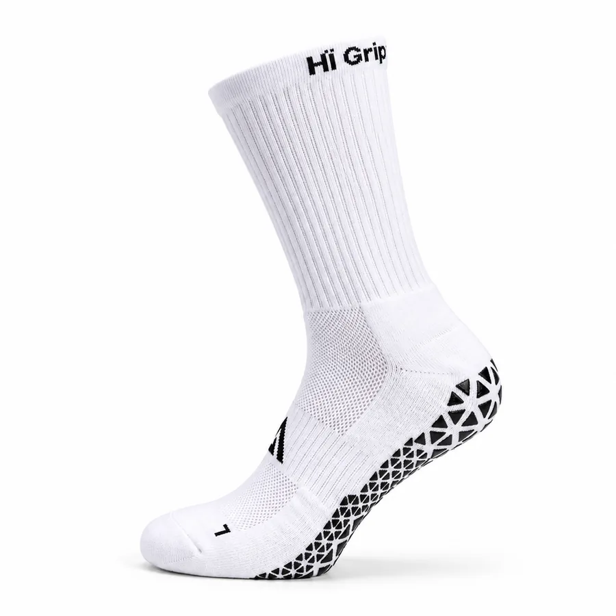
          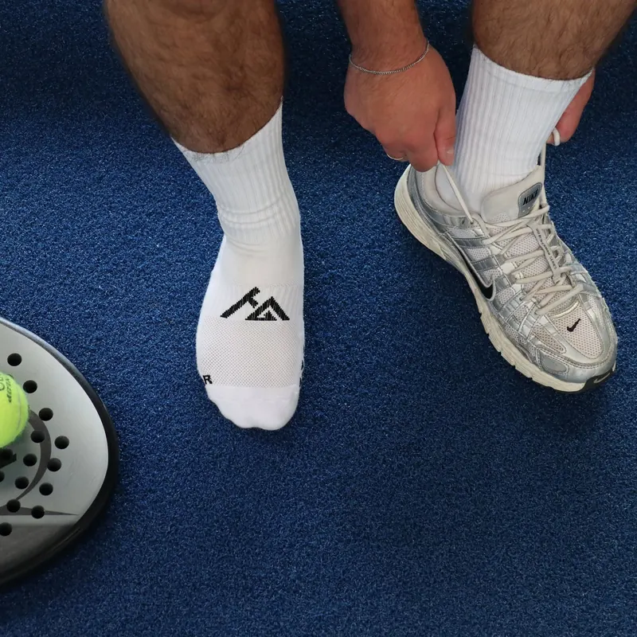
          <span class="hp-02-tag">Prijsvriendelijk</span>
        </button>
        <div class="hp-02-head">
          <h3 class="hp-02-title">Performance Gripsokken 1.0</h3>
          <span class="hp-02-price">€14,95</span>
        </div>
        <p class="hp-02-sub">Grip voor de scherpste prijs</p>
        <ul class="hp-02-bullets">
          <li>Siliconen gripzones onder de voet</li>
          <li>Katoenmix voor elke dag en elke training</li>
          <li>Ideaal voor training, pilates en recreatief sporten</li>
        </ul>
        <div class="hp-02-foot">
          <p class="hp-02-sizes">Maat 34–39 · 40–46</p>
          <a class="hp-pill hp-02-cta" href="https://www.higrip.nl/products/performance-gripsokken">Shop 1.0<span class="hp-pill__chev" aria-hidden="true"><svg viewBox="0 0 14 14"><path d="M5 2.5 9.5 7 5 11.5" fill="none" stroke="currentColor" stroke-width="2"/></svg></span></a>
        </div>
      </li>

      <li class="hp-02-card hp-02-card--20" data-hp-02-card data-color="zwart">
        <button class="hp-02-media" type="button" aria-pressed="false" aria-label="Tennisser in gripsokken op de baan">
          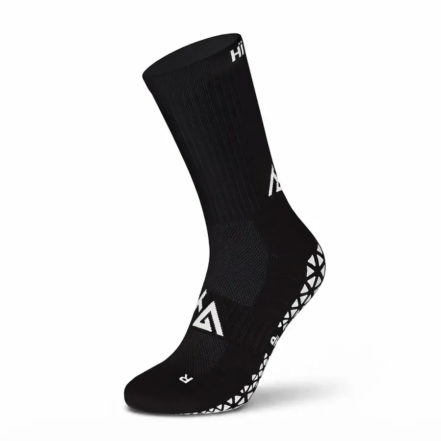
          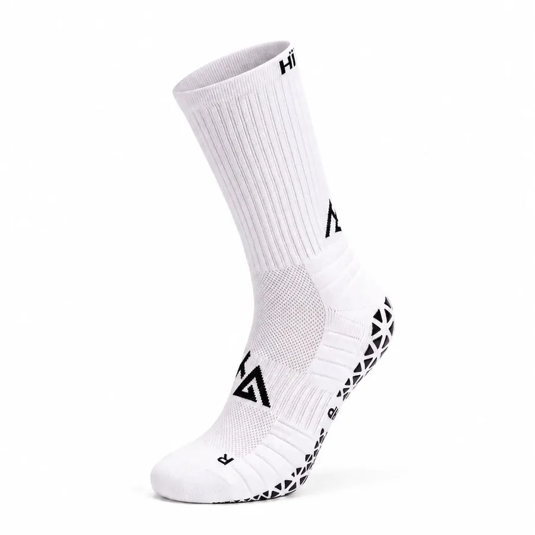
          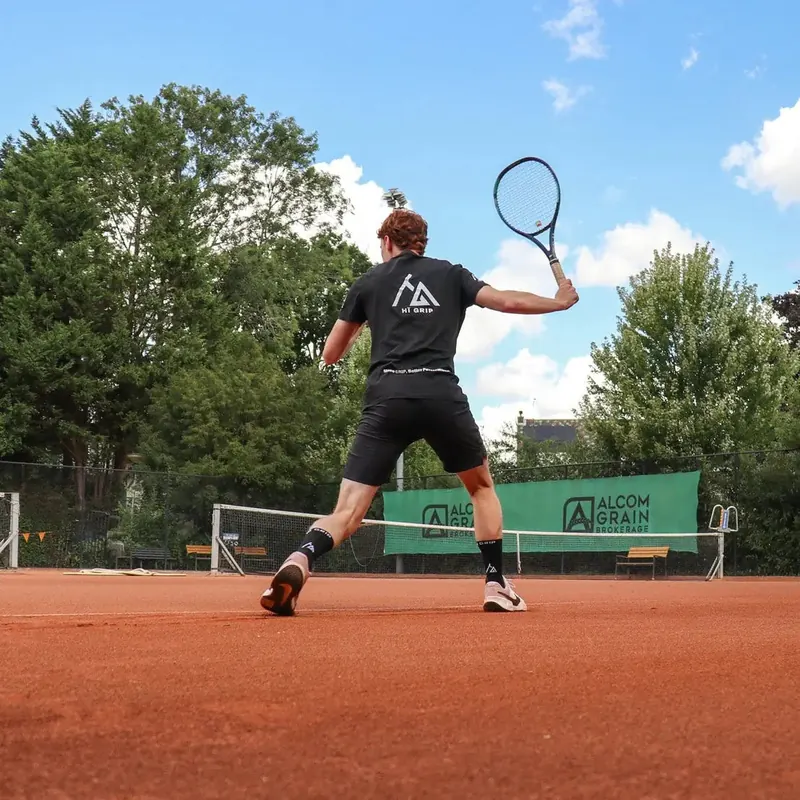
          <span class="hp-02-tag hp-02-tag--volt">Ultieme performance</span>
        </button>
        <div class="hp-02-head">
          <h3 class="hp-02-title">Performance Gripsokken 2.0</h3>
          <span class="hp-02-price">€17,95</span>
        </div>
        <p class="hp-02-sub">Zeven features in één sok</p>
        <ul class="hp-02-bullets">
          <li>15–20 mmHg compressie en 30% Coolmax®</li>
          <li>Naadloos, met versterkte hiel</li>
          <li>Gebouwd voor wedstrijd en intensieve training</li>
        </ul>
        <div class="hp-02-foot">
          <div class="hp-02-colors" role="group" aria-label="Kleur">
            <button class="hp-02-swatch hp-02-swatch--zwart" type="button" aria-pressed="true" data-color="zwart" data-href="https://www.higrip.nl/products/performance-gripsokken-2-0-zwart"><span class="hp-sr">Zwart</span></button>
            <button class="hp-02-swatch hp-02-swatch--wit" type="button" aria-pressed="false" data-color="wit" data-href="https://www.higrip.nl/products/performance-gripsokken-2-0-wit"><span class="hp-sr">Wit</span></button>
            <span class="hp-02-colorname" aria-hidden="true"><span class="hp-02-colorname__zwart">Zwart</span><span class="hp-02-colorname__wit">Wit</span></span>
          </div>
          <a class="hp-pill hp-02-cta" href="https://www.higrip.nl/products/performance-gripsokken-2-0-zwart" data-hp-02-cta>Shop 2.0<span class="hp-pill__chev" aria-hidden="true"><svg viewBox="0 0 14 14"><path d="M5 2.5 9.5 7 5 11.5" fill="none" stroke="currentColor" stroke-width="2"/></svg></span></a>
        </div>
      </li>
    </ul>

    <div class="hp-02-compare">
      <p class="hp-02-compare__text"><span class="hp-02-compare__q">Twijfel je tussen de 1.0 en de 2.0?</span> <span class="hp-02-compare__a">Bekijk ze naast elkaar.</span></p>
      <a class="hp-pill hp-pill--light hp-02-compare__cta" href="https://www.higrip.nl/pages/gripsokken-vergelijken">Vergelijk<span class="hp-pill__chev" aria-hidden="true"><svg viewBox="0 0 14 14"><path d="M5 2.5 9.5 7 5 11.5" fill="none" stroke="currentColor" stroke-width="2"/></svg></span></a>
    </div>
  </div>
</section>

<section class="hp-section hp-03" data-hp="03" aria-label="Waarom sporters voor HÏ Grip kiezen">
  <div class="hp-03-row hp-03-row--a" data-dir="-1">
    <div class="hp-03-track">
      <ul class="hp-03-set">
        <li class="hp-03-item hp-03-stat"><span class="hp-03-big hp-03-count">3500+</span><span class="hp-03-small">sporters gingen je voor</span></li>
        <li class="hp-03-sep" aria-hidden="true">/</li>
        <li class="hp-03-item hp-03-stat"><span class="hp-03-big"><span class="hp-03-star" aria-hidden="true">★</span>4,6</span><a class="hp-03-small hp-03-link" href="https://nl.trustpilot.com/review/higrip.nl" target="_blank" rel="noopener">op Trustpilot</a></li>
        <li class="hp-03-sep" aria-hidden="true">/</li>
        <li class="hp-03-item hp-03-line">Binnen 1 werkdag verzonden</li>
        <li class="hp-03-sep" aria-hidden="true">/</li>
      </ul>
      <ul class="hp-03-set" aria-hidden="true">
        <li class="hp-03-item hp-03-stat"><span class="hp-03-big hp-03-count">3500+</span><span class="hp-03-small">sporters gingen je voor</span></li>
        <li class="hp-03-sep">/</li>
        <li class="hp-03-item hp-03-stat"><span class="hp-03-big"><span class="hp-03-star">★</span>4,6</span><a class="hp-03-small hp-03-link" href="https://nl.trustpilot.com/review/higrip.nl" target="_blank" rel="noopener" tabindex="-1">op Trustpilot</a></li>
        <li class="hp-03-sep">/</li>
        <li class="hp-03-item hp-03-line">Binnen 1 werkdag verzonden</li>
        <li class="hp-03-sep">/</li>
      </ul>
      <ul class="hp-03-set" aria-hidden="true">
        <li class="hp-03-item hp-03-stat"><span class="hp-03-big hp-03-count">3500+</span><span class="hp-03-small">sporters gingen je voor</span></li>
        <li class="hp-03-sep">/</li>
        <li class="hp-03-item hp-03-stat"><span class="hp-03-big"><span class="hp-03-star">★</span>4,6</span><a class="hp-03-small hp-03-link" href="https://nl.trustpilot.com/review/higrip.nl" target="_blank" rel="noopener" tabindex="-1">op Trustpilot</a></li>
        <li class="hp-03-sep">/</li>
        <li class="hp-03-item hp-03-line">Binnen 1 werkdag verzonden</li>
        <li class="hp-03-sep">/</li>
      </ul>
    </div>
  </div>
  <div class="hp-03-row hp-03-row--b" data-dir="1">
    <div class="hp-03-track">
      <ul class="hp-03-set">
        <li class="hp-03-item hp-03-slogan">More grip, better performance.</li>
        <li class="hp-03-item hp-03-slogan hp-03-ghost" aria-hidden="true">More grip, better performance.</li>
      </ul>
      <ul class="hp-03-set" aria-hidden="true">
        <li class="hp-03-item hp-03-slogan">More grip, better performance.</li>
        <li class="hp-03-item hp-03-slogan hp-03-ghost">More grip, better performance.</li>
      </ul>
      <ul class="hp-03-set" aria-hidden="true">
        <li class="hp-03-item hp-03-slogan">More grip, better performance.</li>
        <li class="hp-03-item hp-03-slogan hp-03-ghost">More grip, better performance.</li>
      </ul>
    </div>
  </div>
</section>

<section class="hp-section hp-04" data-hp="04" aria-labelledby="hp-04-h2">
  <div class="hp-container hp-04-head">
    <h2 class="hp-h2 hp-04-h2" id="hp-04-h2">Op de baan, het veld en in de gym</h2>
    <p class="hp-lead hp-04-lead">Echte sporters, echte wedstrijden. Sleep door de foto's en tik er een aan om in te zoomen.</p>
    <p class="hp-04-hint"><svg class="hp-04-hint__icon" viewBox="0 0 24 12" aria-hidden="true"><path d="M5 2 1 6l4 4M19 2l4 4-4 4M1 6h22" fill="none" stroke="currentColor" stroke-width="1.6"/></svg><span class="hp-04-hint__pointer">Sleep of klik om in te zoomen</span><span class="hp-04-hint__touch">Swipe of tik om in te zoomen</span></p>
  </div>

  <div class="hp-04-viewport" role="region" aria-label="Foto's van sporters met HÏ Grip, sleep om te bladeren">
    <div class="hp-04-belt">
      <ul class="hp-04-track">
      <li class="hp-04-item">
        <figure class="hp-04-fig">
          <button class="hp-media hp-04-photo" type="button" aria-pressed="false" style="--hp-04-x: 66%">
            
            <span class="hp-04-cue"><span class="hp-04-cue__icon" aria-hidden="true"><svg class="hp-04-cue__in" viewBox="0 0 14 14"><path d="M8.5 1.5h4v4M5.5 12.5h-4v-4M12.5 1.5 8 6M1.5 12.5 6 8" fill="none" stroke="currentColor" stroke-width="1.6"/></svg><svg class="hp-04-cue__out" viewBox="0 0 14 14"><path d="M3 3l8 8M11 3l-8 8" fill="none" stroke="currentColor" stroke-width="1.8"/></svg></span><span class="hp-04-cue__label hp-04-cue__label--open">Zoom in op foto</span><span class="hp-04-cue__label hp-04-cue__label--close">Sluiten</span></span>
          </button>
          <figcaption class="hp-04-cap">Padel</figcaption>
        </figure>
      </li>
      <li class="hp-04-item">
        <figure class="hp-04-fig">
          <button class="hp-media hp-04-photo" type="button" aria-pressed="false" style="--hp-04-x: 68%">
            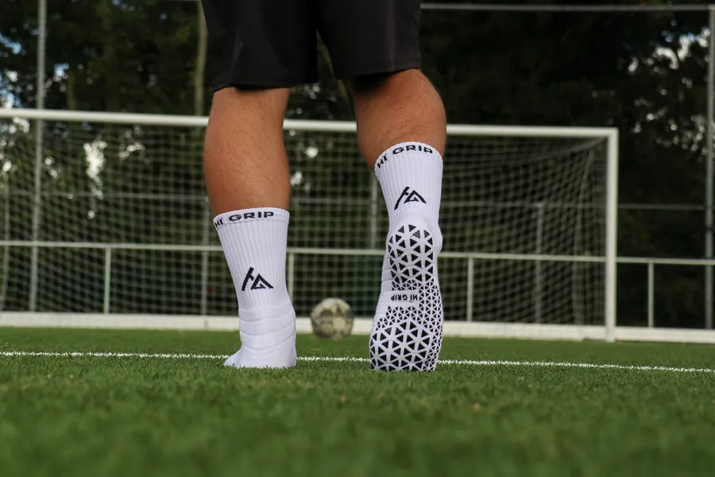
            <span class="hp-04-cue"><span class="hp-04-cue__icon" aria-hidden="true"><svg class="hp-04-cue__in" viewBox="0 0 14 14"><path d="M8.5 1.5h4v4M5.5 12.5h-4v-4M12.5 1.5 8 6M1.5 12.5 6 8" fill="none" stroke="currentColor" stroke-width="1.6"/></svg><svg class="hp-04-cue__out" viewBox="0 0 14 14"><path d="M3 3l8 8M11 3l-8 8" fill="none" stroke="currentColor" stroke-width="1.8"/></svg></span><span class="hp-04-cue__label hp-04-cue__label--open">Zoom in op foto</span><span class="hp-04-cue__label hp-04-cue__label--close">Sluiten</span></span>
          </button>
          <figcaption class="hp-04-cap">Voetbal</figcaption>
        </figure>
      </li>
      <li class="hp-04-item">
        <figure class="hp-04-fig">
          <button class="hp-media hp-04-photo" type="button" aria-pressed="false" style="--hp-04-x: 71%">
            
            <span class="hp-04-cue"><span class="hp-04-cue__icon" aria-hidden="true"><svg class="hp-04-cue__in" viewBox="0 0 14 14"><path d="M8.5 1.5h4v4M5.5 12.5h-4v-4M12.5 1.5 8 6M1.5 12.5 6 8" fill="none" stroke="currentColor" stroke-width="1.6"/></svg><svg class="hp-04-cue__out" viewBox="0 0 14 14"><path d="M3 3l8 8M11 3l-8 8" fill="none" stroke="currentColor" stroke-width="1.8"/></svg></span><span class="hp-04-cue__label hp-04-cue__label--open">Zoom in op foto</span><span class="hp-04-cue__label hp-04-cue__label--close">Sluiten</span></span>
          </button>
          <figcaption class="hp-04-cap">Gym</figcaption>
        </figure>
      </li>
      <li class="hp-04-item">
        <figure class="hp-04-fig">
          <button class="hp-media hp-04-photo" type="button" aria-pressed="false" style="--hp-04-x: 50%">
            
            <span class="hp-04-cue"><span class="hp-04-cue__icon" aria-hidden="true"><svg class="hp-04-cue__in" viewBox="0 0 14 14"><path d="M8.5 1.5h4v4M5.5 12.5h-4v-4M12.5 1.5 8 6M1.5 12.5 6 8" fill="none" stroke="currentColor" stroke-width="1.6"/></svg><svg class="hp-04-cue__out" viewBox="0 0 14 14"><path d="M3 3l8 8M11 3l-8 8" fill="none" stroke="currentColor" stroke-width="1.8"/></svg></span><span class="hp-04-cue__label hp-04-cue__label--open">Zoom in op foto</span><span class="hp-04-cue__label hp-04-cue__label--close">Sluiten</span></span>
          </button>
          <figcaption class="hp-04-cap">Indoor</figcaption>
        </figure>
      </li>
      <li class="hp-04-item">
        <figure class="hp-04-fig">
          <button class="hp-media hp-04-photo" type="button" aria-pressed="false" style="--hp-04-x: 60%">
            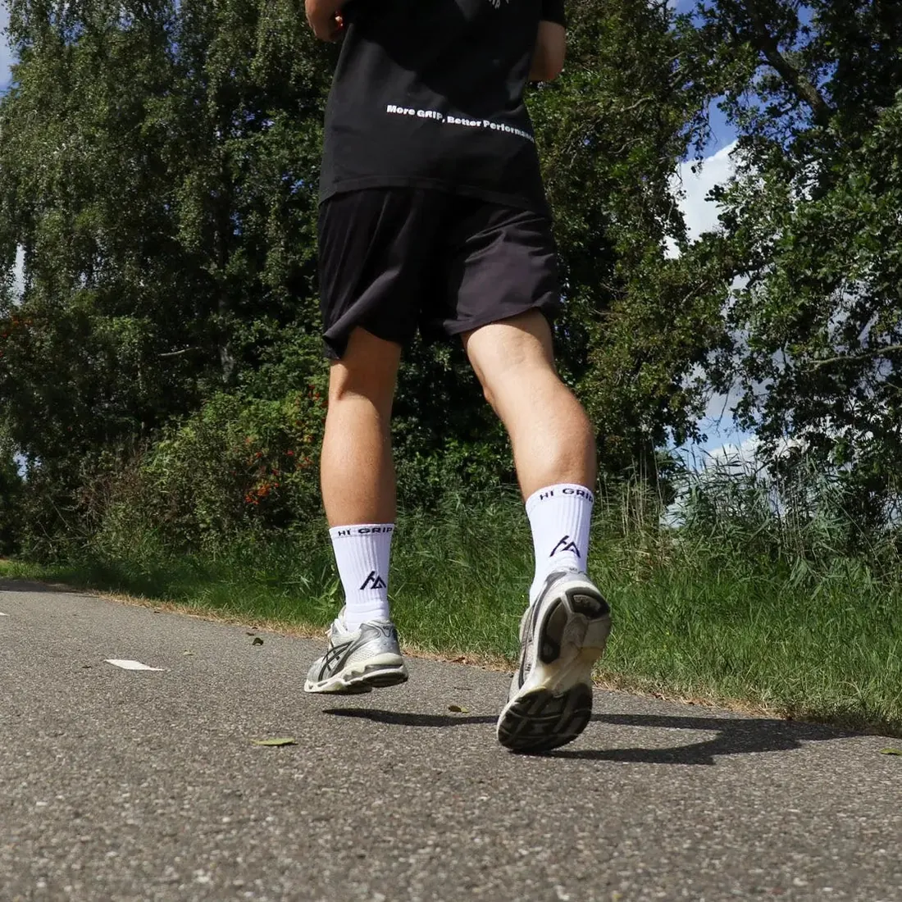
            <span class="hp-04-cue"><span class="hp-04-cue__icon" aria-hidden="true"><svg class="hp-04-cue__in" viewBox="0 0 14 14"><path d="M8.5 1.5h4v4M5.5 12.5h-4v-4M12.5 1.5 8 6M1.5 12.5 6 8" fill="none" stroke="currentColor" stroke-width="1.6"/></svg><svg class="hp-04-cue__out" viewBox="0 0 14 14"><path d="M3 3l8 8M11 3l-8 8" fill="none" stroke="currentColor" stroke-width="1.8"/></svg></span><span class="hp-04-cue__label hp-04-cue__label--open">Zoom in op foto</span><span class="hp-04-cue__label hp-04-cue__label--close">Sluiten</span></span>
          </button>
          <figcaption class="hp-04-cap">Hardlopen</figcaption>
        </figure>
      </li>
      <li class="hp-04-item">
        <figure class="hp-04-fig">
          <button class="hp-media hp-04-photo" type="button" aria-pressed="false" style="--hp-04-x: 58%">
            
            <span class="hp-04-cue"><span class="hp-04-cue__icon" aria-hidden="true"><svg class="hp-04-cue__in" viewBox="0 0 14 14"><path d="M8.5 1.5h4v4M5.5 12.5h-4v-4M12.5 1.5 8 6M1.5 12.5 6 8" fill="none" stroke="currentColor" stroke-width="1.6"/></svg><svg class="hp-04-cue__out" viewBox="0 0 14 14"><path d="M3 3l8 8M11 3l-8 8" fill="none" stroke="currentColor" stroke-width="1.8"/></svg></span><span class="hp-04-cue__label hp-04-cue__label--open">Zoom in op foto</span><span class="hp-04-cue__label hp-04-cue__label--close">Sluiten</span></span>
          </button>
          <figcaption class="hp-04-cap">Voetbal</figcaption>
        </figure>
      </li>
      <li class="hp-04-item">
        <figure class="hp-04-fig">
          <button class="hp-media hp-04-photo" type="button" aria-pressed="false" style="--hp-04-x: 62%">
            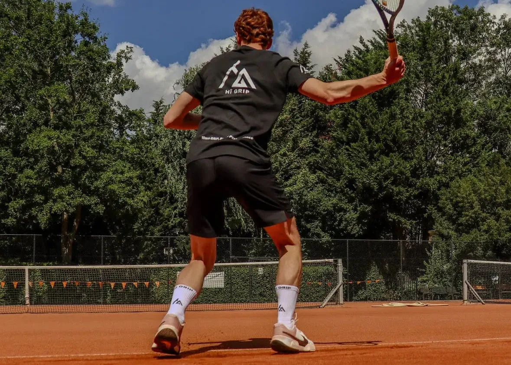
            <span class="hp-04-cue"><span class="hp-04-cue__icon" aria-hidden="true"><svg class="hp-04-cue__in" viewBox="0 0 14 14"><path d="M8.5 1.5h4v4M5.5 12.5h-4v-4M12.5 1.5 8 6M1.5 12.5 6 8" fill="none" stroke="currentColor" stroke-width="1.6"/></svg><svg class="hp-04-cue__out" viewBox="0 0 14 14"><path d="M3 3l8 8M11 3l-8 8" fill="none" stroke="currentColor" stroke-width="1.8"/></svg></span><span class="hp-04-cue__label hp-04-cue__label--open">Zoom in op foto</span><span class="hp-04-cue__label hp-04-cue__label--close">Sluiten</span></span>
          </button>
          <figcaption class="hp-04-cap">Tennis</figcaption>
        </figure>
      </li>
      <li class="hp-04-item">
        <figure class="hp-04-fig">
          <button class="hp-media hp-04-photo" type="button" aria-pressed="false" style="--hp-04-x: 10%">
            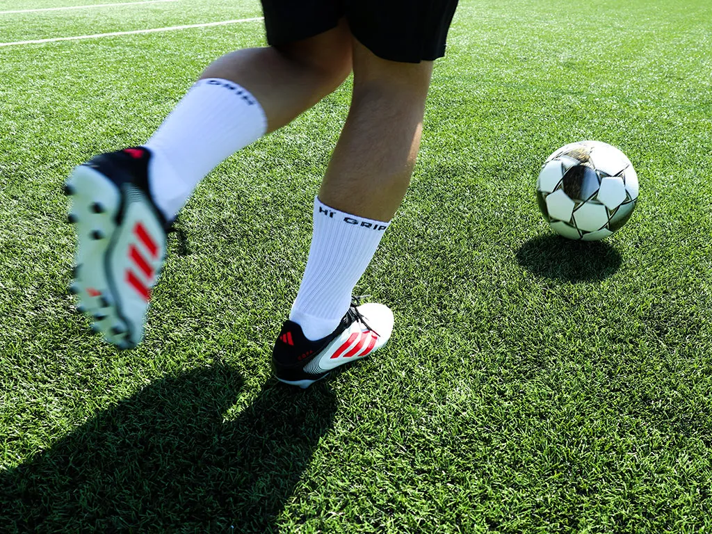
            <span class="hp-04-cue"><span class="hp-04-cue__icon" aria-hidden="true"><svg class="hp-04-cue__in" viewBox="0 0 14 14"><path d="M8.5 1.5h4v4M5.5 12.5h-4v-4M12.5 1.5 8 6M1.5 12.5 6 8" fill="none" stroke="currentColor" stroke-width="1.6"/></svg><svg class="hp-04-cue__out" viewBox="0 0 14 14"><path d="M3 3l8 8M11 3l-8 8" fill="none" stroke="currentColor" stroke-width="1.8"/></svg></span><span class="hp-04-cue__label hp-04-cue__label--open">Zoom in op foto</span><span class="hp-04-cue__label hp-04-cue__label--close">Sluiten</span></span>
          </button>
          <figcaption class="hp-04-cap">Voetbal</figcaption>
        </figure>
      </li>
      </ul>
    </div>
  </div>
</section>

<section class="hp-section hp-05" data-hp="05" aria-labelledby="hp-05-h2">
  <div class="hp-container">
    <header class="hp-05-head">
      <h2 class="hp-h2 hp-05-h2" id="hp-05-h2">Elke zone heeft een taak.</h2>
      <p class="hp-lead hp-05-lead">De Performance Gripsokken 2.0 in 360°. Ga met je muis over een feature of tik erop, en zie waar hij zit.</p>
    </header>

    <div class="hp-05-grid">
      <div class="hp-05-media">
        <div class="hp-05-stage" id="hp-05-stage" tabindex="0" role="slider" aria-label="Sleep om te draaien" aria-valuemin="0" aria-valuemax="359" aria-valuenow="0">
          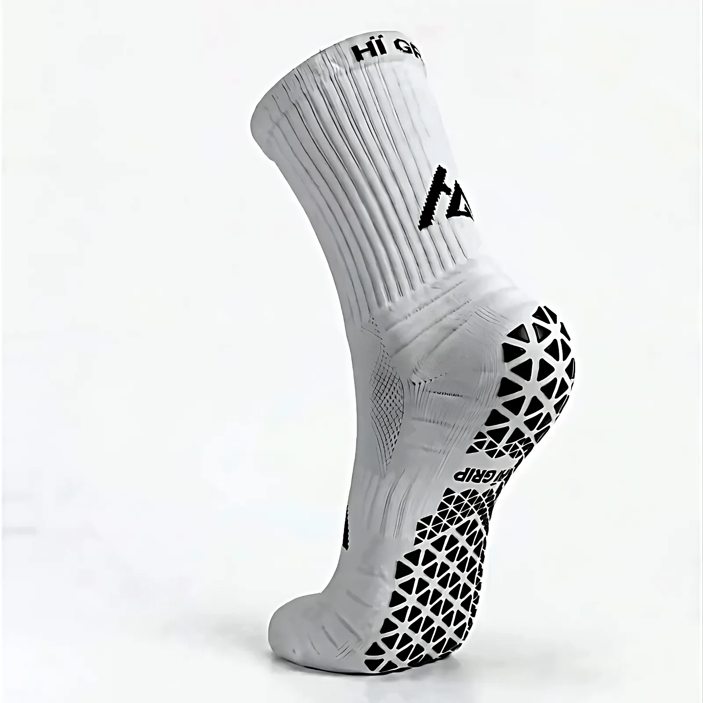
          <canvas class="hp-05-stage__canvas" aria-hidden="true"></canvas>
          <span class="hp-05-mark" aria-hidden="true"><span class="hp-05-mark__ring"><span class="hp-05-mark__no"></span></span></span>
        </div>
        <div class="hp-05-controls">
          <p class="hp-05-hint"><svg viewBox="0 0 22 12" aria-hidden="true"><path d="M5 1.5 1 6l4 4.5M17 1.5 21 6l-4 4.5M1 6h20" fill="none" stroke="currentColor" stroke-width="1.6"/></svg>Sleep om te draaien</p>
          <span class="hp-05-dial" aria-hidden="true"><span class="hp-05-dial__tick"></span></span>
          <button class="hp-05-reset" type="button" aria-controls="hp-05-stage">Hele sok</button>
        </div>
      </div>

      <div class="hp-05-aside">
        <ol class="hp-05-list">
          <li><button class="hp-05-feat" type="button" data-f="grip" data-no="1" aria-pressed="false" aria-controls="hp-05-stage"><span class="hp-05-feat__no" aria-hidden="true">1</span><span class="hp-05-feat__name">Maximale grip</span><span class="hp-05-feat__text">Siliconen zones houden je voet vast in je schoen</span></button></li>
          <li><button class="hp-05-feat" type="button" data-f="compressie" data-no="2" aria-pressed="false" aria-controls="hp-05-stage"><span class="hp-05-feat__no" aria-hidden="true">2</span><span class="hp-05-feat__name">Compressie</span><span class="hp-05-feat__text">15–20 mmHg ondersteunt je doorbloeding tijdens inspanning</span></button></li>
          <li><button class="hp-05-feat" type="button" data-f="hiel" data-no="3" aria-pressed="false" aria-controls="hp-05-stage"><span class="hp-05-feat__no" aria-hidden="true">3</span><span class="hp-05-feat__name">Versterkte hiel</span><span class="hp-05-feat__text">Extra dikte precies onder je hiel</span></button></li>
          <li><button class="hp-05-feat" type="button" data-f="ademend" data-no="4" aria-pressed="false" aria-controls="hp-05-stage"><span class="hp-05-feat__no" aria-hidden="true">4</span><span class="hp-05-feat__name">Ademend</span><span class="hp-05-feat__text">Open structuur bovenop de voet</span></button></li>
          <li><button class="hp-05-feat" type="button" data-f="coolmax" data-no="5" aria-pressed="false" aria-controls="hp-05-stage"><span class="hp-05-feat__no" aria-hidden="true">5</span><span class="hp-05-feat__name">Coolmax®</span><span class="hp-05-feat__text">30% Coolmax voert vocht direct af van de huid</span></button></li>
          <li><button class="hp-05-feat" type="button" data-f="naadloos" data-no="6" aria-pressed="false" aria-controls="hp-05-stage"><span class="hp-05-feat__no" aria-hidden="true">6</span><span class="hp-05-feat__name">Naadloos</span><span class="hp-05-feat__text">Rondom gebreid zonder stiksels, naadloze teenzone</span></button></li>
          <li><button class="hp-05-feat" type="button" data-f="cushioning" data-no="7" aria-pressed="false" aria-controls="hp-05-stage"><span class="hp-05-feat__no" aria-hidden="true">7</span><span class="hp-05-feat__name">Special cushioning</span><span class="hp-05-feat__text">Speciale dempingzones onder de voet</span></button></li>
          <li><button class="hp-05-feat" type="button" data-f="materialen" data-no="8" aria-pressed="false" aria-controls="hp-05-stage"><span class="hp-05-feat__no" aria-hidden="true">8</span><span class="hp-05-feat__name">Hoogwaardige materialen</span><span class="hp-05-feat__text">Zorgvuldig gekozen garens voor meer comfort, wedstrijd na wedstrijd</span></button></li>
        </ol>

        <div class="hp-05-buy">
          <p class="hp-05-buy__name">Performance Gripsokken 2.0</p>
          <p class="hp-05-buy__meta"><span class="hp-05-buy__price">€17,95</span><span aria-hidden="true">·</span><span>Zwart of wit</span></p>
          <a class="hp-pill hp-05-cta" href="https://www.higrip.nl/products/performance-gripsokken-2-0-zwart">Shop de 2.0<span class="hp-pill__chev" aria-hidden="true"><svg viewBox="0 0 14 14"><path d="M5 2.5 9.5 7 5 11.5" fill="none" stroke="currentColor" stroke-width="2"/></svg></span></a>
        </div>
      </div>
    </div>
  </div>
</section>

<section class="hp-section hp-06" data-hp="06">
  <div class="hp-container">
    <p class="hp-06-statement" data-hp-06-words>Je schoen <span class="hp-06-mark">grijpt</span> de vloer. HÏ&nbsp;Grip zorgt dat je voet je schoen <span class="hp-06-mark">grijpt</span>. Minder schuiven bij elke stop, elke draai en elke sprint, tot de laatste bal.</p>
  </div>
</section>

<section class="hp-section hp-07" data-hp="07" id="sporten" data-sport="padel" aria-labelledby="hp-07-h2">
  <div class="hp-07-wave" aria-hidden="true"><span class="hp-07-hole"></span></div>
  <div class="hp-container hp-07-head">
    <h2 class="hp-h2 hp-07-h2" id="hp-07-h2">Kies je sport</h2>
    <p class="hp-lead hp-07-lead">Elke sport vraagt iets anders van je voet. Kies de jouwe en lees waarom grip daar telt.</p>
  </div>

  <!-- Rij met sportkaarten: hpDrag (center), een sleep telt niet als klik. Klik op een buurkaart centreert eerst. -->
  <div class="hp-07-viewport" role="group" aria-label="Sporten, sleep of gebruik de pijltjes">
    <ul class="hp-07-track">
      <li class="hp-07-item is-active" data-sport="padel">
        <a class="hp-07-card" href="https://www.higrip.nl/pages/gripsokken-voor-padel" aria-label="Gripsokken voor padel" aria-describedby="hp-07-line-padel" draggable="false">
          <div class="hp-07-frame">
            
          </div>
          <div class="hp-07-copy">
            <h3 class="hp-07-name">Padel</h3>
            <p class="hp-07-line" id="hp-07-line-padel">Uit het glas, terug naar het net. Je voet blijft staan als jij afremt.</p>
            <span class="hp-07-chev" aria-hidden="true"><svg viewBox="0 0 14 14"><path d="M5 2.5 9.5 7 5 11.5" fill="none" stroke="currentColor" stroke-width="2"/></svg></span>
          </div>
        </a>
      </li>
      <li class="hp-07-item" data-sport="tennis">
        <a class="hp-07-card" href="https://www.higrip.nl/pages/gripsokken-voor-tennis" aria-label="Gripsokken voor tennis" aria-describedby="hp-07-line-tennis" draggable="false" tabindex="-1">
          <div class="hp-07-frame">
            
          </div>
          <div class="hp-07-copy">
            <h3 class="hp-07-name">Tennis</h3>
            <p class="hp-07-line" id="hp-07-line-tennis">Split-step, landen, wegduwen. Geen speling in je schoen bij de eerste stap.</p>
            <span class="hp-07-chev" aria-hidden="true"><svg viewBox="0 0 14 14"><path d="M5 2.5 9.5 7 5 11.5" fill="none" stroke="currentColor" stroke-width="2"/></svg></span>
          </div>
        </a>
      </li>
      <li class="hp-07-item" data-sport="voetbal">
        <a class="hp-07-card" href="https://www.higrip.nl/pages/gripsokken-voor-voetbal" aria-label="Gripsokken voor voetbal" aria-describedby="hp-07-line-voetbal" draggable="false" tabindex="-1">
          <div class="hp-07-frame">
            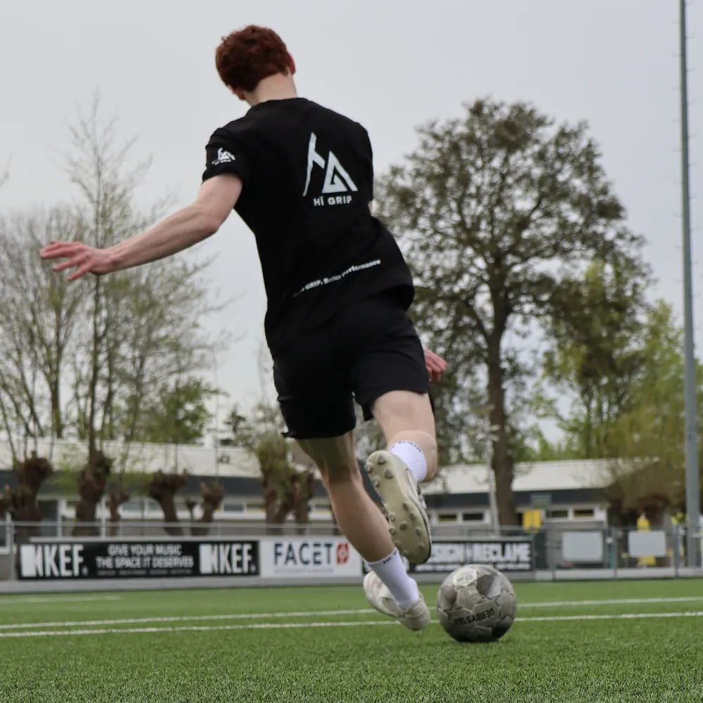
          </div>
          <div class="hp-07-copy">
            <h3 class="hp-07-name">Voetbal</h3>
            <p class="hp-07-line" id="hp-07-line-voetbal">Wegdraaien bij je man zonder dat je voet in je schoen meedraait.</p>
            <span class="hp-07-chev" aria-hidden="true"><svg viewBox="0 0 14 14"><path d="M5 2.5 9.5 7 5 11.5" fill="none" stroke="currentColor" stroke-width="2"/></svg></span>
          </div>
        </a>
      </li>
      <li class="hp-07-item" data-sport="rugby">
        <a class="hp-07-card" href="https://www.higrip.nl/pages/gripsokken-voor-rugby" aria-label="Gripsokken voor rugby" aria-describedby="hp-07-line-rugby" draggable="false" tabindex="-1">
          <div class="hp-07-frame">
            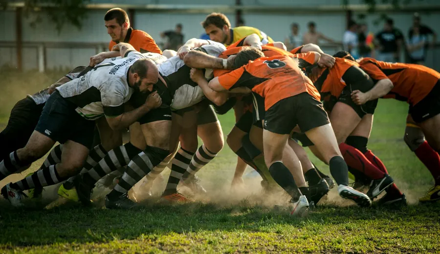
          </div>
          <div class="hp-07-copy">
            <h3 class="hp-07-name">Rugby</h3>
            <p class="hp-07-line" id="hp-07-line-rugby">Duwen in de scrum tot de bal eruit is. Je voet geeft geen centimeter weg.</p>
            <span class="hp-07-chev" aria-hidden="true"><svg viewBox="0 0 14 14"><path d="M5 2.5 9.5 7 5 11.5" fill="none" stroke="currentColor" stroke-width="2"/></svg></span>
          </div>
        </a>
      </li>
    </ul>
  </div>

  <div class="hp-container hp-07-controls">
    <button class="hp-07-btn hp-07-prev" type="button" aria-label="Vorige sport"><svg viewBox="0 0 14 14" aria-hidden="true"><path d="M9 2.5 4.5 7 9 11.5" fill="none" stroke="currentColor" stroke-width="1.8"/></svg></button>
    <button class="hp-07-btn hp-07-next" type="button" aria-label="Volgende sport"><svg viewBox="0 0 14 14" aria-hidden="true"><path d="M5 2.5 9.5 7 5 11.5" fill="none" stroke="currentColor" stroke-width="1.8"/></svg></button>
  </div>
  <p class="hp-sr hp-07-status" aria-live="polite" data-template="{sport}, sport {n} van {total}"></p>
</section>

<section class="hp-section hp-section--flush hp-08" data-hp="08" aria-labelledby="hp-08-h2">
  <div class="hp-08-split">
    <div class="hp-08-panel">
      <h2 class="hp-08-loop" id="hp-08-h2">
        <span class="hp-sr">Sportswear is het fundament van presteren.</span>
        <span class="hp-08-lines" aria-hidden="true">
          <span class="hp-08-line" data-s="2">Sportswear</span>
          <span class="hp-08-line" data-s="2">is het</span>
          <span class="hp-08-line" data-s="2">fundament van</span>
          <span class="hp-08-line" data-s="2">presteren.</span>
        </span>
      </h2>
      <div class="hp-08-foot">
        <p class="hp-08-body">HÏ Grip begon bij sporters die naast hun studie een eigen merk bouwen. We startten vanuit de passie voor sporten en presteren, en we geven nooit op. Daarom maken we sportswear die een stap verder gaat. Geen 100%, maar 110%.</p>
        <!-- Afsluiter van het paneel: brede pill. Hover/focus/tik: de chevroncirkel schuift over de volle breedte naar rechts,
             het woord schuift in zijn plaats en rolt omhoog naar een tweede regel (aria-hidden). -->
        <a class="hp-pill hp-pill--light hp-08-cta" href="https://www.higrip.nl/pages/over-ons">
          <span class="hp-pill__chev hp-08-cta__chev" aria-hidden="true"><svg viewBox="0 0 14 14"><path d="M5 2.5 9.5 7 5 11.5" fill="none" stroke="currentColor" stroke-width="2"/></svg></span>
          <span class="hp-08-cta__label"><span class="hp-08-cta__word">Ons verhaal</span><span class="hp-08-cta__word" aria-hidden="true">Ons verhaal</span></span>
        </a>
      </div>
    </div>
    <figure class="hp-08-media">
      
    </figure>
  </div>
</section>

<section class="hp-section hp-09" data-hp="09" aria-labelledby="hp-09-h2">
  <div class="hp-container hp-09-inner">
    <h2 class="hp-09-h2" id="hp-09-h2">Clubs, winkels en studio's gingen je voor</h2>

    <div class="hp-09-viewport" data-hp-09-viewport>
      <ul class="hp-09-track" data-hp-09-track>
        <li class="hp-09-item"><span class="hp-09-logo hp-09-logo--spirit"></span></li>
        <li class="hp-09-item"><span class="hp-09-logo hp-09-logo--syth"></span></li>
        <li class="hp-09-item"><span class="hp-09-logo hp-09-logo--sport2000"></span></li>
        <li class="hp-09-item"><span class="hp-09-logo hp-09-logo--concordia">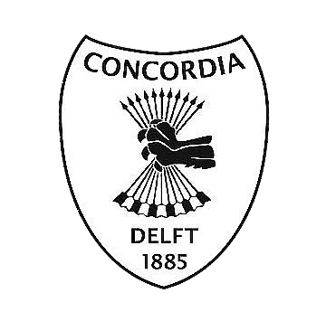</span></li>
        <li class="hp-09-item"><span class="hp-09-logo hp-09-logo--myhealthclub"></span></li>
        <li class="hp-09-item"><span class="hp-09-logo hp-09-logo--hr"></span></li>
      </ul>
    </div>
  </div>
</section>

<section class="hp-section hp-10" data-hp="10" aria-labelledby="hp-10-h2">
  <div class="hp-container hp-10-inner">
    <div class="hp-10-aside">
      <div class="hp-10-head">
        <h2 class="hp-h2 hp-10-h2" id="hp-10-h2">HÏ Grip voor je club, winkel of studio</h2>
        <p class="hp-lead hp-10-lead">Eén sok voor het hele team, grip in je schap of een eigen ontwerp voor je studio. Je begint met een gratis sample.</p>
      </div>

      <ol class="hp-10-index" aria-hidden="true">
        <li class="hp-10-index__i is-current"><span class="hp-10-index__n">01</span>Voetbalclubs</li>
        <li class="hp-10-index__i"><span class="hp-10-index__n">02</span>Sportwinkels</li>
        <li class="hp-10-index__i"><span class="hp-10-index__n">03</span>Pilates en studio's</li>
      </ol>

      <a class="hp-pill hp-10-cta" href="https://www.higrip.nl/pages/zakelijk">Vraag een gratis sample<span class="hp-pill__chev" aria-hidden="true"><svg viewBox="0 0 14 14"><path d="M5 2.5 9.5 7 5 11.5" fill="none" stroke="currentColor" stroke-width="2"/></svg></span></a>
    </div>

    <ul class="hp-10-stack" data-hp-10-stack>
      <li class="hp-10-item hp-10-item--club is-current">
        <a class="hp-10-card" href="https://www.higrip.nl/pages/zakelijk#clubs" aria-labelledby="hp-10-t-voetbal" aria-describedby="hp-10-d-voetbal">
          <div class="hp-10-media hp-10-media--photo">
            
          </div>
          <div class="hp-10-foot">
            <div class="hp-10-copy">
              <h3 class="hp-10-title" id="hp-10-t-voetbal">Voetbalclubs</h3>
              <p class="hp-10-text" id="hp-10-d-voetbal">Eigen logo en kleuren vanaf 150 paar. Eén uitstraling op het veld, voor al je teams.</p>
            </div>
            <span class="hp-10-cue" aria-hidden="true"><span class="hp-10-cue__label">Voor clubs</span><span class="hp-10-chev"><svg viewBox="0 0 14 14"><path d="M5 2.5 9.5 7 5 11.5" fill="none" stroke="currentColor" stroke-width="2"/></svg></span></span>
          </div>
        </a>
      </li>

      <li class="hp-10-item hp-10-item--retail">
        <a class="hp-10-card" href="https://www.higrip.nl/pages/zakelijk#retailers" aria-labelledby="hp-10-t-retail" aria-describedby="hp-10-d-retail">
          <div class="hp-10-media hp-10-media--product">
            
            
          </div>
          <div class="hp-10-foot">
            <div class="hp-10-copy">
              <h3 class="hp-10-title" id="hp-10-t-retail">Sportwinkels</h3>
              <p class="hp-10-text" id="hp-10-d-retail">Staffelprijzen vanaf 6 paar en een adviesprijs van €19,95. Je klant voelt het verschil zodra hij hem aantrekt.</p>
            </div>
            <span class="hp-10-cue" aria-hidden="true"><span class="hp-10-cue__label">Voor winkels</span><span class="hp-10-chev"><svg viewBox="0 0 14 14"><path d="M5 2.5 9.5 7 5 11.5" fill="none" stroke="currentColor" stroke-width="2"/></svg></span></span>
          </div>
        </a>
      </li>

      <li class="hp-10-item hp-10-item--studio">
        <a class="hp-10-card" href="https://www.higrip.nl/pages/zakelijk#clubs" aria-labelledby="hp-10-t-pilates" aria-describedby="hp-10-d-pilates">
          <div class="hp-10-media hp-10-media--sheet">
            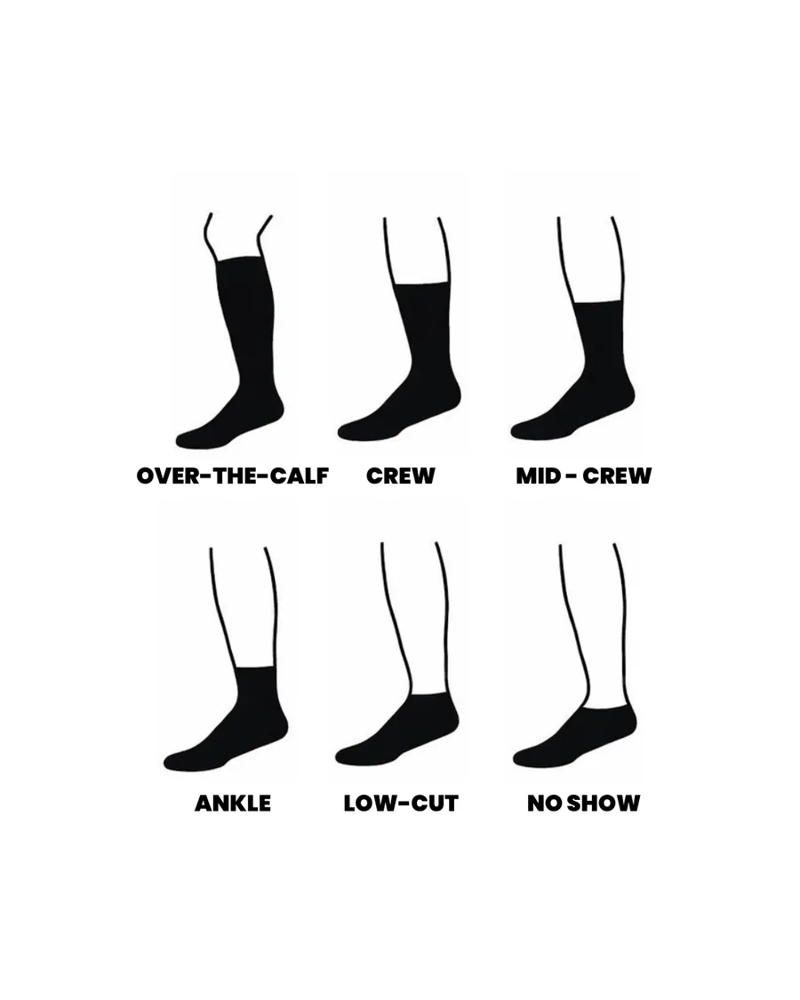
          </div>
          <div class="hp-10-foot">
            <div class="hp-10-copy">
              <h3 class="hp-10-title" id="hp-10-t-pilates">Pilates en studio's</h3>
              <p class="hp-10-text" id="hp-10-d-pilates">Wij maken de sok voor jouw studio: kleur, lengte, logo en verpakking.</p>
            </div>
            <span class="hp-10-cue" aria-hidden="true"><span class="hp-10-cue__label">Voor studio's</span><span class="hp-10-chev"><svg viewBox="0 0 14 14"><path d="M5 2.5 9.5 7 5 11.5" fill="none" stroke="currentColor" stroke-width="2"/></svg></span></span>
          </div>
        </a>
      </li>
    </ul>
  </div>
</section>

<section class="hp-section hp-11" data-hp="11" aria-labelledby="hp-11-h2">
  <div class="hp-container hp-11-wrap">
    <h2 class="hp-11-h2" id="hp-11-h2">Veelgestelde vragen</h2>
    <div class="hp-11-list">
    <details class="hp-11-item">
      <summary class="hp-11-sum"><h3 class="hp-11-q">Wat zijn gripsokken?</h3></summary>
      <div class="hp-11-a"><p>Gripsokken zijn sportsokken met een grippatroon op de zool. Dat patroon houdt je voet op zijn plek in je schoen, zodat je minder over je binnenzool glijdt bij afremmen, draaien en wegsprinten.</p></div>
    </details>
    <details class="hp-11-item">
      <summary class="hp-11-sum"><h3 class="hp-11-q">Werken gripsokken echt?</h3></summary>
      <div class="hp-11-a"><p>Wetenschappelijk aangetoond: gripsokken verhogen de statische wrijvingscoëfficiënt van 0,60 naar 1,17, dus 95% meer grip (Apps et al. 2022). Het onderzoek gaat over gripsokken in het algemeen, niet over een test van HÏ Grip.</p></div>
    </details>
    <details class="hp-11-item">
      <summary class="hp-11-sum"><h3 class="hp-11-q">Voor welke sporten zijn gripsokken?</h3></summary>
      <div class="hp-11-a"><p>Voor elke sport waarin je snel afremt en draait: padel, tennis, voetbal en rugby. Per sport lees je op een eigen pagina waarom grip daar telt.</p></div>
    </details>
    <details class="hp-11-item">
      <summary class="hp-11-sum"><h3 class="hp-11-q">Wat is het verschil tussen de 1.0 en de 2.0?</h3></summary>
      <div class="hp-11-a"><p>Allebei hebben ze siliconen grip onder de zool. De 2.0 voegt 15–20 mmHg compressie, 30% Coolmax®, een naadloze teenzone, een versterkte hiel en special cushioning toe.</p></div>
    </details>
    <details class="hp-11-item">
      <summary class="hp-11-sum"><h3 class="hp-11-q">Wat kosten HÏ Grip gripsokken?</h3></summary>
      <div class="hp-11-a"><p>De Performance Gripsokken (1.0) kosten €14,95 per paar, €35,95 voor een 3-pack en €54,95 voor een 5-pack. De Performance Gripsokken 2.0 kosten €17,95 per paar, in zwart of wit.</p></div>
    </details>
    <details class="hp-11-item">
      <summary class="hp-11-sum"><h3 class="hp-11-q">Welke maat kies ik?</h3></summary>
      <div class="hp-11-a"><p>Kies de maat die bij je schoenmaat past. De 1.0 is er in 34–39 en 40–46, de 2.0 in 35–38, 39–42 en 43–47.</p></div>
    </details>
    <details class="hp-11-item">
      <summary class="hp-11-sum"><h3 class="hp-11-q">Kan mijn club of winkel zakelijk bestellen?</h3></summary>
      <div class="hp-11-a"><p>Ja. Sportwinkels bestellen met staffelprijzen vanaf 6 paar, clubs en studio's kunnen vanaf 150 paar een eigen logo en eigen kleuren laten maken. Een sample is gratis.</p></div>
    </details>
    </div>
  </div>
  <script type="application/ld+json">
{
  "@context": "https://schema.org",
  "@type": "FAQPage",
  "mainEntity": [
    {
      "@type": "Question",
      "name": "Wat zijn gripsokken?",
      "acceptedAnswer": {
        "@type": "Answer",
        "text": "Gripsokken zijn sportsokken met een grippatroon op de zool. Dat patroon houdt je voet op zijn plek in je schoen, zodat je minder over je binnenzool glijdt bij afremmen, draaien en wegsprinten."
      }
    },
    {
      "@type": "Question",
      "name": "Werken gripsokken echt?",
      "acceptedAnswer": {
        "@type": "Answer",
        "text": "Wetenschappelijk aangetoond: gripsokken verhogen de statische wrijvingscoëfficiënt van 0,60 naar 1,17, dus 95% meer grip (Apps et al. 2022). Het onderzoek gaat over gripsokken in het algemeen, niet over een test van HÏ Grip."
      }
    },
    {
      "@type": "Question",
      "name": "Voor welke sporten zijn gripsokken?",
      "acceptedAnswer": {
        "@type": "Answer",
        "text": "Voor elke sport waarin je snel afremt en draait: padel, tennis, voetbal en rugby. Per sport lees je op een eigen pagina waarom grip daar telt."
      }
    },
    {
      "@type": "Question",
      "name": "Wat is het verschil tussen de 1.0 en de 2.0?",
      "acceptedAnswer": {
        "@type": "Answer",
        "text": "Allebei hebben ze siliconen grip onder de zool. De 2.0 voegt 15–20 mmHg compressie, 30% Coolmax®, een naadloze teenzone, een versterkte hiel en special cushioning toe."
      }
    },
    {
      "@type": "Question",
      "name": "Wat kosten HÏ Grip gripsokken?",
      "acceptedAnswer": {
        "@type": "Answer",
        "text": "De Performance Gripsokken (1.0) kosten €14,95 per paar, €35,95 voor een 3-pack en €54,95 voor een 5-pack. De Performance Gripsokken 2.0 kosten €17,95 per paar, in zwart of wit."
      }
    },
    {
      "@type": "Question",
      "name": "Welke maat kies ik?",
      "acceptedAnswer": {
        "@type": "Answer",
        "text": "Kies de maat die bij je schoenmaat past. De 1.0 is er in 34–39 en 40–46, de 2.0 in 35–38, 39–42 en 43–47."
      }
    },
    {
      "@type": "Question",
      "name": "Kan mijn club of winkel zakelijk bestellen?",
      "acceptedAnswer": {
        "@type": "Answer",
        "text": "Ja. Sportwinkels bestellen met staffelprijzen vanaf 6 paar, clubs en studio's kunnen vanaf 150 paar een eigen logo en eigen kleuren laten maken. Een sample is gratis."
      }
    }
  ]
}
  </script>
</section>

<section class="hp-section hp-12" data-hp="12" aria-labelledby="hp-12-h">
  <div class="hp-12-bg" aria-hidden="true">
    
  </div>
  <div class="hp-container hp-12-inner">
    <h2 class="hp-12-title" id="hp-12-h"><span class="hp-12-l hp-12-l--1"><span class="hp-12-in">Ga door waar</span></span> <span class="hp-12-l hp-12-l--2"><span class="hp-12-in">anderen stoppen.</span></span></h2>
    <a class="hp-pill hp-pill--light hp-12-cta" href="https://www.higrip.nl/collections/gripsokken">Shop gripsokken<span class="hp-pill__chev" aria-hidden="true"><svg viewBox="0 0 14 14"><path d="M5 2.5 9.5 7 5 11.5" fill="none" stroke="currentColor" stroke-width="2"/></svg></span></a>
  </div>
</section>

<section class="hp-section hp-13" data-hp="13">
  <footer class="hp-container hp-13-inner">
    <div class="hp-13-intro">
      <p class="hp-13-line">Performance Grip Socks voor de sporter die doorgaat waar anderen stoppen.</p>
      <p class="hp-13-slogan">More grip, better performance.</p>
    </div>

    <div class="hp-13-grid">
      <nav class="hp-13-col" aria-labelledby="hp-13-t-algemeen">
        <h2 class="hp-13-title" id="hp-13-t-algemeen">Algemeen</h2>
        <ul class="hp-13-list">
          <li><a class="hp-13-link" href="https://www.higrip.nl/policies/terms-of-service">Algemene voorwaarden</a></li>
          <li><a class="hp-13-link" href="https://www.higrip.nl/policies/legal-notice">Wettelijke kennisgeving</a></li>
          <li><a class="hp-13-link" href="https://www.higrip.nl/pages/verzendbeleid">Verzendbeleid</a></li>
          <li><a class="hp-13-link" href="https://www.higrip.nl/pages/retourbeleid">Retourbeleid</a></li>
          <li><a class="hp-13-link" href="https://www.higrip.nl/pages/terugbetalingsbeleid">Betalingsbeleid</a></li>
          <li><a class="hp-13-link" href="https://www.higrip.nl/pages/privacybeleid">Privacybeleid</a></li>
        </ul>
      </nav>

      <nav class="hp-13-col" aria-labelledby="hp-13-t-higrip">
        <h2 class="hp-13-title" id="hp-13-t-higrip">HÏ Grip</h2>
        <ul class="hp-13-list">
          <li><a class="hp-13-link" href="https://www.higrip.nl/pages/veelgestelde-vragen">Veelgestelde vragen</a></li>
          <li><a class="hp-13-link" href="https://www.higrip.nl/pages/over-ons">Over ons</a></li>
          <li><a class="hp-13-link" href="https://www.higrip.nl/pages/zakelijk">Zakelijk</a></li>
          <li><a class="hp-13-link" href="https://www.higrip.nl/pages/contact">Contact</a></li>
          <li><a class="hp-13-link" href="https://nl.trustpilot.com/review/higrip.nl">Reviews</a></li>
          <li><a class="hp-13-link" href="https://www.higrip.nl/blogs/hi-grip/waarom-hi-grip-gripsokken">Voordelen</a></li>
        </ul>
      </nav>

      <nav class="hp-13-col" aria-labelledby="hp-13-t-volg">
        <h2 class="hp-13-title" id="hp-13-t-volg">Volg ons</h2>
        <ul class="hp-13-list">
          <li><a class="hp-13-link" href="https://facebook.com/profile.php?id=61569860846565">Facebook</a></li>
          <li><a class="hp-13-link" href="https://instagram.com/higrip.nl">Instagram</a></li>
          <li><a class="hp-13-link" href="https://tiktok.com/@higrip.nl">TikTok</a></li>
          <li><a class="hp-13-link" href="https://linkedin.com/company/h%C3%AF-grip/about/">LinkedIn</a></li>
        </ul>
      </nav>

      <div class="hp-13-col">
        <h2 class="hp-13-title" id="hp-13-t-contact">Contact</h2>
        <address class="hp-13-contact">
          <p class="hp-13-contact__val">info@higrip.nl</p>
          <p class="hp-13-contact__val">+31 6 24 56 65 47</p>
          <dl class="hp-13-meta">
            <div class="hp-13-meta__row"><dt>KVK</dt><dd>97210129</dd></div>
            <div class="hp-13-meta__row"><dt>BTW</dt><dd>NL867952283B01</dd></div>
          </dl>
        </address>
      </div>
    </div>

    <div class="hp-13-base">
      <p class="hp-13-copy">© 2026 HÏ Grip</p>
      <div class="hp-13-pay">
        <h2 class="hp-13-pay__title" id="hp-13-t-pay">Betaalmethoden</h2>
        <ul class="hp-13-pay__list" aria-labelledby="hp-13-t-pay">
          <li>American Express</li>
          <li>Apple Pay</li>
          <li>Google Pay</li>
          <li>iDEAL Wero</li>
          <li>Klarna</li>
          <li>Maestro</li>
          <li>Mastercard</li>
          <li>PayPal</li>
          <li>Union Pay</li>
          <li>Visa</li>
        </ul>
      </div>
    </div>

    <p class="hp-13-mark" aria-hidden="true">HÏ Grip</p>
  </footer>
</section>

</main>
<script>
/* HÏ Grip homepage-prototype · base.js
   Gedeelde helpers. Secties gebruiken deze in plaats van eigen versies en registreren zelf geen globale listeners.
   - hpDrag(viewport, track, opts)  slepen/swipen met snap, pijltjestoetsen; een swipe telt niet als klik
   - hpReveal(el, opts)             zet .is-in als el in beeld komt; pagina is compleet in rust (geen opacity:0-wachtstanden)
   - hpInView(el, onEnter, onLeave) voor lussen die alleen in beeld mogen lopen
   - hpLightbox.open(items, index, trigger)  Esc en klik buiten sluiten, focus-trap, scroll-lock, nooit wegnavigeren
   - hpOnResize(fn)                 één gedeelde resize-listener
   - hpOnScroll(fn)                 één gedeelde scroll-listener (passief, per frame gebundeld)
   - hpReduced()                    true bij prefers-reduced-motion */
(function () {
  'use strict';
  var root = document.documentElement;
  var mqReduce = window.matchMedia('(prefers-reduced-motion: reduce)');
  function hpReduced() { return mqReduce.matches; }

  /* Motion staat pas aan als IO bestaat en de bezoeker geen reduced motion vraagt. Zonder deze klasse ziet alles er uit als de eindstand. */
  if ('IntersectionObserver' in window && !hpReduced()) root.classList.add('hp-motion');

  /* ---------- resize ---------- */
  var resizeFns = [];
  var resizeRaf = 0;
  window.addEventListener('resize', function () {
    if (resizeRaf) return;
    resizeRaf = requestAnimationFrame(function () { resizeRaf = 0; resizeFns.forEach(function (fn) { fn(); }); });
  });
  function hpOnResize(fn) { resizeFns.push(fn); }

  /* ---------- scroll (één gedeelde passieve listener, rAF-gebundeld) ---------- */
  var scrollFns = [];
  var scrollRaf = 0;
  window.addEventListener('scroll', function () {
    if (scrollRaf) return;
    scrollRaf = requestAnimationFrame(function () { scrollRaf = 0; scrollFns.forEach(function (fn) { fn(); }); });
  }, { passive: true });
  function hpOnScroll(fn) { scrollFns.push(fn); }

  /* ---------- reveal ---------- */
  var revealIO = null;
  var revealSet = [];
  function hpReveal(el, opts) {
    opts = opts || {};
    if (!el) return;
    if (!root.classList.contains('hp-motion')) { el.classList.add('is-in'); return; }
    if (!revealIO) {
      revealIO = new IntersectionObserver(function (entries) {
        entries.forEach(function (e) {
          if (!e.isIntersecting) return;
          e.target.classList.add('is-in');
          revealIO.unobserve(e.target);
        });
      }, { rootMargin: opts.rootMargin || '0px 0px -12% 0px', threshold: 0 });
    }
    revealSet.push(el);
    revealIO.observe(el);
  }
  /* Vangnet: als een observer om wat voor reden niet vuurt, staat alles na 2,5 s alsnog in de eindstand. */
  window.addEventListener('load', function () {
    setTimeout(function () { revealSet.forEach(function (el) { el.classList.add('is-in'); }); }, 2500);
  });

  function hpInView(el, onEnter, onLeave, opts) {
    if (!('IntersectionObserver' in window)) { onEnter && onEnter(); return function () {}; }
    var io = new IntersectionObserver(function (entries) {
      entries.forEach(function (e) {
        if (e.isIntersecting) { onEnter && onEnter(e); } else { onLeave && onLeave(e); }
      });
    }, { rootMargin: (opts && opts.rootMargin) || '0px', threshold: (opts && opts.threshold) || 0 });
    io.observe(el);
    return function () { io.disconnect(); };
  }

  /* ---------- drag ----------
     viewport: element met overflow:hidden (krijgt touch-action:pan-y en tabindex=0)
     track:    het element dat verschuift (transform), met de items als kinderen
     opts: { items: selector (default ':scope > *'), align: 'start'|'center', loop: false,
             onChange(index), onDragStart(), onDragEnd() }
     Geeft terug: { go(i, instant), next(), prev(), index(), refresh(), destroy() } */
  function hpDrag(viewport, track, opts) {
    opts = opts || {};
    var align = opts.align || 'start';
    var items = [];
    var stops = [];
    var minX = 0, maxX = 0;
    var x = 0, idx = 0;
    var dragging = false, moved = false, startX = 0, startY = 0, startPos = 0, lastX = 0, lastT = 0, vel = 0, pid = null, axis = null;
    var THRESH = 6;

    viewport.style.touchAction = 'pan-y';
    if (!viewport.hasAttribute('tabindex')) viewport.setAttribute('tabindex', '0');
    track.style.willChange = 'transform';

    function measure() {
      items = Array.prototype.slice.call(track.querySelectorAll(opts.items || ':scope > *'));
      var vw = viewport.clientWidth;
      var trackW = track.scrollWidth;
      stops = items.map(function (it) {
        var left = it.offsetLeft, w = it.offsetWidth;
        return align === 'center' ? -(left + w / 2 - vw / 2) : -left;
      });
      if (align === 'center') {
        maxX = stops[0] || 0; minX = stops[stops.length - 1] || 0;
      } else {
        maxX = 0; minX = Math.min(0, vw - trackW);
        stops = stops.map(function (s) { return Math.max(minX, s); });
      }
    }
    function apply(animate) {
      track.style.transition = animate && !hpReduced() ? 'transform var(--hp-dur-2) var(--hp-ease)' : 'none';
      track.style.transform = 'translate3d(' + x + 'px,0,0)';
    }
    function nearest(pos) {
      var best = 0, d = Infinity;
      stops.forEach(function (s, i) { var dd = Math.abs(s - pos); if (dd < d) { d = dd; best = i; } });
      return best;
    }
    function go(i, instant) {
      measure();
      var n = items.length;
      if (!n) return;
      i = opts.loop ? ((i % n) + n) % n : Math.max(0, Math.min(n - 1, i));
      var changed = i !== idx;
      idx = i;
      x = stops[i];
      apply(!instant);
      if (changed && opts.onChange) opts.onChange(idx);
    }

    function onDown(e) {
      if (e.button !== undefined && e.button !== 0) return;
      measure();
      dragging = true; moved = false; axis = null;
      startX = lastX = e.clientX; startY = e.clientY; startPos = x; lastT = performance.now(); vel = 0; pid = e.pointerId;
      track.style.transition = 'none';
    }
    function onMove(e) {
      if (!dragging || e.pointerId !== pid) return;
      var dx = e.clientX - startX, dy = e.clientY - startY;
      if (!axis) {
        if (Math.abs(dx) < THRESH && Math.abs(dy) < THRESH) return;
        axis = Math.abs(dx) > Math.abs(dy) ? 'x' : 'y';
        if (axis === 'y') { dragging = false; return; }
        moved = true;
        try { viewport.setPointerCapture(pid); } catch (err) {}
        viewport.classList.add('is-dragging');
        if (opts.onDragStart) opts.onDragStart();
      }
      var now = performance.now();
      vel = (e.clientX - lastX) / Math.max(8, now - lastT);
      lastX = e.clientX; lastT = now;
      var next = startPos + dx;
      if (next > maxX) next = maxX + (next - maxX) * 0.35;
      if (next < minX) next = minX + (next - minX) * 0.35;
      x = next;
      track.style.transform = 'translate3d(' + x + 'px,0,0)';
    }
    function onUp(e) {
      if (e.pointerId !== pid) return;
      var wasMoved = moved;
      dragging = false; pid = null;
      viewport.classList.remove('is-dragging');
      if (!wasMoved) return;
      var projected = x + vel * 180;
      var target = nearest(projected);
      if (target === idx && Math.abs(vel) > 0.35) target = idx + (vel < 0 ? 1 : -1);
      go(target);
      if (opts.onDragEnd) opts.onDragEnd();
    }
    /* Een sleepbeweging mag geen klik worden: blokkeer de eerstvolgende click in de capture-fase. */
    function onClickCapture(e) {
      if (moved) { e.preventDefault(); e.stopPropagation(); moved = false; }
    }
    function onKey(e) {
      if (e.key === 'ArrowRight') { e.preventDefault(); go(idx + 1); }
      else if (e.key === 'ArrowLeft') { e.preventDefault(); go(idx - 1); }
      else if (e.key === 'Home') { e.preventDefault(); go(0); }
      else if (e.key === 'End') { e.preventDefault(); go(items.length - 1); }
    }
    function onDragStartNative(e) { e.preventDefault(); }

    viewport.addEventListener('pointerdown', onDown);
    viewport.addEventListener('pointermove', onMove);
    viewport.addEventListener('pointerup', onUp);
    viewport.addEventListener('pointercancel', onUp);
    viewport.addEventListener('click', onClickCapture, true);
    viewport.addEventListener('keydown', onKey);
    viewport.addEventListener('dragstart', onDragStartNative);
    hpOnResize(function () { go(idx, true); });

    measure();
    go(opts.start || 0, true);

    return {
      go: go,
      next: function () { go(idx + 1); },
      prev: function () { go(idx - 1); },
      index: function () { return idx; },
      count: function () { return items.length; },
      refresh: function () { go(idx, true); },
      destroy: function () {
        viewport.removeEventListener('pointerdown', onDown);
        viewport.removeEventListener('pointermove', onMove);
        viewport.removeEventListener('pointerup', onUp);
        viewport.removeEventListener('pointercancel', onUp);
        viewport.removeEventListener('click', onClickCapture, true);
        viewport.removeEventListener('keydown', onKey);
        viewport.removeEventListener('dragstart', onDragStartNative);
      }
    };
  }

  /* ---------- lightbox ----------
     items: [{ src, srcset?, alt, caption?, w?, h? }], index: start, trigger: element dat focus terugkrijgt.
     labels: { close, prev, next, count } uit copy.json van de aanroepende sectie. */
  var lb = null;
  function chev(dir) {
    var d = dir === 'l' ? 'M9 2.5 4.5 7 9 11.5' : dir === 'r' ? 'M5 2.5 9.5 7 5 11.5' : 'M3 3l8 8M11 3l-8 8';
    return '<svg viewBox="0 0 14 14" aria-hidden="true"><path d="' + d + '" fill="none" stroke="currentColor" stroke-width="1.8"/></svg>';
  }
  function buildLightbox() {
    var d = document.createElement('dialog');
    d.className = 'hp-lightbox';
    d.innerHTML =
      '<figure class="hp-lightbox__fig"><figcaption class="hp-lightbox__cap"></figcaption></figure>' +
      '<button type="button" class="hp-lightbox__btn hp-lightbox__close">' + chev('x') + '</button>' +
      '<button type="button" class="hp-lightbox__btn hp-lightbox__prev">' + chev('l') + '</button>' +
      '<button type="button" class="hp-lightbox__btn hp-lightbox__next">' + chev('r') + '</button>';
    document.body.appendChild(d);
    var state = { d: d, img: d.querySelector('img'), cap: d.querySelector('figcaption'), close: d.querySelector('.hp-lightbox__close'), prev: d.querySelector('.hp-lightbox__prev'), next: d.querySelector('.hp-lightbox__next'), items: [], i: 0, trigger: null, labels: {} };
    function shut() { if (d.open) d.close(); }
    d.addEventListener('close', function () {
      root.classList.remove('hp-lock');
      if (state.trigger && document.contains(state.trigger)) state.trigger.focus({ preventScroll: true });
    });
    d.addEventListener('cancel', function (e) { e.preventDefault(); shut(); });
    d.addEventListener('click', function (e) { if (e.target === d) shut(); });
    state.close.addEventListener('click', shut);
    state.prev.addEventListener('click', function () { show(state.i - 1); });
    state.next.addEventListener('click', function () { show(state.i + 1); });
    d.addEventListener('keydown', function (e) {
      if (e.key === 'ArrowRight') { e.preventDefault(); show(state.i + 1); }
      else if (e.key === 'ArrowLeft') { e.preventDefault(); show(state.i - 1); }
    });
    function show(i) {
      var n = state.items.length;
      state.i = ((i % n) + n) % n;
      var it = state.items[state.i];
      state.img.src = it.src;
      if (it.srcset) state.img.srcset = it.srcset; else state.img.removeAttribute('srcset');
      state.img.alt = it.alt || '';
      if (it.w && it.h) { state.img.width = it.w; state.img.height = it.h; }
      var count = state.labels.count ? state.labels.count.replace('{n}', state.i + 1).replace('{total}', n) : '';
      state.cap.textContent = [it.caption, n > 1 ? count : ''].filter(Boolean).join(' · ');
    }
    state.show = show;
    return state;
  }
  var hpLightbox = {
    open: function (items, index, trigger, labels) {
      if (!lb) lb = buildLightbox();
      lb.items = items; lb.trigger = trigger || document.activeElement; lb.labels = labels || {};
      lb.close.setAttribute('aria-label', lb.labels.close || '');
      lb.prev.setAttribute('aria-label', lb.labels.prev || '');
      lb.next.setAttribute('aria-label', lb.labels.next || '');
      lb.prev.hidden = lb.next.hidden = items.length < 2;
      lb.show(index || 0);
      root.classList.add('hp-lock');
      lb.d.showModal();
      lb.close.focus({ preventScroll: true });
    },
    close: function () { if (lb && lb.d.open) lb.d.close(); },
    isOpen: function () { return !!(lb && lb.d.open); }
  };

  window.hpDrag = hpDrag;
  window.hpReveal = hpReveal;
  window.hpInView = hpInView;
  window.hpLightbox = hpLightbox;
  window.hpOnResize = hpOnResize;
  window.hpOnScroll = hpOnScroll;
  window.hpReduced = hpReduced;
})();

/* ---- 01 hero ---- */
/* 01 HERO · mobiel menu en de schermvullende foto die zich bij het scrollen vastzet (108% → 100%). */
(function () {
  'use strict';
  var root = document.querySelector('[data-hp="01"]');
  if (!root) return;

  /* Menu (alleen zichtbaar onder 769 px) */
  var bar = root.querySelector('.hp-01-bar');
  var btn = root.querySelector('.hp-01-menu');
  var label = btn.querySelector('.hp-01-menu__label');
  function setMenu(open) {
    bar.classList.toggle('is-open', open);
    btn.setAttribute('aria-expanded', String(open));
    label.textContent = open ? btn.dataset.labelClose : btn.dataset.labelOpen;
  }
  btn.addEventListener('click', function () { setMenu(btn.getAttribute('aria-expanded') !== 'true'); });
  root.querySelector('.hp-01-nav').addEventListener('click', function (e) { if (e.target.closest('a')) setMenu(false); });
  bar.addEventListener('keydown', function (e) {
    if (e.key === 'Escape' && bar.classList.contains('is-open')) { setMenu(false); btn.focus(); }
  });

  /* Scroll: de foto staat iets ingezoomd en zet zich vast terwijl het frame omhoog schuift.
     Gekoppeld aan scrollpositie, dus geen transition; bij reduced motion blijft hij op 100%. */
  if (window.hpReduced()) return;
  var media = root.querySelector('[data-hp-01-media]');
  var active = false;
  function update() {
    if (!active) return;
    var r = media.getBoundingClientRect();
    var p = Math.min(1, Math.max(0, -r.top / (r.height * 0.6)));
    media.style.setProperty('--hp-01-zoom', (1.08 - 0.08 * p).toFixed(4));
  }
  media.style.setProperty('--hp-01-zoom', '1.08');
  window.hpInView(media, function () { active = true; update(); }, function () { active = false; });
  window.hpOnScroll(update);
})();
/* ---- 02 product ---- */
/* 02 PRODUCT (1.2) · tik wisselt naar het sfeerbeeld, staaltjes wisselen kleur + link,
   en de kaarten schuiven scroll-gekoppeld tegen elkaar in (--hp-02-q: 1 = schuin en verschoven, 0 = rust). */
(function () {
  'use strict';
  var root = document.querySelector('[data-hp="02"]');
  if (!root) return;
  var cards = Array.prototype.slice.call(root.querySelectorAll('[data-hp-02-card]'));

  cards.forEach(function (card) {
    var media = card.querySelector('.hp-02-media');
    media.addEventListener('click', function () {
      media.setAttribute('aria-pressed', String(media.getAttribute('aria-pressed') !== 'true'));
    });

    var swatches = card.querySelectorAll('.hp-02-swatch');
    if (!swatches.length) return;
    var cta = card.querySelector('[data-hp-02-cta]');
    var prods = card.querySelectorAll('.hp-02-media__prod');
    Array.prototype.forEach.call(swatches, function (sw) {
      sw.addEventListener('click', function () {
        var color = sw.dataset.color;
        card.dataset.color = color;
        Array.prototype.forEach.call(swatches, function (s) { s.setAttribute('aria-pressed', String(s === sw)); });
        Array.prototype.forEach.call(prods, function (img) {
          img.setAttribute('aria-hidden', String(!img.classList.contains('hp-02-media__prod--' + color)));
        });
        cta.href = sw.dataset.href;
        media.setAttribute('aria-pressed', 'false');
      });
    });
  });

  /* Scroll: elke kaart heeft zijn eigen voortgang; in rust (q = 0) staan ze recht naast elkaar. */
  if (!document.documentElement.classList.contains('hp-motion')) return;
  var list = root.querySelector('[data-hp-02-list]');
  var active = false;
  function update() {
    if (!active) return;
    var vh = window.innerHeight;
    var listTop = list.getBoundingClientRect().top;
    cards.forEach(function (card) {
      /* layoutpositie (offsetTop) in plaats van de getransformeerde rect, zodat de beweging zichzelf niet meet */
      var top = listTop + card.offsetTop - list.offsetTop;
      var p = Math.min(1, Math.max(0, (vh - top) / (vh * 0.5)));
      var q = 1 - p * p * (3 - 2 * p);
      card.style.setProperty('--hp-02-q', q.toFixed(4));
    });
  }
  window.hpInView(root, function () { active = true; update(); }, function () { active = false; }, { rootMargin: '20% 0px' });
  window.hpOnScroll(update);
  window.hpOnResize(update);
})();
/* ---- 03 tussensectie ---- */
/* 03 · marquee: twee rijen tegen elkaar in. Scrollen versnelt ze, draait ze mee met de scrollrichting
   en laat de typografie kantelen in de looprichting; afremmen bij hover/focus/tik; 3500 telt op bij binnenkomst. */
(function () {
  'use strict';
  var sec = document.querySelector('[data-hp="03"]');
  if (!sec || window.hpReduced()) return;

  var SPEED = 52; // px per seconde
  var MAX_SKEW = 9; // graden
  var rows = Array.prototype.map.call(sec.querySelectorAll('.hp-03-row'), function (row, i) {
    return { row: row, track: row.querySelector('.hp-03-track'), set: row.querySelector('.hp-03-set'), dir: Number(row.dataset.dir), speed: SPEED * (i ? 0.75 : 1), x: 0, w: 0 };
  });
  var hover = false, focus = false, tapped = false, paused = false;
  var running = false, raf = 0, last = 0, factor = 1, boost = 0, skew = 0, scrollDir = 1;
  var lastY = window.scrollY;

  function measure() {
    rows.forEach(function (r) {
      var next = r.set.nextElementSibling;
      r.w = next ? next.offsetLeft - r.set.offsetLeft : r.set.getBoundingClientRect().width;
      r.x = r.w ? r.x % r.w : 0;
      place(r);
    });
  }
  function place(r) {
    // dir -1 loopt naar links, dir 1 naar rechts; de kanteling volgt de werkelijke looprichting
    var t = r.dir < 0 ? -r.x : r.x - r.w;
    var k = -skew * r.dir * scrollDir;
    r.track.style.transform = 'translate3d(' + t.toFixed(2) + 'px,0,0) skewX(' + k.toFixed(2) + 'deg)';
  }
  function sync() {
    paused = hover || focus || tapped;
    sec.classList.toggle('is-paused', paused);
  }
  function frame(t) {
    var dt = last ? Math.min((t - last) / 1000, 0.05) : 0;
    last = t;
    factor += ((paused ? 0 : 1) - factor) * Math.min(dt * 6, 1);
    boost *= Math.pow(0.04, dt);
    skew += (Math.min(boost * 2.2, MAX_SKEW) * factor - skew) * Math.min(dt * 8, 1);
    rows.forEach(function (r) {
      if (!r.w) return;
      var v = r.speed * (1 + boost) * factor * scrollDir;
      r.x = ((r.x + v * dt) % r.w + r.w) % r.w;
      place(r);
    });
    raf = running ? requestAnimationFrame(frame) : 0;
  }
  function start() { if (running) return; running = true; last = 0; raf = requestAnimationFrame(frame); }
  function stop() { running = false; if (raf) cancelAnimationFrame(raf); raf = 0; }

  window.hpOnScroll(function () {
    var y = window.scrollY, d = y - lastY;
    lastY = y;
    if (!running || !d) return;
    scrollDir = d > 0 ? 1 : -1;
    boost = Math.min(boost + Math.abs(d) * 0.05, 6);
  });
  window.hpOnResize(measure);

  var canHover = window.matchMedia('(hover: hover)');
  sec.addEventListener('pointerenter', function (e) { if (e.pointerType === 'mouse' && canHover.matches) { hover = true; sync(); } });
  sec.addEventListener('pointerleave', function (e) { if (e.pointerType === 'mouse') { hover = false; sync(); } });
  sec.addEventListener('focusin', function (e) {
    focus = true;
    // de focusbare link zit in de eerste set: zet hem midden in beeld
    var r = rows[0], a = e.target.closest('a');
    if (a && r.w) {
      var mid = a.getBoundingClientRect().left - r.track.getBoundingClientRect().left + a.offsetWidth / 2;
      var want = mid - r.row.clientWidth / 2;
      r.x = ((want % r.w) + r.w) % r.w;
      skew = 0; place(r);
    }
    sync();
  });
  sec.addEventListener('focusout', function () { focus = false; sync(); });
  // tik-variant van hover: tik op de strook (niet op de link) pauzeert of hervat
  sec.addEventListener('pointerup', function (e) {
    if (e.pointerType === 'mouse' || e.target.closest('a')) return;
    tapped = !tapped; sync();
  });

  // 3500 telt op bij binnenkomst; in rust en zonder JS staat er 3500+
  var counts = sec.querySelectorAll('.hp-03-count');
  var counted = false;
  function count() {
    counted = true;
    if (!counts.length) return;
    var rest = counts[0].textContent, target = parseInt(rest, 10), suffix = rest.replace(/^\d+/, '');
    Array.prototype.forEach.call(counts, function (c) { c.style.minWidth = c.getBoundingClientRect().width + 'px'; });
    var t0 = 0, D = 1400;
    function step(t) {
      t0 = t0 || t;
      var p = Math.min((t - t0) / D, 1), e = 1 - Math.pow(1 - p, 3);
      var txt = p < 1 ? Math.round(target * e) + suffix : rest;
      Array.prototype.forEach.call(counts, function (c) { c.textContent = txt; });
      if (p < 1) requestAnimationFrame(step);
    }
    requestAnimationFrame(step);
  }

  measure();
  if (document.fonts) document.fonts.ready.then(measure);
  window.hpInView(sec, function () { start(); if (!counted) count(); }, stop, { threshold: 0.2 });
})();
/* ---- 04 social-proof ---- */
/* 04 SOCIAL PROOF (1.2) · oneindige fotorij met autoloop, slepen via hpDrag en inzoomen op de plek.
   Opbouw: viewport > belt (lus-offset) > track (hpDrag). De set staat drie keer in de track (origineel in het midden);
   na elke sleep wordt de hpDrag-verschuiving in de lus-offset gevouwen, zodat er nooit een begin of eind is. */
(function () {
  'use strict';
  var root = document.querySelector('[data-hp="04"]');
  if (!root) return;

  var viewport = root.querySelector('.hp-04-viewport');
  var belt = root.querySelector('.hp-04-belt');
  var track = root.querySelector('.hp-04-track');
  var originals = Array.prototype.slice.call(track.children);
  var n = originals.length;
  var reduced = window.hpReduced();

  /* Kopieën ervoor en erna: decoratief, niet focusbaar, niet voorgelezen. */
  function cloneSet() {
    var frag = document.createDocumentFragment();
    originals.forEach(function (li) {
      var c = li.cloneNode(true);
      c.setAttribute('aria-hidden', 'true');
      c.classList.add('is-clone');
      var b = c.querySelector('.hp-04-photo');
      b.tabIndex = -1;
      b.addEventListener('mousedown', function (e) { e.preventDefault(); });
      c.querySelector('img').loading = 'eager';
      frag.appendChild(c);
    });
    return frag;
  }
  track.insertBefore(cloneSet(), track.firstChild);
  track.appendChild(cloneSet());
  var items = Array.prototype.slice.call(track.children);
  var photos = originals.map(function (li) { return li.querySelector('.hp-04-photo'); });
  var allBtns = items.map(function (li) { return li.querySelector('.hp-04-photo'); });

  /* ---------- maten ---------- */
  var setW = 1, step = 1, inset = 0, vw = 1;
  function measure() {
    vw = viewport.clientWidth;
    setW = items[n].offsetLeft - items[0].offsetLeft || 1;
    step = items[1].offsetLeft - items[0].offsetLeft || 1;
    inset = root.querySelector('.hp-04-h2').getBoundingClientRect().left - viewport.getBoundingClientRect().left;
  }

  /* ---------- lus ---------- */
  var offset = 0;                 // hoeveel de belt naar links staat; 0..setW (of net onder 0 bij Tab-focus)
  var speed = 0;                  // px per seconde, gezet in measure-afhankelijke setSpeed
  var pause = { hover: false, focus: false, drag: false, zoom: false, touch: false, out: true };
  function paused() { return reduced || pause.hover || pause.focus || pause.drag || pause.zoom || pause.touch || pause.out; }
  function setSpeed() { speed = vw < 769 ? 28 : 42; }
  function wrap() {
    if (offset >= setW) offset -= setW;
    if (offset < -setW) offset += setW;
  }
  function paintBelt() { belt.style.transform = 'translate3d(' + (-offset).toFixed(2) + 'px,0,0)'; }

  /* hpDrag op de track; start op de eerste originele foto (midden van de drie sets). */
  var dragX0 = 0;
  var drag = window.hpDrag(viewport, track, {
    align: 'start',
    start: n,
    onChange: function () { if (reduced) requestAnimationFrame(fold); },
    onDragStart: function () { pause.drag = true; allBtns.forEach(function (b) { b.classList.remove('is-press'); }); },
    onDragEnd: function () { if (reduced) fold(); else setTimeout(fold, 650); }
  });
  function trackX() {
    var m = /translate3d\((-?[\d.]+)px/.exec(track.style.transform || '');
    return m ? parseFloat(m[1]) : 0;
  }
  function liveTrackX() {
    var t = getComputedStyle(track).transform;
    if (!t || t === 'none') return 0;
    var m = t.match(/matrix(3d)?\(([^)]+)\)/);
    if (!m) return 0;
    var v = m[2].split(',');
    return parseFloat(m[1] ? v[12] : v[4]) || 0;
  }
  /* Vouw de sleepverschuiving in de lus-offset en zet hpDrag terug op zijn startpunt: beeld blijft gelijk. */
  function fold() {
    if (viewport.classList.contains('is-dragging')) return;
    var x = trackX();
    var d = x - dragX0;
    if (Math.abs(d) > 0.5 || drag.index() !== n) {
      offset -= d;
      wrap();
      paintBelt();
      drag.go(n, true);
    }
    pause.drag = false;
  }
  track.addEventListener('transitionend', function (e) {
    if (e.target === track && e.propertyName === 'transform') fold();
  });

  /* ---------- beweging per frame: lus + positie-afhankelijke schaal en parallax ---------- */
  var figs = items.map(function (li) { return li.querySelector('.hp-04-fig'); });
  var imgs = items.map(function (li) { return li.querySelector('.hp-04-img'); });
  var lefts = [], itemW = 1;
  function measureItems() {
    lefts = items.map(function (li) { return li.offsetLeft; });
    itemW = items[0].offsetWidth || 1;
  }
  function paintItems() {
    if (reduced) return;
    var base = -offset + liveTrackX();
    var half = vw / 2;
    for (var i = 0; i < items.length; i++) {
      var c = base + lefts[i] + itemW / 2;
      if (c < -itemW || c > vw + itemW) continue;
      var p = (c - half) / half;                       // -1 links, 0 midden, 1 rechts
      var a = Math.min(1, Math.abs(p));
      figs[i].style.setProperty('--hp-04-s', (1 - 0.06 * a * a).toFixed(4));
      imgs[i].style.setProperty('--hp-04-px', (-p * 5).toFixed(2) + '%');
    }
  }
  var last = 0, raf = 0;
  function frame(t) {
    raf = 0;
    var dt = last ? Math.min(64, t - last) : 16;
    last = t;
    if (!paused()) { offset += speed * dt / 1000; wrap(); paintBelt(); }
    paintItems();
    if (!pause.out) raf = requestAnimationFrame(frame);
  }
  function startLoop() { if (!raf && !reduced) { last = 0; raf = requestAnimationFrame(frame); } }

  function layout() {
    measure();
    measureItems();
    setSpeed();
    dragX0 = -(lefts[n]);
    drag.go(n, true);
    dragX0 = trackX();
    wrap();
    paintBelt();
    paintItems();
  }
  layout();
  offset = -inset;            // in rust staat de eerste foto op de lijn van de kop; links steekt de lus al uit
  paintBelt();
  paintItems();
  window.hpOnResize(function () { unzoom(false); layout(); });

  window.hpInView(root, function () {
    pause.out = false;
    originals.forEach(function (li) { li.querySelector('img').loading = 'eager'; });
    startLoop();
  }, function () {
    pause.out = true;
    unzoom(false);
  }, { rootMargin: '200px 0px' });

  /* ---------- pauze: hover, focus (toetsenbord), aanraken ---------- */
  viewport.addEventListener('pointerenter', function (e) { if (e.pointerType === 'mouse') pause.hover = true; });
  viewport.addEventListener('pointerleave', function (e) { if (e.pointerType === 'mouse') pause.hover = false; });
  viewport.addEventListener('pointerdown', function (e) { if (e.pointerType !== 'mouse') pause.touch = true; });
  function touchEnd(e) {
    if (e.pointerType === 'mouse') return;
    setTimeout(function () { pause.touch = false; }, 1200);
  }
  viewport.addEventListener('pointerup', touchEnd);
  viewport.addEventListener('pointercancel', touchEnd);
  root.addEventListener('focusin', function (e) {
    pause.focus = viewport.contains(e.target) && e.target.matches(':focus-visible');
  });
  root.addEventListener('focusout', function (e) {
    if (!viewport.contains(e.relatedTarget)) pause.focus = false;
    if (zoomed && !(e.relatedTarget && zoomed.contains(e.relatedTarget)) && e.relatedTarget !== zoomed) unzoom(false);
  });

  /* Tab naar een foto buiten beeld: zet de lus zo dat hij op de lijn van de kop staat (geen native scroll). */
  photos.forEach(function (btn, k) {
    btn.addEventListener('focus', function () {
      var r = btn.getBoundingClientRect();
      var v = viewport.getBoundingClientRect();
      if (r.left >= v.left && r.right <= v.right) return;
      fold();
      offset = k * step - inset;
      paintBelt();
      paintItems();
    });
  });

  /* Tik-variant van hover. */
  allBtns.forEach(function (btn) {
    btn.addEventListener('pointerdown', function () { btn.classList.add('is-press'); });
    ['pointerup', 'pointercancel', 'pointerleave'].forEach(function (t) {
      btn.addEventListener(t, function () { btn.classList.remove('is-press'); });
    });
  });

  /* ---------- inzoomen op de plek ---------- */
  var zoomed = null;
  function zoom(btn) {
    var li = btn.closest('.hp-04-item');
    var fig = li.querySelector('.hp-04-fig');
    var s = parseFloat(fig.style.getPropertyValue('--hp-04-s')) || 1;
    var r = btn.getBoundingClientRect();
    var v = viewport.getBoundingClientRect();
    var target = Math.min(1.5, (vw - 2 * Math.max(16, inset)) / r.width);
    var dx = (v.left + vw / 2) - (r.left + r.width / 2);
    btn.style.setProperty('--hp-04-zx', (dx / s).toFixed(1) + 'px');
    btn.style.setProperty('--hp-04-zs', (target).toFixed(3));
    btn.setAttribute('aria-pressed', 'true');
    li.classList.add('is-zoomed');
    root.classList.add('is-zoomed');
    pause.zoom = true;
    zoomed = btn;
    btn.focus({ preventScroll: true });
  }
  function unzoom(refocus) {
    if (!zoomed) return;
    var btn = zoomed;
    zoomed = null;
    btn.style.removeProperty('--hp-04-zx');
    btn.style.removeProperty('--hp-04-zs');
    btn.setAttribute('aria-pressed', 'false');
    root.classList.remove('is-zoomed');
    var li = btn.closest('.hp-04-item');
    /* z-index pas weghalen als de foto terug is, anders schuift hij onder zijn buren door */
    setTimeout(function () { if (zoomed !== btn) li.classList.remove('is-zoomed'); }, reduced ? 0 : 500);
    pause.zoom = false;
    if (refocus) btn.focus({ preventScroll: true });
  }

  /* Eén klikhandler voor de sectie: ingezoomd sluit elke klik (ook op de foto zelf); anders zoomt een foto in.
     Een sleep komt hier niet aan: hpDrag blokkeert die klik in de capture-fase. */
  root.addEventListener('click', function (e) {
    var btn = e.target.closest('.hp-04-photo');
    if (zoomed) { var was = zoomed; unzoom(false); if (btn === was || !btn) was.focus({ preventScroll: true }); return; }
    if (!btn) return;
    /* Een kopie aangeklikt: schuif de lus precies één set, zodat het origineel op dezelfde plek staat, en zoom dat in. */
    fold();
    var i = allBtns.indexOf(btn);
    if (i < n) offset += setW;
    else if (i >= 2 * n) offset -= setW;
    if (i < n || i >= 2 * n) { paintBelt(); paintItems(); }
    zoom(photos[i % n]);
  });
  root.addEventListener('keydown', function (e) {
    if (e.key === 'Escape' && zoomed) { e.preventDefault(); unzoom(true); }
  });
})();
/* ---- 05 features ---- */
/* 05 TECHNISCHE FEATURES (1.2 ronde 2) · 360°-beeld van de 2.0 met acht zones.
   - Binnenscrollen: de sok draait één keer rond en landt op feature 1 (Maximale grip).
   - Daarna loopt hij zelf de acht zones langs (lijn van de actieve feature vult zich, 4,5 s per zone).
     Pauze zolang de muis boven model of lijst is, de focus in de sectie is of de sectie uit beeld is; elke eigen keuze (hover, tik, swipe, slepen) stopt de doorloop.
   - Mobiel: de features staan in een swipebare kaartenrij; swipen naar een kaart draait het model mee.
   - Hover (muis) of tik: vloeiende draai over de frames naar de zone (kortste weg, 600–900 ms, --hp-ease),
     zoom en middelpunt tweenen mee; opeenvolgende frames worden overgemengd, dus geen haperen.
   - Een genummerde marker staat op de zone en draait met het model mee (eenvoudig draaimodel rond een verticale as).
   - Slepen en pijltjes draaien vrij; de marker blijft meebewegen.
   Frames (137) laden pas als de sectie nadert, presets eerst. Reduced motion: geen rondgang, alles springt, slepen werkt. */
(function () {
  'use strict';
  var root = document.querySelector('[data-hp="05"]');
  if (!root) return;

  var stage = root.querySelector('.hp-05-stage');
  var canvas = root.querySelector('.hp-05-stage__canvas');
  var ctx = canvas.getContext('2d');
  var mark = root.querySelector('.hp-05-mark');
  var markNo = root.querySelector('.hp-05-mark__no');
  var list = root.querySelector('.hp-05-list');
  var feats = Array.prototype.slice.call(root.querySelectorAll('.hp-05-feat'));
  var reduced = window.hpReduced();

  /* assets.json → frames360: 137 frames (elke 3e van 411), 1600×1600. Preset.frame is het originele framenummer. */
  var N = 137, SRC = 1600, STEP = 3, ANG = Math.PI * 2 / N, AXIS = 0.5;
  var PRESETS = {
    totaal: { frame: 0, zoom: 1, cx: 0.5, cy: 0.5 },
    hiel: { frame: 6, zoom: 1.75, cx: 0.62, cy: 0.62 },
    grip: { frame: 96, zoom: 1.6, cx: 0.5, cy: 0.68 },
    ademend: { frame: 300, zoom: 1.65, cx: 0.47, cy: 0.62 },
    teen: { frame: 336, zoom: 1.45, cx: 0.5, cy: 0.66 },
    materialen: { frame: 0, zoom: 1.15, cx: 0.5, cy: 0.5 },
    /* Zelf gekozen (staan niet in assets.json, door Lars te bevestigen) */
    compressie: { frame: 264, zoom: 1.45, cx: 0.5, cy: 0.45 }, /* zijaanzicht: geribde band rond enkel en schacht */
    coolmax: { frame: 360, zoom: 1.5, cx: 0.5, cy: 0.4 },      /* vooraanzicht: het gebreide garen van de schacht */
    cushioning: { frame: 216, zoom: 1.5, cx: 0.5, cy: 0.68 }   /* schuin van achter-opzij: de zool met de dempingzones */
  };
  /* Feature → preset en markerpunt [x, y, diepte richting camera] in het presetframe (fractie van het frame). */
  var FEATURES = {
    grip: { preset: 'grip', mark: [0.5, 0.74, 0.1] },
    compressie: { preset: 'compressie', mark: [0.41, 0.43, 0.08] },
    hiel: { preset: 'hiel', mark: [0.755, 0.5, 0.04] },
    ademend: { preset: 'ademend', mark: [0.35, 0.6, 0.08] },
    coolmax: { preset: 'coolmax', mark: [0.49, 0.3, 0.1] },
    naadloos: { preset: 'teen', mark: [0.48, 0.88, 0.12] },
    cushioning: { preset: 'cushioning', mark: [0.46, 0.84, 0.06] },
    materialen: { preset: 'materialen', mark: [0.56, 0.5, 0.1] }
  };

  /* Motion uit de tokens */
  var cs = getComputedStyle(root);
  var DUR = parseFloat(cs.getPropertyValue('--hp-dur-3')) || 900;
  var bez = (cs.getPropertyValue('--hp-ease').match(/[\d.]+/g) || [0.2, 0.7, 0.1, 1]).map(Number);
  function ease(x) {
    if (x <= 0) return 0;
    if (x >= 1) return 1;
    function c(t, a, b) { var u = 1 - t; return 3 * u * u * t * a + 3 * u * t * t * b + t * t * t; }
    var lo = 0, hi = 1, t = x;
    for (var i = 0; i < 24; i++) { t = (lo + hi) / 2; if (c(t, bez[0], bez[2]) < x) lo = t; else hi = t; }
    return c(t, bez[1], bez[3]);
  }
  function mod(i) { return ((i % N) + N) % N; }
  function clamp(v, a, b) { return Math.max(a, Math.min(b, v)); }

  /* ---------- frames ---------- */
  var frames = new Array(N), requested = new Array(N), tries = new Array(N), loadedCount = 0;
  function src(i) { return 'f360/s' + ('00' + i * STEP).slice(-3) + '.webp'; }
  function nearest(i) {
    for (var d = 0; d <= N / 2; d++) {
      if (frames[mod(i + d)]) return frames[mod(i + d)];
      if (frames[mod(i - d)]) return frames[mod(i - d)];
    }
    return null;
  }
  function loadAll() {
    var order = [0];
    Object.keys(PRESETS).forEach(function (k) { var f = PRESETS[k].frame / STEP; if (order.indexOf(f) < 0) order.push(f); });
    for (var d = 1; d <= N / 2; d++) [d, N - d].forEach(function (f) { if (order.indexOf(f) < 0) order.push(f); });
    var next = 0, busy = 0;
    function pump() {
      while (busy < 6 && next < order.length) {
        var i = order[next++];
        if (requested[i]) continue;
        requested[i] = true; busy++;
        (function (i) {
          var im = new Image();
          im.decoding = 'async';
          im.onload = function () {
            var ready = im.decode ? im.decode() : Promise.resolve();
            busy--; pump();
            ready.catch(function () {}).then(function () { frames[i] = im; loadedCount++; requestDraw(); onFrames(); });
          };
          /* Mislukt een frame (drukke server), probeer het later nog twee keer; tot dan tekent nearest() het buurframe. */
          im.onerror = function () {
            busy--;
            tries[i] = (tries[i] || 0) + 1;
            if (tries[i] < 3) setTimeout(function () { requested[i] = false; order.push(i); pump(); }, 600 * tries[i]);
            pump();
          };
          im.src = src(i);
        })(i);
      }
    }
    pump();
  }

  /* ---------- tekenen ---------- */
  var st = { pos: 0, zoom: 1, cx: 0.5, cy: 0.5 };
  var cssW = 0, active = null, idle = true, live = false;
  function view() {
    var sw = 1 / st.zoom;
    return { sw: sw, x0: clamp(st.cx - sw / 2, 0, 1 - sw), y0: clamp(st.cy - sw / 2, 0, 1 - sw) };
  }
  function size() {
    var r = stage.getBoundingClientRect();
    var dpr = Math.min(window.devicePixelRatio || 1, 2);
    cssW = r.width;
    canvas.width = Math.round(r.width * dpr);
    canvas.height = Math.round(r.height * dpr);
    draw();
  }
  function blit(im, v, alpha) {
    ctx.globalAlpha = alpha;
    ctx.drawImage(im, v.x0 * SRC, v.y0 * SRC, v.sw * SRC, v.sw * SRC, 0, 0, canvas.width, canvas.height);
  }
  function draw() {
    var base = Math.floor(st.pos), frac = st.pos - base;
    var a = frames[mod(base)], b = frames[mod(base + 1)];
    var v = view();
    if (!a || frac > 0.5 && !b) a = nearest(mod(Math.round(st.pos)));
    if (a) {
      blit(a, v, 1);
      /* overmengen met het volgende frame: draaien loopt vloeiend, ook tussen twee opnameposities */
      if (b && frac > 0.02 && b !== a) blit(b, v, frac);
      ctx.globalAlpha = 1;
      if (!live) { live = true; stage.classList.add('is-live'); }
    }
    var i = mod(Math.round(st.pos));
    root.style.setProperty('--hp-05-turn', (i / N).toFixed(4));
    var deg = Math.round(i / N * 360) % 360;
    stage.setAttribute('aria-valuenow', deg);
    stage.setAttribute('aria-valuetext', deg + '°');
    root.classList.toggle('is-moved', !idle && (!!active || i !== 0 || st.zoom > 1.01));
    placeMark(v);
  }
  /* Marker: punt draait om een verticale as (x = AXIS) mee met het model; achterkant gedimd, buiten beeld weg. */
  function placeMark(v) {
    if (!active) return;
    var f = FEATURES[active], m = f.mark;
    var th = (st.pos - PRESETS[f.preset].frame / STEP) * ANG;
    var px = m[0] - AXIS, pz = m[2];
    var x = AXIS + px * Math.cos(th) - pz * Math.sin(th);
    var z = px * Math.sin(th) + pz * Math.cos(th);
    var sx = (x - v.x0) / v.sw, sy = (m[1] - v.y0) / v.sw;
    var inside = sx > 0.04 && sx < 0.96 && sy > 0.04 && sy < 0.96;
    mark.style.setProperty('--hp-05-mx', (sx * cssW).toFixed(1) + 'px');
    mark.style.setProperty('--hp-05-my', (sy * cssW).toFixed(1) + 'px');
    mark.style.setProperty('--hp-05-mo', inside ? (z >= -0.01 ? '1' : '0.35') : '0');
    mark.style.setProperty('--hp-05-ms', z >= -0.01 ? '1' : '0.8');
  }
  var drawRaf = 0;
  function requestDraw() {
    if (drawRaf) return;
    drawRaf = requestAnimationFrame(function () { drawRaf = 0; draw(); });
  }

  /* ---------- tween: start altijd vanaf de huidige stand ---------- */
  var raf = 0;
  function stop() { if (raf) cancelAnimationFrame(raf); raf = 0; }
  function settle() { st.pos = mod(Math.round(st.pos)); draw(); }
  function tween(to, dur, done) {
    stop();
    if (reduced || !dur) {
      st.pos = to.pos; st.zoom = to.zoom; st.cx = to.cx; st.cy = to.cy;
      settle(); if (done) done();
      return;
    }
    var from = { pos: st.pos, zoom: st.zoom, cx: st.cx, cy: st.cy };
    var t0 = performance.now();
    function step(now) {
      var k = (now - t0) / dur, e = ease(k);
      st.pos = from.pos + (to.pos - from.pos) * e;
      st.zoom = from.zoom + (to.zoom - from.zoom) * e;
      st.cx = from.cx + (to.cx - from.cx) * e;
      st.cy = from.cy + (to.cy - from.cy) * e;
      draw();
      if (k < 1) { raf = requestAnimationFrame(step); return; }
      raf = 0;
      root.setAttribute('data-hp-05-tween', String(Math.round(now - t0)));
      settle();
      if (done) done();
    }
    raf = requestAnimationFrame(step);
  }
  function shortest(target) {
    var d = mod(target - st.pos);
    return d > N / 2 ? d - N : d;
  }
  /* 600 ms voor een kleine draai, tot --hp-dur-3 (900 ms) voor een halve slag */
  function durFor(d) { return DUR * (2 / 3 + Math.min(1, Math.abs(d) / (N / 2)) / 3); }

  /* ---------- features ---------- */
  function setActive(key) {
    active = key;
    root.classList.toggle('has-active', !!key);
    feats.forEach(function (b) { b.setAttribute('aria-pressed', String(b.dataset.f === key)); });
    if (key) {
      markNo.textContent = root.querySelector('.hp-05-feat[data-f="' + key + '"]').dataset.no;
      mark.classList.add('is-on');
    } else {
      mark.classList.remove('is-on');
    }
  }
  function goTo(key, spin, done) {
    var p = PRESETS[FEATURES[key].preset];
    var d = shortest(p.frame / STEP);
    var dur = durFor(d);
    if (spin && !reduced) { d += d < 0 ? -N : N; dur = DUR * 2; }
    setActive(key);
    showCard(key);
    tween({ pos: st.pos + d, zoom: p.zoom, cx: p.cx, cy: p.cy }, dur, done);
  }
  function activate(key) {
    idle = false;
    stopAuto();
    if (active === key) return;
    goTo(key, false);
  }
  function reset() {
    idle = false;
    stopAuto();
    setActive(null);
    var p = PRESETS.totaal;
    var d = shortest(p.frame);
    tween({ pos: st.pos + d, zoom: p.zoom, cx: p.cx, cy: p.cy }, durFor(d));
  }
  /* Hover-intentie: pas na 70 ms, zodat langs de lijst bewegen het model niet laat trippen */
  var hoverT = 0;
  feats.forEach(function (b) {
    b.addEventListener('pointerenter', function (e) {
      if (e.pointerType !== 'mouse') return;
      clearTimeout(hoverT);
      hoverT = setTimeout(function () { activate(b.dataset.f); }, 70);
    });
    b.addEventListener('pointerleave', function () { clearTimeout(hoverT); });
    b.addEventListener('click', function () { clearTimeout(hoverT); rowUser = false; activate(b.dataset.f); });
  });
  root.querySelector('.hp-05-reset').addEventListener('click', reset);

  /* ---------- vrij draaien: slepen (horizontaal), pijltjes; actieve marker draait mee ---------- */
  function free() { idle = false; stopAuto(); stop(); }
  var drag = null;
  stage.addEventListener('pointerdown', function (e) {
    if (e.button !== 0) return;
    drag = { id: e.pointerId, x: e.clientX, y: e.clientY, axis: null, pos: st.pos, lx: e.clientX, lt: performance.now(), v: 0 };
  });
  stage.addEventListener('pointermove', function (e) {
    if (!drag || e.pointerId !== drag.id) return;
    if (!drag.axis) {
      var dx0 = e.clientX - drag.x, dy0 = e.clientY - drag.y;
      if (Math.abs(dx0) < 6 && Math.abs(dy0) < 6) return;
      if (Math.abs(dy0) > Math.abs(dx0)) { drag = null; return; }
      drag.axis = 'x';
      try { stage.setPointerCapture(e.pointerId); } catch (err) {}
      free();
      stage.classList.add('is-dragging');
      drag.x = e.clientX; drag.pos = st.pos;
    }
    var ppf = Math.max(2, cssW / 68);
    var now = performance.now();
    drag.v = -(e.clientX - drag.lx) / ppf / Math.max(8, now - drag.lt);
    drag.lx = e.clientX; drag.lt = now;
    st.pos = drag.pos - (e.clientX - drag.x) / ppf;
    requestDraw();
  });
  function end(e) {
    if (!drag || e.pointerId !== drag.id) return;
    var d = drag;
    drag = null;
    stage.classList.remove('is-dragging');
    if (d.axis !== 'x') return;
    if (reduced || Math.abs(d.v) < 0.008) { settle(); return; }
    var v = clamp(d.v, -0.24, 0.24), last = performance.now();
    function glide(now) {
      var dt = now - last; last = now;
      st.pos += v * dt;
      v *= Math.pow(0.93, dt / 16);
      draw();
      if (Math.abs(v) > 0.006) raf = requestAnimationFrame(glide); else { raf = 0; settle(); }
    }
    stop();
    raf = requestAnimationFrame(glide);
  }
  stage.addEventListener('pointerup', end);
  stage.addEventListener('pointercancel', end);
  stage.addEventListener('dragstart', function (e) { e.preventDefault(); });
  stage.addEventListener('keydown', function (e) {
    if (e.key === 'ArrowRight' || e.key === 'ArrowLeft') {
      e.preventDefault();
      free();
      st.pos = mod(Math.round(st.pos) + (e.key === 'ArrowRight' ? 2 : -2));
      draw();
    } else if (e.key === 'Home') {
      e.preventDefault();
      reset();
    }
  });

  /* ---------- mobiel: kaartenrij volgt de actieve feature, en swipen kiest een feature ---------- */
  var progScroll = false, rowTimer = 0, rowUser = false;
  function isRow() { return list.scrollWidth > list.clientWidth + 2; }
  function showCard(key) {
    if (!isRow()) return;
    var li = root.querySelector('.hp-05-feat[data-f="' + key + '"]').parentNode;
    var left = li.offsetLeft - parseFloat(getComputedStyle(list).paddingLeft);
    if (Math.abs(list.scrollLeft - clamp(left, 0, list.scrollWidth - list.clientWidth)) < 2) return;
    progScroll = !rowUser;
    list.scrollTo({ left: left, behavior: reduced ? 'auto' : 'smooth' });
  }
  function rowSettled() {
    if (progScroll) { progScroll = false; return; }
    if (!rowUser || !isRow()) return;
    var pad = parseFloat(getComputedStyle(list).paddingLeft), best = null, bd = Infinity;
    feats.forEach(function (b) {
      var d = Math.abs(b.parentNode.offsetLeft - pad - list.scrollLeft);
      if (d < bd) { bd = d; best = b; }
    });
    rowUser = false;
    if (best) activate(best.dataset.f);
  }
  list.addEventListener('pointerdown', function (e) { if (e.pointerType !== 'mouse') { rowUser = true; progScroll = false; stopAuto(); } });
  list.addEventListener('scroll', function () { clearTimeout(rowTimer); rowTimer = setTimeout(rowSettled, 140); }, { passive: true });

  /* ---------- automatische doorloop: CSS-lijn bepaalt het tempo (animationend), pauzeert met .is-hold ---------- */
  var autoStopped = reduced, holds = { hover: false, focus: false, out: true };
  function hold() { root.classList.toggle('is-hold', holds.hover || holds.focus || holds.out); }
  function startAuto() { if (!autoStopped) root.classList.add('is-auto'); }
  function stopAuto() { autoStopped = true; root.classList.remove('is-auto'); }
  root.addEventListener('animationend', function (e) {
    if (e.animationName !== 'hp-05-fill' || !root.classList.contains('is-auto') || !active) return;
    var i = feats.findIndex(function (b) { return b.dataset.f === active; });
    goTo(feats[(i + 1) % feats.length].dataset.f, false);
  });
  /* pauze bij muis boven het model of de lijst (niet boven de hele sectie: daar rust de cursor vaak tijdens het scrollen) */
  [stage, list].forEach(function (el) {
    el.addEventListener('pointerenter', function (e) { if (e.pointerType === 'mouse') { holds.hover = true; hold(); } });
    el.addEventListener('pointerleave', function () { holds.hover = false; hold(); });
  });
  root.addEventListener('focusin', function () { holds.focus = true; hold(); });
  root.addEventListener('focusout', function (e) { if (!root.contains(e.relatedTarget)) { holds.focus = false; hold(); } });
  window.hpInView(root, function () { holds.out = false; hold(); }, function () { holds.out = true; hold(); });
  hold();

  /* ---------- binnenscrollen: één rondgang, landen op feature 1 ---------- */
  var introWanted = false, introDone = false, introTimer = 0;
  function runIntro() {
    if (introDone || !idle) return;
    introDone = true;
    clearTimeout(introTimer);
    goTo(feats[0].dataset.f, true, startAuto);
    idle = false;
  }
  function onFrames() {
    if (introWanted && loadedCount >= Math.round(N * 0.85)) runIntro();
  }
  window.hpInView(stage, function (e) {
    if (introWanted || (e && e.intersectionRatio < 0.4)) return;
    introWanted = true;
    if (reduced) { runIntro(); return; }
    onFrames();
    introTimer = setTimeout(runIntro, 1500);
  }, null, { threshold: [0.45] });

  /* Frames pas laden als de sectie binnen ~anderhalf scherm komt */
  var loading = false;
  window.hpInView(root, function () { if (!loading) { loading = true; loadAll(); } }, null, { rootMargin: '150% 0px' });
  window.hpOnResize(size);
  size();
})();
/* ---- 06 visuele-pauze ---- */
/* 06 VISUELE PAUZE · woorden lopen één voor één van grijs naar zwart op de scroll; "grijpt" krijgt zijn volt markering als het oplicht. */
(function () {
  'use strict';
  var root = document.querySelector('[data-hp="06"]');
  if (!root || !document.documentElement.classList.contains('hp-motion') || window.hpReduced()) return;

  var st = root.querySelector('[data-hp-06-words]');
  /* Splits alleen tekstknopen op gewone spaties (de &nbsp; houdt HÏ Grip bijeen); de markeringen blijven één woord. */
  Array.prototype.slice.call(st.childNodes).forEach(function (node) {
    if (node.nodeType === 1) { node.classList.add('hp-06-w'); return; }
    if (node.nodeType !== 3) return;
    var frag = document.createDocumentFragment();
    node.textContent.split(/([ \t\r\n]+)/).forEach(function (part) {
      if (!part) return;
      if (/^[ \t\r\n]+$/.test(part)) { frag.appendChild(document.createTextNode(' ')); return; }
      var span = document.createElement('span');
      span.className = 'hp-06-w';
      span.textContent = part;
      frag.appendChild(span);
    });
    st.replaceChild(frag, node);
  });
  var words = st.querySelectorAll('.hp-06-w');
  var active = false;

  /* 0 als de alinea op 90% van het scherm binnenkomt, 1 als de onderkant op 80% staat: dan staat de hele grote alinea zwart in beeld. */
  function update() {
    var vh = window.innerHeight;
    var r = st.getBoundingClientRect();
    var p = Math.min(1, Math.max(0, (vh * 0.9 - r.top) / (r.height + vh * 0.1)));
    var n = Math.round(p * words.length);
    for (var i = 0; i < words.length; i++) words[i].classList.toggle('is-lit', i < n);
  }
  window.hpInView(root, function () { active = true; update(); }, function () { active = false; update(); });
  window.hpOnScroll(function () { if (active) update(); });
  window.hpOnResize(function () { if (active) update(); });
  update();
})();
/* ---- 07 kies-je-sport ---- */
/* 07 KIES JE SPORT · rij via hpDrag (center) als visuele lus: de vier sporten staan drie keer in de rij (kopieën via JS,
   aria-hidden), na elke wissel springt de rij ongezien terug naar de middelste set. Tint en status volgen de echte sport.
   Klik op de centrale kaart = naar de sportpagina; klik op een buurkaart = eerst centreren.
   1.2 ronde 2: sportkleur = merkaccent van de sportpagina; elke wissel loopt als golf vanuit de actieve kaart over de sectie;
   bij reduced motion direct. */
(function () {
  'use strict';
  var root = document.querySelector('[data-hp="07"]');
  if (!root) return;

  var viewport = root.querySelector('.hp-07-viewport');
  var track = root.querySelector('.hp-07-track');
  var real = Array.prototype.slice.call(track.querySelectorAll('.hp-07-item'));
  var n = real.length;
  var prev = root.querySelector('.hp-07-prev');
  var next = root.querySelector('.hp-07-next');
  var status = root.querySelector('.hp-07-status');
  var current = -1;
  var wave = root.querySelector('.hp-07-wave');

  /* Kleurgolf: de sectie neemt de nieuwe sportkleur (en inkt) direct over; de golf legt de vorige kleur eroverheen
     en opent daarin een rond gat vanuit de actieve kaart tot de hele sectie de nieuwe kleur heeft. */
  function paint(sport) {
    var old = root.dataset.sport;
    if (sport === old) return;
    root.dataset.sport = sport;
    if (window.hpReduced()) return;
    var sec = root.getBoundingClientRect();
    /* de actieve kaart staat altijd in het midden van de rij: horizontaal het midden van de rij, verticaal het midden van de foto */
    var v = viewport.getBoundingClientRect();
    var f = track.querySelector('.hp-07-frame').getBoundingClientRect();
    var x = v.left + v.width / 2 - sec.left, y = f.top + f.height / 2 - sec.top;
    var r = Math.ceil(Math.hypot(Math.max(x, sec.width - x), Math.max(y, sec.height - y)));
    wave.classList.remove('is-open');
    wave.dataset.sport = old;
    wave.style.setProperty('--hp-07-wx', x + 'px');
    wave.style.setProperty('--hp-07-wy', y + 'px');
    wave.style.setProperty('--hp-07-wd', 2 * r + 'px');
    wave.style.setProperty('--hp-07-ws', r + 4 + 'px');
    wave.classList.add('is-run');
    void wave.offsetWidth;
    wave.classList.add('is-open');
  }
  wave.addEventListener('transitionend', function (e) {
    if (e.propertyName !== 'width' || !wave.classList.contains('is-open')) return;
    wave.classList.remove('is-run', 'is-open');
  });

  /* Kopieën voor en na de echte set; onzichtbaar voor schermlezers en buiten de tabvolgorde. */
  function copy(it) {
    var c = it.cloneNode(true);
    c.setAttribute('aria-hidden', 'true');
    c.dataset.clone = '';
    c.querySelectorAll('[id]').forEach(function (el) { el.removeAttribute('id'); });
    var a = c.querySelector('.hp-07-card');
    a.removeAttribute('aria-describedby');
    a.tabIndex = -1;
    return c;
  }
  real.slice().reverse().forEach(function (it) { track.insertBefore(copy(it), track.firstChild); });
  real.forEach(function (it) { track.appendChild(copy(it)); });
  var items = Array.prototype.slice.call(track.querySelectorAll('.hp-07-item'));

  function realOf(k) { return ((k % n) + n) % n; }

  /* Zet de centrale kaart: tint, kaartstaten, tabvolgorde. announce = ook de live-regio bijwerken. */
  function setActive(k, announce) {
    var r = realOf(k);
    paint(real[r].dataset.sport);
    if (k !== current) {
      var hadFocus = items.some(function (it) { return it.contains(document.activeElement); });
      current = k;
      items.forEach(function (it, j) {
        it.classList.toggle('is-active', j === k);
        it.classList.toggle('is-before', j < k);
        it.classList.toggle('is-after', j > k);
      });
      real.forEach(function (it, j) { it.querySelector('.hp-07-card').tabIndex = j === r ? 0 : -1; });
      if (hadFocus) real[r].querySelector('.hp-07-card').focus({ preventScroll: true });
    }
    if (announce) {
      status.textContent = status.dataset.template
        .replace('{sport}', real[r].querySelector('.hp-07-name').textContent.trim())
        .replace('{n}', r + 1)
        .replace('{total}', n);
    }
  }

  /* Na het landen op een kopie: zonder animatie naar dezelfde sport in de middelste set. */
  function settle() {
    var k = drag.index();
    if (k >= n && k < 2 * n) return;
    root.classList.add('is-jumping');
    drag.go(n + realOf(k), true);
    void track.offsetWidth;
    requestAnimationFrame(function () { root.classList.remove('is-jumping'); });
  }

  var drag = window.hpDrag(viewport, track, {
    align: 'center',
    start: n,
    onChange: function (k) {
      setActive(k, true);
      if (drag && window.hpReduced()) settle();
    },
    onDragEnd: function () { setActive(drag.index(), true); }
  });
  setActive(drag.index(), true);
  track.addEventListener('transitionend', function (e) {
    if (e.target === track && e.propertyName === 'transform') settle();
  });

  /* Tijdens het slepen: de kaart die het dichtst bij het midden staat bepaalt al de tint.
     De kaartstaten volgen pas bij het loslaten, zodat de rij onder de vinger rustig blijft. */
  viewport.addEventListener('pointermove', function () {
    if (!viewport.classList.contains('is-dragging')) return;
    var mid = viewport.getBoundingClientRect();
    var cx = mid.left + mid.width / 2;
    var best = 0, d = Infinity;
    items.forEach(function (it, j) {
      var r = it.getBoundingClientRect();
      var dd = Math.abs(r.left + r.width / 2 - cx);
      if (dd < d) { d = dd; best = j; }
    });
    paint(items[best].dataset.sport);
  });

  /* Buurkaart: eerst centreren. Een sleep is al door hpDrag in de capture-fase tegengehouden. */
  track.addEventListener('click', function (e) {
    var item = e.target.closest('.hp-07-item');
    if (!item) return;
    var j = items.indexOf(item);
    if (j !== drag.index()) { e.preventDefault(); drag.go(j); }
  });

  prev.addEventListener('click', function () { drag.prev(); });
  next.addEventListener('click', function () { drag.next(); });

  /* Focus binnen een overflow:hidden-rij kan de browser laten scrollen; de positie komt alleen van hpDrag. */
  viewport.addEventListener('scroll', function () { if (viewport.scrollLeft) viewport.scrollLeft = 0; });
})();
/* ---- 08 over-ons ---- */
/* 08 OVER ONS (1.2) · looptekst + scroll.
   Looptekst: elke regel springt hard (klasse, geen transition) naar de volgende letterstaat, van boven naar onder met 80 ms
   verschil; elke staat staat ±0,8 s. Loopt alleen in beeld.
   Scroll: --hp-08-p loopt van 0 (foto net onder in beeld) naar 1 (foto-bovenrand op 55% van het scherm, dan staat de mobiele foto al helemaal in beeld); de foto opent
   daarbij vanaf de splitnaad en zoomt naar zijn crop. Reduced motion: geen lus, geen scroll, alles in de eindstand. */
(function () {
  'use strict';
  var root = document.querySelector('[data-hp="08"]');
  if (!root) return;
  var lines = Array.prototype.slice.call(root.querySelectorAll('.hp-08-line'));
  var REST = 2;
  var ORDER = { 1: 2, 2: 3, 3: 1 }; // dun → zwaar → cursief → dun
  var STAGGER = 80;
  var PERIOD = 870; // eerste regel tot eerste regel: 0,8 s staan + golf; cyclus ±2,6 s

  /* De dunne en de cursieve snede worden pas bij de eerste wissel gebruikt: vooraf laden, anders flitst daar de fallback. */
  if (document.fonts && document.fonts.load) {
    ['300 1em Poppins', '900 1em Poppins', 'italic 800 1em Poppins'].forEach(function (f) { document.fonts.load(f).catch(function () {}); });
  }

  /* Tik op de pill: dezelfde staat als hover (cirkel schuift mee, woord rolt), al tijdens het indrukken. */
  var cta = root.querySelector('.hp-08-cta');
  var tapTimer = 0;
  cta.addEventListener('pointerdown', function (e) {
    if (e.pointerType === 'mouse') return;
    cta.classList.add('is-tap');
    clearTimeout(tapTimer);
    tapTimer = setTimeout(function () { cta.classList.remove('is-tap'); }, 1200);
  });
  cta.addEventListener('pointercancel', function () { cta.classList.remove('is-tap'); });

  function setAll(s) { lines.forEach(function (l) { l.dataset.s = s; }); }
  if (window.hpReduced()) { setAll(REST); return; }

  var state = REST;
  var timers = [];
  var running = false;

  function wave() {
    timers = []; // de vorige golf is afgelopen
    state = ORDER[state];
    var s = state;
    lines.forEach(function (l, i) {
      timers.push(setTimeout(function () { l.dataset.s = s; }, i * STAGGER));
    });
    timers.push(setTimeout(wave, PERIOD));
  }
  function start() {
    if (running) return;
    running = true;
    timers.push(setTimeout(wave, PERIOD));
  }
  function stop() {
    if (!running) return;
    running = false;
    timers.forEach(clearTimeout);
    timers = [];
    setAll(state); // een halve golf afmaken, zodat de tekst in één staat pauzeert
  }

  /* scroll: alleen rekenen zolang de sectie in beeld is */
  var media = root.querySelector('.hp-08-media');
  var visible = false;
  function progress() {
    if (!visible) return;
    var r = media.getBoundingClientRect();
    var vh = window.innerHeight;
    var p = Math.min(1, Math.max(0, (vh - r.top) / (vh * 0.45)));
    media.style.setProperty('--hp-08-p', p.toFixed(4));
  }
  window.hpOnScroll(progress);
  window.hpOnResize(progress);

  window.hpInView(root, function () { visible = true; progress(); start(); }, function () { visible = false; stop(); });
})();
/* ---- 09 tussensectie-zakelijk ---- */
/* 09 TUSSENSECTIE ZAKELIJK (1.2 ronde 2) · rustige logo-lus (rAF, alleen in beeld) met spotlight: logo's in het midden van de band krijgen kleur.
   Pauze bij hover/focus en zolang een getikt logo in kleur staat. Reduced motion: stil, alles in kleur. */
(function () {
  'use strict';
  var root = document.querySelector('[data-hp="09"]');
  if (!root) return;

  var viewport = root.querySelector('[data-hp-09-viewport]');
  var track = root.querySelector('[data-hp-09-track]');

  /* Tik-variant van hover: één logo in kleur, nog een tik of ernaast zet terug */
  var tapped = null;
  root.addEventListener('pointerup', function (e) {
    if (e.pointerType === 'mouse') return;
    var hit = e.target.closest('.hp-09-item');
    tapped = hit && hit !== tapped ? hit : null;
    Array.prototype.forEach.call(root.querySelectorAll('.hp-09-item'), function (n) { n.classList.toggle('is-on', n === tapped); });
  });

  if (!document.documentElement.classList.contains('hp-motion') || hpReduced()) {
    root.classList.add('is-static');
    return;
  }

  /* Twee extra sets voor een naadloze lus (één set is smaller dan de band); alleen visueel */
  var COPIES = 3;
  var originals = Array.prototype.slice.call(track.children);
  for (var n = 1; n < COPIES; n++) {
    originals.forEach(function (li) {
      var c = li.cloneNode(true);
      c.setAttribute('aria-hidden', 'true');
      c.querySelectorAll('img').forEach(function (img) { img.alt = ''; });
      track.appendChild(c);
    });
  }
  root.classList.add('is-running');
  if (!viewport.hasAttribute('tabindex')) viewport.setAttribute('tabindex', '0');

  var items = Array.prototype.slice.call(track.querySelectorAll('.hp-09-item'));
  var period = 0, x = 0, speed = 0, last = 0, raf = 0, hover = false, focus = false;
  var SPEED = 42; /* px per seconde */

  function measure() { period = track.scrollWidth / COPIES; }
  measure();
  hpOnResize(measure);

  viewport.addEventListener('pointerenter', function (e) { if (e.pointerType === 'mouse') hover = true; });
  viewport.addEventListener('pointerleave', function () { hover = false; });
  viewport.addEventListener('focusin', function () { focus = true; });
  viewport.addEventListener('focusout', function () { focus = false; });

  function spotlight() {
    var r = viewport.getBoundingClientRect();
    var mid = r.left + r.width / 2;
    var reach = Math.max(140, r.width * 0.2);
    items.forEach(function (it) {
      var b = it.getBoundingClientRect();
      it.classList.toggle('is-lit', Math.abs(b.left + b.width / 2 - mid) < reach);
    });
  }

  function frame(t) {
    var dt = last ? Math.min(0.05, (t - last) / 1000) : 0;
    last = t;
    var target = hover || focus || tapped ? 0 : SPEED;
    speed += (target - speed) * Math.min(1, dt * 4);
    x -= speed * dt;
    if (period && -x >= period) x += period;
    track.style.transform = 'translate3d(' + x.toFixed(2) + 'px,0,0)';
    spotlight();
    raf = requestAnimationFrame(frame);
  }

  hpInView(root, function () {
    if (!raf) { last = 0; raf = requestAnimationFrame(frame); }
  }, function () {
    cancelAnimationFrame(raf); raf = 0;
  });
})();
/* ---- 10 zakelijk ---- */
/* 10 ZAKELIJK · 1.2 ronde 2: stapelkaarten.
   - Per kaart: --hp-10-in (0 → 1 terwijl hij binnenschuift; het beeld zoomt van 1.14 naar 1)
     en --hp-10-cover (hoeveel kaarten er al overheen liggen; de kaart schaalt terug en wordt donkerder).
   - De bovenste kaart en de index links krijgen is-current.
   - Tik (touch/pen) zet is-pressed: dezelfde staat als hover, daarna volgt de link gewoon. */
(function () {
  'use strict';
  var root = document.querySelector('[data-hp="10"]');
  if (!root) return;
  var items = Array.prototype.slice.call(root.querySelectorAll('.hp-10-item'));
  var marks = Array.prototype.slice.call(root.querySelectorAll('.hp-10-index__i'));
  var motion = !window.hpReduced();
  var tops = [];
  var current = 0;

  items.forEach(function (item) {
    var card = item.querySelector('.hp-10-card');
    var timer = 0;
    card.addEventListener('pointerdown', function (e) {
      if (e.pointerType === 'mouse') return;
      clearTimeout(timer);
      item.classList.add('is-pressed');
    });
    function release() {
      clearTimeout(timer);
      timer = setTimeout(function () { item.classList.remove('is-pressed'); }, 360);
    }
    card.addEventListener('pointerup', release);
    card.addEventListener('pointercancel', release);
    card.addEventListener('pointerleave', release);
  });

  function measure() {
    tops = items.map(function (it) { return parseFloat(getComputedStyle(it).top) || 0; });
  }

  function setCurrent(n) {
    if (n === current) return;
    current = n;
    items.forEach(function (it, i) { it.classList.toggle('is-current', i === n); });
    marks.forEach(function (m, i) { m.classList.toggle('is-current', i === n); });
  }

  var active = false;
  function update() {
    if (!active) return;
    var vh = window.innerHeight;
    var rects = items.map(function (it) { return it.getBoundingClientRect(); });
    var n = 0;
    var arrive = rects.map(function (r, i) {
      var span = Math.max(1, vh - tops[i]);
      if (r.top <= tops[i] + 2) n = i;
      return Math.min(1, Math.max(0, (vh - r.top) / span));
    });
    if (rects[0].top > vh * 0.6) n = 0;
    setCurrent(n);
    if (!motion) return;
    items.forEach(function (it, i) {
      var cover = 0;
      for (var j = i + 1; j < items.length; j++) {
        var h = rects[j].height || 1;
        cover += Math.min(1, Math.max(0, 1 - (rects[j].top - tops[j]) / h));
      }
      it.style.setProperty('--hp-10-in', arrive[i].toFixed(3));
      it.style.setProperty('--hp-10-cover', cover.toFixed(3));
    });
  }

  measure();
  window.hpInView(root, function () { active = true; update(); }, function () { active = false; });
  window.hpOnScroll(update);
  window.hpOnResize(function () { measure(); update(); });
})();
/* ---- 12 inspiratie ---- */
/* 12 INSPIRATIE · alles gekoppeld aan de scrollpositie, alleen terwijl de sectie in beeld is.
   p loopt van 1 (sectie komt onder binnen) via 0 (midden in beeld) naar -1 (sectie verlaat boven).
   - foto: schaal 1.12 → 1.0, verschuiving p·8% (de laag is 24% hoger dan de sectie, dus nooit een rand)
   - masker: regel 1 komt omhoog terwijl de kop het onderste derde van het venster in schuift, regel 2 iets later
   - drift (≥769px): regel 1 op A·(1+p), regel 2 op A·(1−p), beide tussen 0 en 2A; A = min(vrije ruimte/2, 6% containerbreedte), dus nooit buiten de container */
(function () {
  'use strict';
  var root = document.querySelector('[data-hp="12"]');
  if (!root || window.hpReduced()) return;
  var title = root.querySelector('.hp-12-title');
  var l1 = root.querySelector('.hp-12-l--1');
  var l2 = root.querySelector('.hp-12-l--2');
  var mqDesk = window.matchMedia('(min-width: 769px)');
  var active = false;
  var amp = 0;
  function clamp(v) { return Math.max(0, Math.min(1, v)); }
  function out(t) { return 1 - Math.pow(1 - t, 3); }
  function measure() {
    var free = Math.min(title.clientWidth - l1.offsetWidth, title.clientWidth - l2.offsetWidth);
    amp = mqDesk.matches ? Math.max(0, Math.min(free / 2, title.clientWidth * 0.06)) : 0;
  }
  function update() {
    if (!active) return;
    var r = root.getBoundingClientRect();
    var vh = window.innerHeight;
    var p = Math.max(-1, Math.min(1, (r.top + r.height / 2 - vh / 2) / ((vh + r.height) / 2)));
    root.style.setProperty('--hp-12-s', (1 + 0.06 * (p + 1)).toFixed(4));
    root.style.setProperty('--hp-12-y', (p * 8).toFixed(3));
    var t = vh - title.getBoundingClientRect().top;
    root.style.setProperty('--hp-12-r1', ((1 - out(clamp((t - vh * 0.04) / (vh * 0.3)))) * 110).toFixed(2) + '%');
    root.style.setProperty('--hp-12-r2', ((1 - out(clamp((t - vh * 0.14) / (vh * 0.3)))) * 110).toFixed(2) + '%');
    root.style.setProperty('--hp-12-x1', (amp * (1 + p)).toFixed(2) + 'px');
    root.style.setProperty('--hp-12-x2', (amp * (1 - p)).toFixed(2) + 'px');
  }
  function refresh() { measure(); update(); }
  window.hpInView(root, function () { active = true; refresh(); }, function () { active = false; });
  window.hpOnScroll(update);
  window.hpOnResize(refresh);
  if (document.fonts && document.fonts.ready) document.fonts.ready.then(refresh);
})();
</script>
